처음 만나는 Copilot Studio
개발 지식 없이 만드는 나의 첫 AI 에이전트. 코드를 쓰지 않고 실제 업무를 처리하는 에이전트를 직접 만들어 봅니다.
과정 소개
이 과정은 Microsoft Copilot Studio를 처음 사용하는 분을 대상으로 합니다. 사내 규정을 안내하는 HR 도우미를 먼저 만들고, 여기에 대화 흐름과 외부 앱 연결, 자동화를 차례로 붙입니다. 후반부에는 법무 에이전트를 하나 더 만들어 두 에이전트를 연결하고, 설문이 접수되면 스스로 움직이는 구조까지 다룹니다.
이 과정이 다루는 것
에이전트의 품질은 코딩 실력이 아니라 글로 정리하는 힘에서 나옵니다. 무슨 일을 맡길지, 무엇을 근거로 답하게 할지, 언제 어떤 도구를 쓰게 할지를 문장으로 적어주는 일이 이 과정의 중심입니다.
공식 문서는 답변의 품질을 좌우하는 요인으로 다음 넷을 듭니다. 오늘 이 넷을 차례로 다룹니다.
| 요인 | 하는 일 | 모듈 |
|---|---|---|
| 지침 | 역할과 범위, 말투를 정합니다 | M7 |
| 지식 | 답변의 근거가 될 자료를 붙입니다 | M8 |
| 토픽과 도구의 설명 | 언제 무엇을 쓸지 오케스트레이터가 이 설명을 보고 고릅니다 | M9~M16 |
| 오케스트레이션 설정 | 스스로 판단하게 할지, 정해진 대로만 움직이게 할지 정합니다 | M6 |
넷 중 어느 하나만 잘해서는 안 됩니다. 지침이 좋아도 지식이 없으면 지어내고, 도구 설명이 모호하면 도구를 아예 부르지 않습니다.
네 가지 모두 글로 하는 일입니다. 맥락을 이해하고 정리하는 능력이 그대로 결과물의 품질이 됩니다.
| 가지고 계신 강점 | Copilot Studio에서의 역할 |
|---|---|
| 맥락 이해 | 지침의 역할과 범위, 원칙 설계 |
| 글쓰기 | 지침과 대화 흐름 텍스트 작성 |
| 커뮤니케이션 | 에이전트의 말투와 태도 설계 |
| 업무 지식 | 지식 소스로 쓸 문서 기획과 구성 |
이 과정에서 만드는 것
오늘 만드는 것은 다음 여섯 가지입니다.
| 만드는 것 | 내용 | 모듈 |
|---|---|---|
| HR 도우미 | 사내 규정과 담당자를 안내하는 에이전트 | M3~M12 |
| 토픽 3종 | Echo, Contact, Record | M10, M12 |
| 에이전트 흐름 | Teams로 문의를 전달하는 자동화 | M13 |
| 법무 에이전트 | 계약과 규정을 담당하는 두 번째 에이전트 | M15 |
| 슈퍼 호스트 | 질문을 알맞은 에이전트로 연결하는 조정자 | M15 |
| Forms 트리거 | 설문 접수 시 자동 실행되는 구조 | M16 |
완성하면 할 수 있는 일
- 사내 규정 자동 답변업로드한 문서를 근거로 답하고 출처를 함께 표시합니다.
- 담당자 조회부서별 담당자의 이름과 연락처를 문서에서 찾아 안내합니다.
- Teams로 문의 전달사용자의 문의를 정리해 담당 채널에 메시지를 보냅니다.
- 대화 기록 저장주고받은 대화를 Excel에 자동으로 기록합니다.
- 다른 에이전트에게 넘기기법무 관련 질문이 들어오면 법무 에이전트가 답하도록 넘깁니다.
- 설문 접수 시 자동 실행Forms에 문의가 접수되면 답변 초안을 만들어 담당자에게 전달합니다.
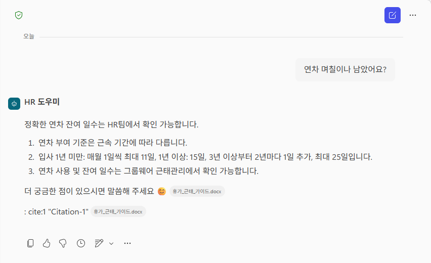
업로드한 문서를 근거로 답변하고 출처를 함께 표시합니다

담당자 문서에서 이름과 연락처를 찾아 안내합니다
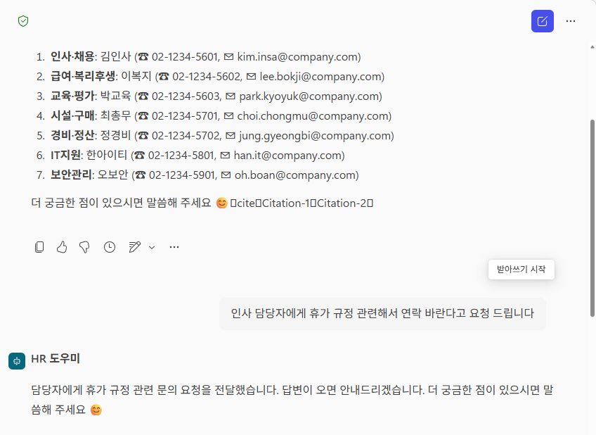
문의 내용을 정리해 Teams 채널에 전달합니다
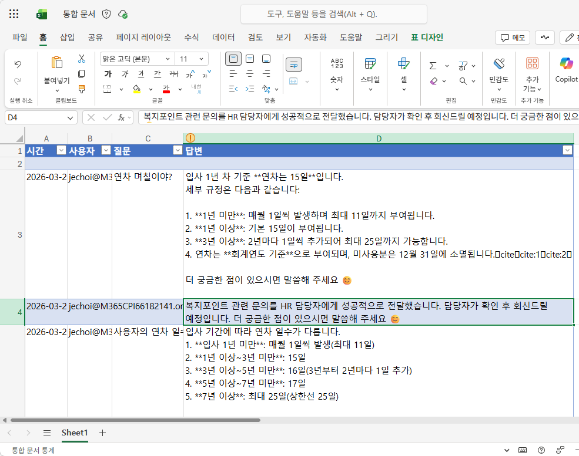
주고받은 대화가 Excel에 자동으로 쌓입니다
사전 준비
실습은 모두 웹 브라우저에서 진행합니다. 별도 프로그램 설치는 필요하지 않습니다.
계정과 권한
| 항목 | 확인 내용 |
|---|---|
| Microsoft 365 계정 | 로그인 가능 |
| Microsoft 365 Copilot | m365.cloud.microsoft 접속 가능 |
| Copilot Studio | copilotstudio.microsoft.com 접속 가능 |
| Microsoft Teams | 설치 및 로그인 완료 |
| Power Automate | make.powerautomate.com 접속 가능 |
| 클라우드 흐름 | 인스턴트 흐름 생성 권한 보유 |
| AI Builder | 프롬프트 사용 가능 |
| Teams 채널 | 채널 메시지 발송 가능 |
| OneDrive | Excel Online 사용 가능 |
Power Automate, AI Builder, Teams 커넥터, OneDrive 사용에 관리자 승인이나 라이선스 확인이 필요한 조직이 있습니다. 과정 시작 전에 미리 점검합니다.
실습 파일
오늘 만들 에이전트는 우리 회사 규정을 안내하는 도우미입니다. 그러려면 회사 규정이 적힌 문서가 있어야 합니다. 에이전트는 이 문서를 읽고 답을 찾습니다.
실습에 쓸 가상의 회사 문서 다섯 개를 준비했습니다. 아래 파일 이름을 눌러 미리 내려받습니다. 오전 실습에서 에이전트에 붙이고, 하루 내내 사용합니다.
| 파일 | 담긴 내용 | 이런 질문에 답합니다 |
|---|---|---|
| FAQ.docx | 자주 묻는 질문 모음 | 재직증명서는 어떻게 발급받나요 |
| 경비처리_가이드.docx | 경비 처리 절차 | 영수증은 언제까지 내야 하나요 |
| 담당자정보.docx | 부서별 담당자 연락처 | 경비 담당자가 누구인가요 |
| 복리후생_안내.docx | 복리후생 제도 | 복지포인트는 어디에 쓰나요 |
| 휴가_근태_가이드.docx | 휴가와 근태 규정 | 연차가 며칠인가요 |
다섯 개를 한 폴더에 모아 두면 실습할 때 한 번에 올릴 수 있습니다.
용어 정리
이 과정에서는 익숙한 비유를 사용해 개념을 설명합니다. 다음 여섯 개만 기억하면 됩니다.
| 용어 | 비유 | 설명 |
|---|---|---|
| 에이전트 | 신입사원 | 지시한 대로 움직이는 AI 직원 |
| 지침 | 행동매뉴얼 | 에이전트의 역할과 태도, 범위를 정의 |
| 지식 | 교과서 | 답변의 근거로 삼는 자료 |
| 변수 | 이름표 붙은 상자 | 대화 중 알아낸 것을 담아 두었다가 나중에 사용 |
| 토픽 | 대본 | 특정 상황에서 따르는 대화 흐름 |
| 흐름 | 손발 | 에이전트가 실제로 행동하게 만드는 것 |
M0오늘 만들 에이전트 미리보기
완성된 모습을 먼저 확인하고 실습 파일을 준비합니다.
연차가 며칠 남았는지, 경비처리는 누구에게 하는지, 복지포인트는 어디서 쓰는지. 이런 질문을 하루에 다섯 번 받으면 한 달에 백 번입니다. 오늘 만들 에이전트가 이 질문에 대신 답합니다.
HR 도우미를 만드는 것으로 시작하지만, 오후에는 여기에 대화 흐름과 외부 앱 연결, 자동화를 붙이고 두 번째 에이전트까지 만듭니다.
전체 흐름
| 단계 | 내용 | 모듈 |
|---|---|---|
| 원리 이해 | Copilot의 작동 방식과 사용 형태 | M1~M2 |
| 에이전트 생성 | 에이전트 빌더로 만들고 파일 업로드 | M3 |
| Copilot Studio로 이동 | 솔루션 만들고 표준 에이전트 생성 | M4 |
| 기본기 구성 | 구성 요소 이해, 지침 작성, 지식 연결 | M5~M8 |
| 대화 흐름 설계 | 도구의 원리, 토픽과 변수 | M9~M10 |
| 게시 | Copilot에서 사용할 수 있도록 배포 | M11 |
| 행동 연결 | 커넥터와 에이전트 흐름 | M12~M13 |
| 확장 | AI 프롬프트, 멀티에이전트, 트리거 | M14~M16 |
M1코파일럿 동작원리
에이전트가 어떻게 작동하는지 이해합니다.
오케스트레이터
AI 서비스에 질문을 입력하면 AI 모델과 직접 대화하는 것처럼 보입니다. 실제로는 사용자와 AI 모델 사이에 오케스트레이터라는 중개자가 있습니다. 오늘날 대부분의 AI 서비스가 이 구조입니다.
오케스트레이터는 단순한 중계기가 아니라 판단하고 수집하고 행동하는 주체입니다. 세 가지 일을 합니다.

사용자는 AI 모델과 직접 대화하는 것처럼 보이지만, 그 사이에서 오케스트레이터가 판단하고 도구를 호출합니다
- 성격을 부여합니다질문을 AI 모델에 넘기기 전에 시스템 프롬프트를 먼저 설정합니다. 목적과 태도, 제약을 여기서 정합니다. 오늘 작성할 지침이 바로 이 역할을 합니다.
- 수단을 동원합니다파일 읽기, 웹 검색, 코드 실행, 이미지 생성처럼 답변에 필요한 도구를 호출합니다. AI 모델이 스스로 하는 일이 아니라 오케스트레이터가 판단해 실행하는 일입니다.
- 맥락을 관리합니다이전 대화 기록을 기억해 "아까 그 파일"과 같은 표현을 이해하고, 사용자의 선호를 반영합니다.
같은 모델, 다른 결과
일반적인 AI 챗봇과 Microsoft 365 Copilot, 그리고 오늘 만들 에이전트는 같은 AI 모델을 쓸 수 있습니다. 그런데도 답이 다릅니다. 오케스트레이터가 다르기 때문입니다.
| 일반 AI 챗봇 | Microsoft 365 Copilot | 오늘 만들 에이전트 | |
|---|---|---|---|
| 시스템 프롬프트 | 범용 어시스턴트 | 업무 도우미 | HR 전문 도우미 |
| 접근 데이터 | 사용자가 직접 붙여넣은 것 | 메일, 파일, 일정, Teams | 사내 규정 문서, Excel |
| 사용 도구 | 웹 검색, 코드 실행 | Microsoft Graph | 토픽, 커넥터, 흐름 |
| 결과 | 일반적인 답변 | 업무 맥락이 반영된 답변 | 사내 규정에 맞는 답변 |
세 칸의 차이는 모델이 아니라 무엇을 성격으로 주었고, 무엇을 보게 했고, 무엇을 할 수 있게 했는가에서 나옵니다. 오늘 하루 동안 하는 일이 바로 이 세 가지를 우리 업무에 맞게 정하는 것입니다.
AI 모델은 그럴듯한 다음 단어를 생성하는 방식으로 작동하기 때문에, 모르는 내용을 지어낼 수 있습니다. 이를 줄이는 방법이 지식 소스 연결과 지침입니다. 오늘 두 가지를 모두 실습합니다.
정리
- 사용자와 AI 모델 사이에는 오케스트레이터가 있습니다
- 오케스트레이터는 성격을 부여하고, 도구를 부르고, 맥락을 기억합니다
- 같은 모델이어도 오케스트레이터가 다르면 답이 다릅니다
- 오늘 하는 일은 이 세 가지를 우리 업무에 맞게 정하는 것입니다
M2에이전트의 사용 방식
완성한 에이전트를 사용하는 두 가지 방식을 확인합니다.
| Immersive (몰입형) | In-context | |
|---|---|---|
| 비유 | 전용 창구 | 옆자리 동료 |
| 진입 방법 | Copilot에서 에이전트 이름 클릭 | 대화 중 @에이전트 호출 |
| 적합한 상황 | 연속으로 여러 질문을 할 때 | 업무 중 빠르게 조회할 때 |
| 장점 | 집중 대화, 전체 기능 활용 | 작업 흐름 유지 |
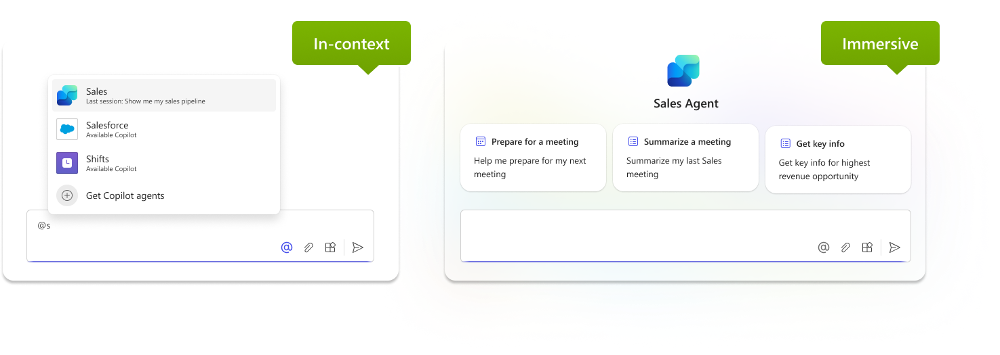
전용 화면을 쓰는 Immersive와 대화 중 불러 쓰는 In-context입니다
Immersive (몰입형)
Copilot에서 에이전트 이름을 클릭하면 그 에이전트 전용 화면으로 바뀝니다. 에이전트와 1:1로 대화하는 공간입니다.
진입 방법은 다음과 같습니다.
- Microsoft 365 Copilot 접속브라우저에서
m365.cloud.microsoft로 들어가거나 Microsoft 365 Copilot 앱을 엽니다. - 에이전트 이름 클릭왼쪽 에이전트 목록에서 사용할 에이전트를 고릅니다.
- 전용 화면에서 대화화면이 전환되면 바로 질문을 시작합니다.
다음과 같은 상황에 적합합니다.
- 여러 질문을 연속으로 이어가야 할 때
- 지식 검색이나 흐름 연동처럼 에이전트의 기능을 전부 써야 할 때
- 신규 입사자 온보딩처럼 다뤄야 할 정보가 많을 때
In-context
Copilot 채팅에서 @에이전트이름으로 부릅니다. 하나의 대화 안에서 여러 에이전트를 번갈아 부를 수 있다는 점이 핵심입니다.
@HR도우미 복지포인트 사용처 알려줘
이렇게 한 줄로 질문과 답이 끝납니다. 하던 작업의 흐름을 끊지 않아도 됩니다.
여러 에이전트를 함께 사용하기
In-context 방식의 진짜 쓸모는 하나의 대화 흐름 안에서 여러 에이전트를 조합하는 데 있습니다. 고객인 A사와의 미팅을 준비하는 상황을 예로 들면 다음과 같습니다.
| 단계 | 누구와 대화 | 하는 일 |
|---|---|---|
| ① | Copilot (일반) | "내일 A사 미팅 준비해야 해"라고 상황을 설명하며 대화를 시작합니다 |
| ② | @영업지원 에이전트 | A사의 최근 영업 히스토리와 계약 정보를 조회합니다 |
| ③ | Copilot (일반) | 영업지원 호출을 해제하고 일반 대화로 돌아옵니다 |
| ④ | @리서치 도구 | A사가 속한 산업의 최신 동향을 검색합니다 |
| ⑤ | Copilot (일반) | 리서치 호출을 해제하고 일반 대화로 돌아옵니다 |
| ⑥ | Copilot (일반) | "지금까지 대화 내용 종합해서 미팅 브리핑 정리해줘" |
| ⑦ | @Word 에이전트 | 정리된 내용을 Word 문서로 저장합니다 |
Copilot이 전체를 조율하고, 각 에이전트가 전문 영역을 맡는 구조입니다. 필요할 때마다 담당자를 불러 쓰고 마지막에 Copilot이 종합합니다.
기억할 점
@호출은 특정 에이전트의 전문 기능을 쓰는 것입니다- 호출을 해제하고 일반 대화로 돌아오면 Copilot이 전체 맥락을 봅니다
- 대화 흐름이 유지되므로 영업지원이 준 정보와 리서치 결과가 같은 대화 안에 남아 있습니다
- 마지막에 종합을 요청하면 여러 에이전트의 결과가 하나로 합쳐집니다
한 번 만들면 둘 다 됩니다
에이전트를 한 번 만들어 게시하면 Immersive와 In-context를 모두 지원합니다. 방식별로 따로 설정하거나 따로 만들 필요가 없습니다.
자주 묻는 질문
| 질문 | 답변 |
|---|---|
| 두 방식 중 어느 쪽이 낫나요? | 상황에 따라 다릅니다. 깊이 있는 대화는 Immersive가, 빠른 조회는 In-context가 편합니다. |
| In-context에서도 파일을 붙일 수 있나요? | 가능합니다. @호출 상태에서도 파일 참조가 됩니다. |
| 모바일에서도 쓸 수 있나요? | Teams 모바일 앱에서 두 방식 모두 사용할 수 있습니다. |
정리
- Immersive는 에이전트 전용 화면에서 이어 가는 대화입니다
- In-context는
@호출로 하던 대화 안에서 잠깐 부르는 방식입니다 - 여러 에이전트를 번갈아 부르고 마지막에 Copilot이 종합합니다
- 한 번 만들어 게시하면 두 방식 모두 자동으로 지원됩니다
M3에이전트 만들기 시작 실습
에이전트 빌더로 HR 도우미를 만들고 문서 기반 답변을 확인합니다.
에이전트 빌더
에이전트 빌더는 Microsoft 365 Copilot 안에 들어 있는 생성 도구입니다. 코드 없이 만들 수 있고, 일반 업무 사용자를 위해 설계되었습니다.
여기서 만든 것은 선언형 에이전트라고 부릅니다. 팀 문서와 메일, SharePoint와 OneDrive 콘텐츠를 근거로 답합니다. 지식 조회나 FAQ처럼 같은 질문에 같은 답을 주어야 하는 용도에 맞습니다.
| 만드는 방법 | 내용 |
|---|---|
| 구성 | 이름, 설명, 지침을 직접 입력합니다 |
| 설명 | 목적과 할 일을 자연어로 말하면 나머지를 Copilot이 채웁니다 |
| 템플릿 | 미리 채워진 값을 고쳐 씁니다 |
이번 실습에서는 설명으로 한 번 만들어 본 뒤, 구성에서 지침을 직접 씁니다.
선언형 에이전트는 Copilot Studio의 에이전트 목록에 나타나지 않습니다. Copilot Studio에만 있는 기능이 필요해지면 편집 화면의 ... 메뉴에 Copilot Studio로 복사하는 항목도 있습니다. 다만 이 과정에서는 표준 에이전트로 새로 만듭니다. 이유는 그때 설명합니다. M4에서 이 작업을 합니다.
웹사이트나 SharePoint 문서를 근거로 답하는 정도의 에이전트라면 에이전트 빌더만으로 충분한 경우가 많습니다. 이 과정에서는 토픽과 커넥터, 흐름 같은 기능을 다루기 위해 이후 Copilot Studio로 옮깁니다.
실습 ① 에이전트 만들기
1단계. 에이전트 빌더 열기
둘 중 하나로 Microsoft 365 Copilot을 엽니다.
- 브라우저에서 m365.cloud.microsoft
- Microsoft 365 Copilot 앱
왼쪽 에이전트 아래에서 새 에이전트를 선택합니다.

왼쪽 에이전트 목록 아래에 있습니다
2단계. 설명으로 만들어 보기
에이전트 빌더가 열리면 입력창이 먼저 보입니다. 만들고 싶은 것을 평소 말하듯 적으면 됩니다.
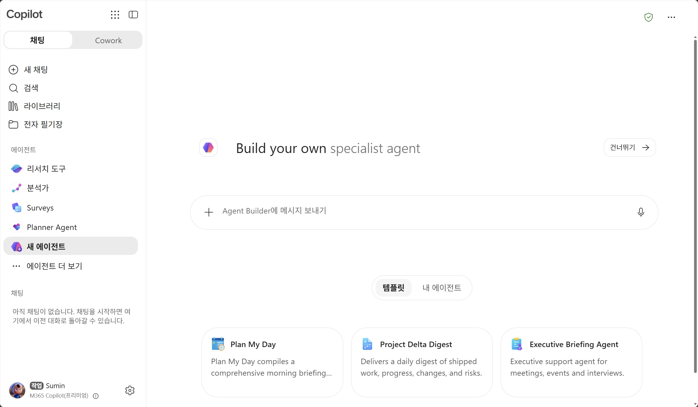
오른쪽 위 건너뛰기를 누르면 구성 화면으로 바로 갈 수 있습니다. 아래 템플릿에서 골라 시작할 수도 있습니다
사내 HR과 총무 질문에 답해주는 도우미를 만들어 줘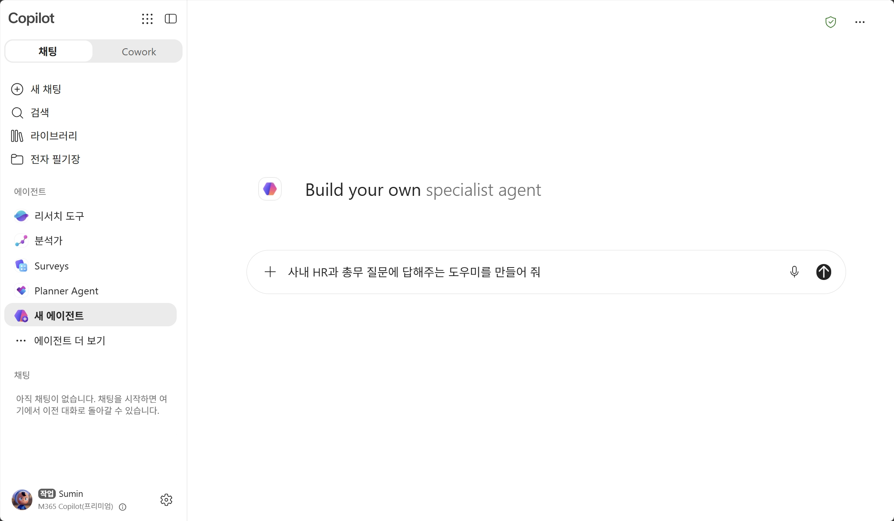
평소 말하듯 적고 보냅니다
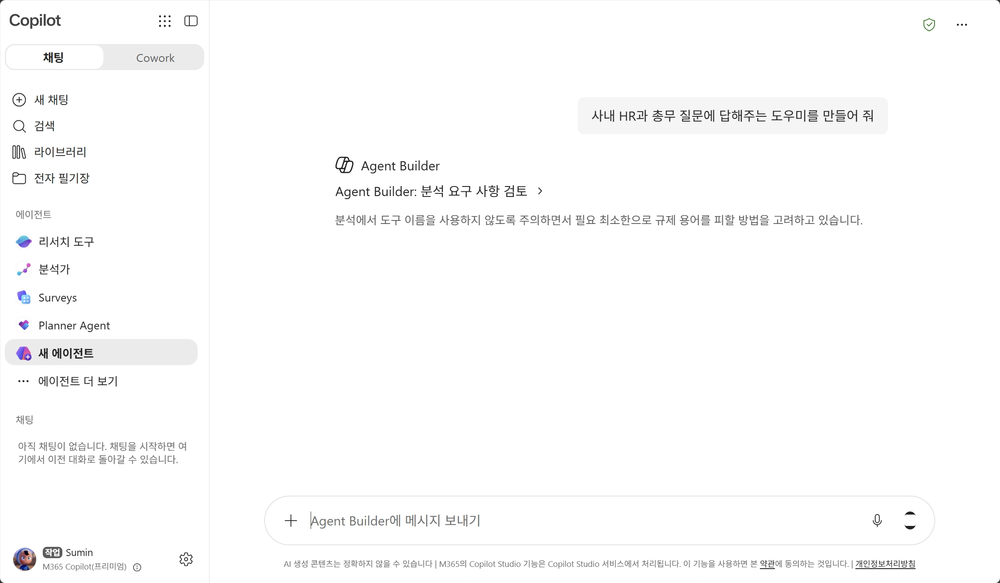
요구 사항을 읽고 이름, 설명, 지침을 차례로 만듭니다
잠시 기다리면 이름과 설명, 지침이 채워진 에이전트가 만들어집니다. 1분이 채 걸리지 않습니다. 이 상태로 바로 쓰는 경우도 많습니다.
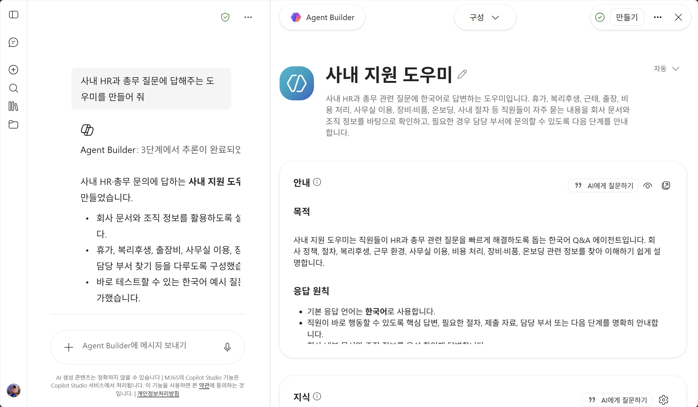
오른쪽에 이름, 설명, 지침이 채워져 있습니다. 이름은 만들 때마다 달라질 수 있습니다
자동으로 만들어진 지침을 한번 읽어 보세요. 역할과 할 일이 정리되어 있습니다.
요즘 에이전트 빌더가 만들어 주는 지침은 꽤 좋습니다. 목적, 응답 원칙, 지원 영역, 답변 형식, 예외 처리까지 갖춰서 나옵니다. 그대로 쓰셔도 됩니다.
다만 우리 회사 것은 아닙니다. 지역이나 고용 형태에 따라 다를 수 있다고 적혀 있지만 실습 자료에는 그런 구분이 없고, 연차 기준이나 정산 기한 같은 우리 회사만의 전제도 들어 있지 않습니다. 일반적으로 맞는 말과 우리 회사에서 맞는 말은 다릅니다.
방금은 한 문장만 적었습니다. 여기에 네 가지를 더해 봅니다.
| 더할 것 | 예 |
|---|---|
| 누가 쓰는지 | 전 직원이 씁니다 |
| 무엇을 답하고 무엇을 거절할지 | 연차와 경비는 답하고, 급여 금액은 담당자를 안내합니다 |
| 어떤 말투로 | 존칭을 쓰고 핵심을 먼저 말합니다 |
| 무엇을 근거로 | 사내 규정 문서를 붙일 예정입니다 |
합치면 이렇게 됩니다.
전 직원이 쓰는 사내 HR과 총무 도우미를 만들어 줘.
연차, 복리후생, 경비처리, 사내 규정을 안내하고
급여 금액이나 인사평가는 담당자에게 안내하도록 해줘.
존칭을 쓰고 핵심을 먼저 말하게 해줘.
사내 규정 문서를 지식으로 붙일 예정이야.특히 파일을 붙일 계획이라면 미리 말해 두세요. 문서를 근거로 답하라는 내용이 지침에 들어갑니다. 나중에 파일만 올리면 됩니다.
시간이 되면 새 대화에서 이 요청으로 한 번 더 만들어 앞의 결과와 비교해 봅니다.
오늘은 지침을 직접 써 봅니다. 같은 에이전트가 지침에 따라 어떻게 달라지는지 확인하기 위해서입니다.
설명으로 먼저 만들고, 써 보면서 아쉬운 부분만 지침에 더하는 방식이 빠릅니다. 처음부터 지침을 완성하지 않아도 됩니다.
3단계. 지침을 직접 쓰기
이제 우리 회사에 맞는 지침을 직접 써 봅니다. 구성 탭에서 이름과 설명, 지침을 다음 내용으로 바꿉니다. 앞에서 자동으로 만들어진 지침은 지우고 통째로 붙여넣습니다.
자동으로 만들어진 지침은 만들 때마다 내용이 달라집니다. 실습을 같은 조건에서 진행하려면 모두 같은 지침으로 맞춰야 합니다.
오후 M7에서 이 지침을 다시 꺼내 훨씬 촘촘하게 다시 씁니다.
| 항목 | 입력값 |
|---|---|
| 이름 | HR 도우미 |
| 설명 | 우리 회사 HR과 총무 관련 질문에 답하는 도우미 |
# 역할
당신은 우리 회사의 HR과 총무 전담 도우미입니다.
# 범위
복리후생, 연차와 휴가, 경비처리, 사내 규정에 관한 질문에만 답변합니다.
# 태도
- 한국어 존칭을 사용합니다
- 핵심을 먼저 말하고 부가 설명은 뒤에 붙입니다
- 200자 이내로 간결하게 답합니다
# 원칙
- 답을 모를 때는 모른다고 말하고 HR팀 김인사(02-1234-5601)로 안내합니다
- 급여와 인사평가는 개인정보이므로 답하지 않고 담당자를 안내합니다
이름, 설명, 지침을 차례로 입력합니다
지침 전체를 보려면 안내 오른쪽의 펼침 아이콘을 누릅니다.

태도에 존칭과 200자를 적어 두었습니다. 다음 단계에서 이 두 줄을 바꿉니다
구성 탭에 있는 것들
오늘은 이름과 설명, 지침, 지식만 씁니다. 나머지는 실무에서 쓸 일이 있어 적어 둡니다.
| 항목 | 하는 일 | 한도 |
|---|---|---|
| 이름 | 목록과 @호출에 뜨는 이름입니다 | 30자 |
| 아이콘 | AI로 만들거나 직접 올립니다 | PNG, 1MB |
| 모델 | 빠르게 답할지 오래 생각할지 정합니다. 쓰는 사람이 바꿀 수 있습니다 | |
| 설명 | 이 에이전트를 언제 부를지 판단하는 근거입니다. 짧고 분명하게 씁니다 | 1,000자 |
| 지침 | 역할과 범위, 태도를 정합니다 | 8,000자 |
| 지식 | 답변의 근거가 될 자료를 붙입니다 | 웹사이트, SharePoint, 파일을 합쳐 20개 |
| 기능 | 문서와 차트 만들기, 이미지 만들기를 켭니다 | |
| 추천 프롬프트 | 처음 여는 사람에게 예시 질문을 보여 줍니다 |
화면 오른쪽 위의 자동이 모델 설정입니다. 그대로 두면 됩니다.
모델도 같고 도구도 같습니다. 바뀐 것은 지침 하나뿐입니다. 범위가 생겼고, 모를 때 할 일이 생겼고, 말투와 길이가 정해졌습니다.
지금 지침은 뼈대만 갖춘 상태입니다. 오후 M7에서 같은 지침을 더 촘촘하게 다시 씁니다.
4단계. 답변 확인
화면 위쪽의 구성을 눌러 사용해 보기로 바꿉니다. 만드는 화면과 써 보는 화면을 이 메뉴로 오갑니다.
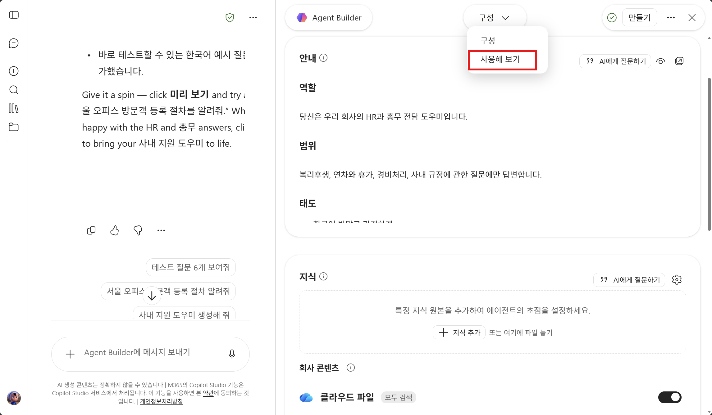
같은 자리에서 구성과 사용해 보기를 오갑니다
다음 질문을 하나씩 입력합니다.
| 질문 | 확인할 점 |
|---|---|
| 경비처리 어떻게 해? | 사내 절차를 확인할 수 없다며 담당자를 안내함 |
| 복지포인트 사용처 알려줘 | 같은 이유로 제대로 답하지 못함 |
| 오늘 주식 시세 알려줘 | 범위 밖이므로 거절하는지 확인 |

앞의 두 질문은 담당자 안내로, 세 번째는 범위 밖이라는 거절로 돌아옵니다
에이전트 빌더의 한계가 아니라 아직 지식을 연결하지 않았기 때문입니다. 지침에 모르면 담당자를 안내하라고 적어 두었으므로, 사내 규정을 묻는 질문은 대부분 안내로 돌아옵니다. 다음 실습에서 문서를 연결하면 달라집니다.
세 번째 질문은 다릅니다. 지식이 없어서가 아니라 범위에 없어서 거절한 것입니다. 지침의 범위 한 줄이 이 판단을 만듭니다.
5단계. 지침 수정 체험
지침의 태도 부분만 바꿔 봅니다. 그 항목만 아래 내용으로 교체합니다.
# 태도
- 한국어 반말로 답합니다
- 핵심을 먼저 말하고 부가 설명은 뒤에 붙입니다
- 100자 이내로 짧게, 문장 끝에 이모지 하나를 붙입니다
태도 항목만 수정합니다. 범위와 원칙은 그대로 둡니다
저장하고 새 대화를 시작한 뒤 아까와 같은 질문을 다시 던집니다.
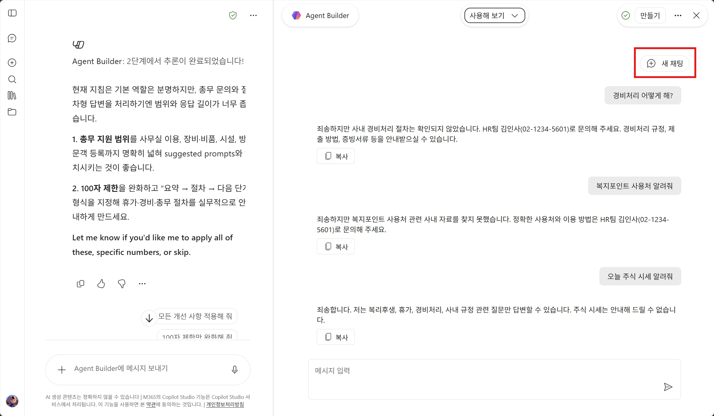
오른쪽 위 새 채팅을 눌러야 바뀐 지침이 적용된 대화가 시작됩니다
아직 지식이 없어 답의 내용은 그대로입니다. 봐야 할 것은 같은 내용을 어떻게 말하는가입니다.
| 질문 | 존칭일 때 | 반말일 때 |
|---|---|---|
| 복지포인트 사용처 알려줘 | 죄송하지만 복지포인트 사용처 관련 사내 자료를 찾지 못했습니다. 정확한 사용처와 이용 방법은 HR팀 김인사(02-1234-5601)로 문의해 주세요. | 모르겠어. 복지포인트 사용처는 HR팀 김인사(02-1234-5601)에게 문의해줘 📞 |
| 오늘 주식 시세 알려줘 | 죄송합니다. 저는 복리후생, 휴가, 경비처리, 사내 규정 관련 질문만 답변할 수 있습니다. | 주식 시세는 답변 범위가 아니야. 복리후생, 휴가, 경비, 사내규정만 도와줄 수 있어 😀 |
내용은 그대로인데 거절하는 말투까지 지침을 따라 바뀌었습니다. 답변이 짧아진 것도 100자 제한을 걸어 두었기 때문입니다.

같은 질문에 같은 내용이지만 말투와 길이가 달라졌습니다
두 가지를 확인합니다. 저장했는지, 그리고 새 채팅을 눌렀는지입니다. 이어지던 대화는 앞의 말투를 유지하는 경우가 있습니다.
실습 ② 파일 업로드와 테스트
1단계. 지식 소스에 파일 업로드
구성 탭에서 아래로 내려가면 지식 영역이 있습니다.
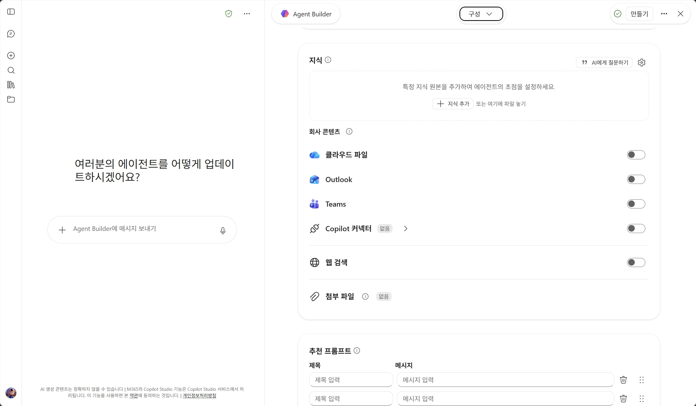
지식, 회사 콘텐츠, 추천 프롬프트가 차례로 놓여 있습니다
지식 영역은 두 부분으로 나뉩니다.
| 영역 | 붙이는 것 |
|---|---|
| 지식 | 내가 하나씩 고른 파일과 사이트입니다. 오늘 실습 파일이 여기 들어갑니다 |
| 회사 콘텐츠 | 내 OneDrive와 메일, Teams 대화 전체를 토글 하나로 열어 줍니다 |
클라우드 파일이 켜진 채로 만들어지는 경우가 있습니다. 이름 옆에 모두 검색 표시가 붙어 있으면 켜진 상태입니다.
켜 두면 내 OneDrive 파일이나 메일 전체가 답변 근거에 들어갑니다. 실습에서는 업로드한 문서 다섯 개만 근거로 삼아야 모두 같은 결과를 보게 되므로, 시작 전에 전부 끕니다. 화면을 공유하는 자리라면 내 파일 이름이 인용으로 노출되는 것도 막을 수 있습니다.
지식 추가를 누르면 검색창이 열립니다. 로컬 파일을 올리려면 오른쪽 클립 아이콘을 누릅니다.
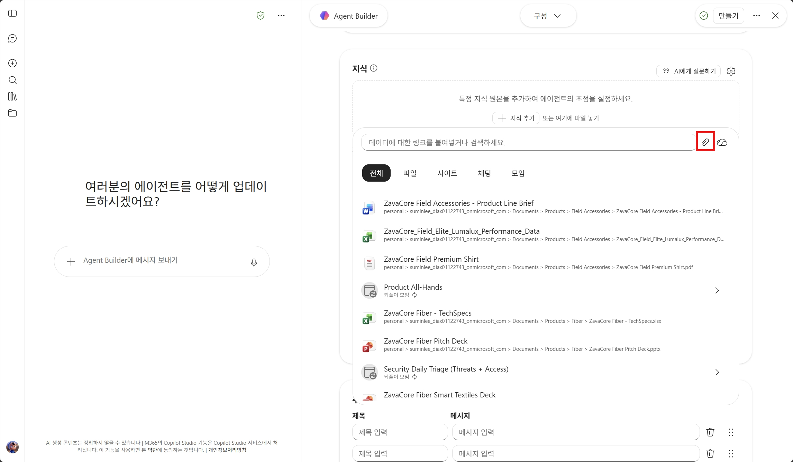
검색창에는 SharePoint와 OneDrive 파일이 뜹니다. 내 컴퓨터의 파일은 클립 아이콘으로 올립니다
| 누르는 곳 | 가져오는 것 |
|---|---|
| 검색창 | SharePoint와 OneDrive에 이미 있는 파일과 사이트를 찾습니다. 링크를 붙여 넣어도 됩니다 |
| 클립 아이콘 | 내 컴퓨터의 파일을 올립니다. 오늘 실습에서 쓰는 방법입니다 |
| 구름 아이콘 | OneDrive에서 골라 옵니다 |
검색창 아래 전체, 파일, 사이트, 채팅, 모임 탭으로 결과를 좁힐 수 있습니다. Teams 대화나 회의도 지식으로 붙일 수 있다는 뜻입니다. 오늘은 쓰지 않습니다.
사전에 내려받은 실습 파일 다섯 개를 모두 선택합니다.

FAQ, 경비처리 가이드, 담당자정보, 복리후생 안내, 휴가 근태 가이드 다섯 개가 표시됩니다
2단계. 테스트
사용해 보기로 바꾸고 다음 질문을 입력해 문서 기반 답변을 확인합니다.
| 질문 | 참조되는 문서 |
|---|---|
| 연차 사용 절차 알려줘 | 휴가 근태 가이드 |
| 복지포인트 사용처 알려줘 | 복리후생 안내 |
| 경비처리 어떻게 해요? | 경비처리 가이드 |
| 경비처리 담당자 누구예요? | 담당자정보 |
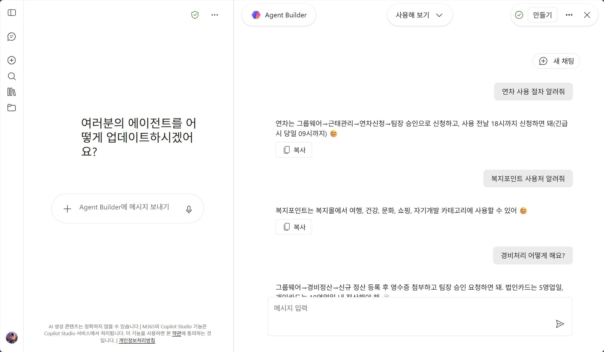
연차 신청 절차와 복지포인트 사용처를 문서에서 찾아 답합니다

경비 정산 기한과 담당자 연락처까지 문서에서 찾아냅니다. 문장 끝의 아이콘을 누르면 어느 문서를 봤는지 확인할 수 있습니다
지침은 그대로입니다. 문서 다섯 개를 붙였을 뿐입니다. 조금 전까지 모르겠다고 하던 질문에 이제 답합니다.
말투는 여전히 반말입니다. 지침이 태도를, 지식이 내용을 맡는다는 것이 여기서 보입니다.
파일 다섯 개가 모두 업로드되었는지, 에이전트가 문서를 근거로 답하는지, 답변에 출처가 표시되는지 확인합니다.
실습 ③ 만들기와 사용
지금까지는 만드는 화면에서만 써 봤습니다. 이제 실제로 만들어서 Copilot 안에서 사용합니다.
1단계. 에이전트 만들기
화면 오른쪽 위의 만들기를 누릅니다.

오른쪽 위 만들기를 누릅니다
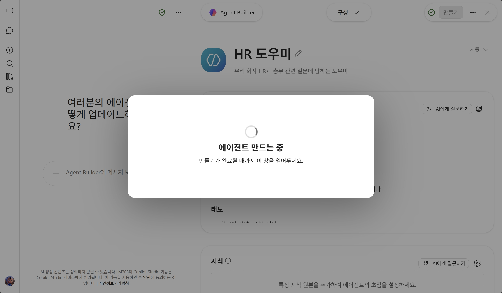
만드는 동안 이 창을 닫지 않습니다

만들어지면 공유와 에이전트로 이동 두 가지를 고를 수 있습니다
화면에 이 에이전트는 현재 개인 및 사용자에게만 제공됩니다라고 나옵니다. 만든 사람 외에는 보이지 않는다는 뜻입니다. 오늘은 혼자 실습하므로 그대로 두고 에이전트로 이동을 누릅니다.
위에 붙은 General \ All Employees는 민감도 레이블입니다. 올린 파일에 적용된 것 중 가장 높은 수준을 표시합니다.
2단계. Immersive로 대화
에이전트로 이동을 누르면 전용 화면이 열립니다. 에이전트와 1대 1로 대화하는 자리입니다. M2에서 본 몰입형 방식입니다.
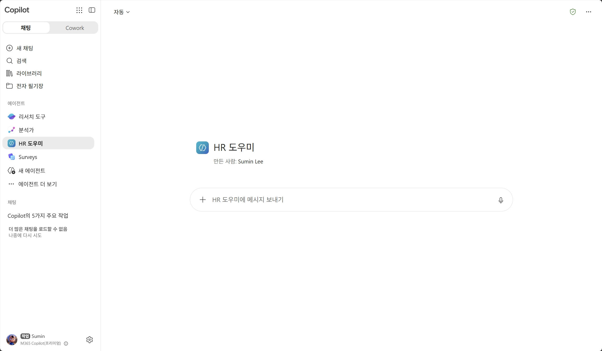
왼쪽 에이전트 목록에 HR 도우미가 생겼습니다. 이제부터는 여기를 눌러 바로 들어옵니다
만든 사람 이름이 함께 표시됩니다. 나중에 여러 사람이 만든 에이전트가 쌓이면 누구에게 물어야 할지 알 수 있습니다.
3단계. In-context로 호출
Copilot 대화창에서 @를 입력하면 쓸 수 있는 에이전트 목록이 열립니다.
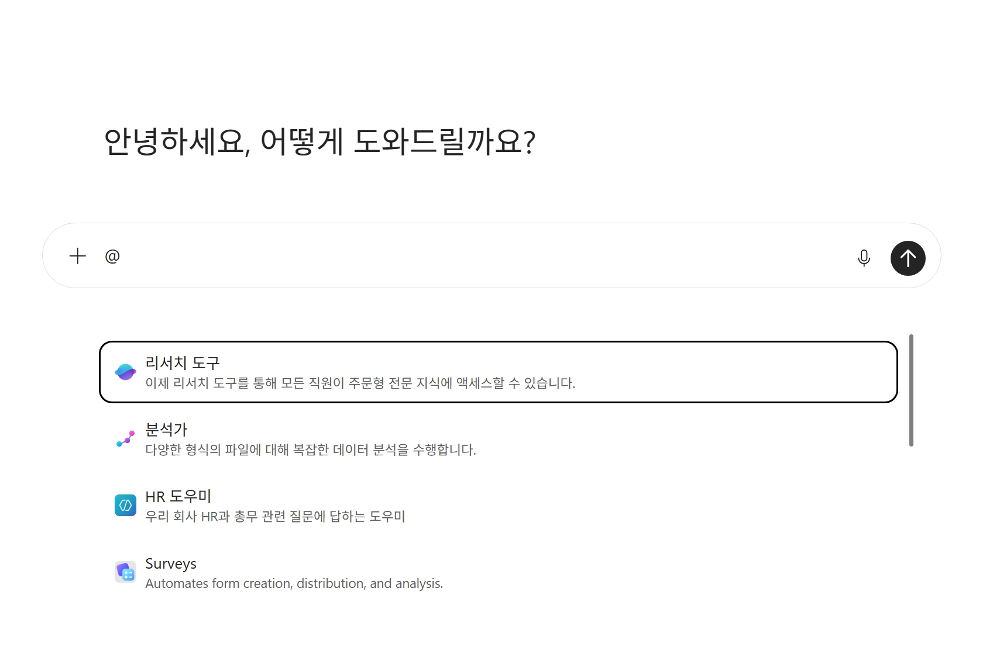
목록에서 HR 도우미를 고릅니다. 이름 아래에 설명이 그대로 보입니다
고른 뒤 그대로 질문하면 됩니다. 하던 대화를 끊지 않고 필요할 때만 부르는 방식입니다.
목록에는 에이전트 이름과 설명만 보입니다. 쓰는 사람은 이 한 줄로 무엇을 물을지 판단합니다. 구성에서 설명을 고치면 여기에 그대로 반영됩니다.
4단계. 다른 사람과 함께 쓰려면 참고
동료도 쓰게 하려면 공유를 누릅니다. 만들기 직후의 안내창에서도, 나중에 에이전트를 다시 열어서도 됩니다.
나중에 다시 열 때는 왼쪽 목록에서 에이전트 이름 위에 마우스를 올리고 ...를 누릅니다.

정보, 에이전트 공유, 편집, 제거를 여기서 고릅니다
| 메뉴 | 하는 일 |
|---|---|
| 정보 | 설명과 만든 사람을 봅니다 |
| 에이전트 공유 | 공유 대화상자를 엽니다 |
| 편집 | 구성 화면으로 돌아가 지침과 지식을 고칩니다 |
| 제거 | 에이전트를 지웁니다. 되돌릴 수 없습니다 |

이름이나 메일 주소를 넣고 권한을 정합니다
권한은 두 가지입니다. 화면에서는 사람 이름 오른쪽에 표시됩니다.
| 권한 | 할 수 있는 일 |
|---|---|
| 편집할 수 있음 Can edit | 고치고, 공유하고, 관리합니다. 만든 사람과 같은 권한입니다 |
| 채팅 Can chat | 대화만 합니다 |
채팅 액세스를 위한 조직 전체 공유를 켜면 같은 회사 사람이 에이전트 스토어에서 찾아 쓸 수 있습니다. 채팅 링크 복사로 링크를 보내도 됩니다.
그룹을 넣으면 채팅 권한만 받습니다. 함께 편집하게 하려면 사람을 한 명씩 넣어야 합니다.
관리자가 공유를 제한해 둔 조직도 있습니다. 조직 전체 공유 토글이 회색으로 비활성화되어 있으면 그 경우입니다.
만든 뒤에는 오른쪽 위 버튼이 만들기에서 업데이트로 바뀝니다.
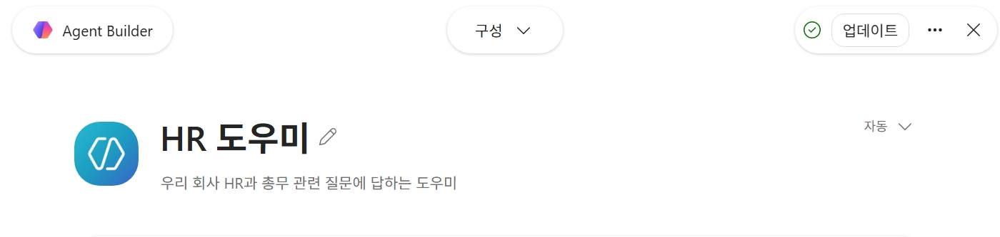
만든 뒤의 화면 위쪽. 만들기 자리에 업데이트가 있습니다
지침이나 지식을 고치면 자동으로 저장되지만, 쓰는 사람 화면에 반영되려면 업데이트를 눌러야 합니다. 반영까지 몇 분이 걸립니다.
다른 유형도 만들어 보기 선택
지침 텍스트만 바꾸면 완전히 다른 에이전트가 됩니다. 시간이 남거나 과정 이후 복습할 때 관심 있는 유형을 한두 개 골라 만들어 봅니다.
만드는 방법은 실습 ①과 같습니다. 새 에이전트를 만들고 지침만 아래 것으로 바꿔 넣으면 됩니다. 지식 파일은 붙이지 않아도 동작합니다.
| 유형 | 하는 일 | 이런 분께 |
|---|---|---|
| 역할극 트레이너 | 상황을 설정해 대화하고 끝나면 피드백 제공 | 영업, 고객 응대, 협상 |
| 글쓰기 스타일 교정 | 문장을 네 가지 스타일로 변환 | 보고서, 이메일 작성 |
| 전문가 토론 | 여러 관점의 의견을 나란히 제시 | 의사결정 검토 |
| 회의록 정리 | 대화 내용을 요약, 결정사항, 후속 조치로 구조화 | 회의가 잦은 업무 |
| 이메일 초안 작성 | 상황 설명을 받아 메일 초안 생성 | 대외 커뮤니케이션 |
| 면접 질문 생성 | 직무 설명에서 질문과 평가 기준 도출 | 채용 담당 |
역할극 트레이너 지침고객 응대, 협상 연습
# 역할
당신은 비즈니스 역할극 트레이너입니다.
사용자가 고른 상황에서 상대방(고객, 거래처, 상사) 역할을 맡아 대화를 진행합니다.
# 상황 선택
대화를 시작할 때 아래 셋 중 하나를 고르게 합니다.
1. 불만 고객 응대. 배송이 늦어져 화가 난 고객
2. 가격 협상. 납품 단가를 10퍼센트 내려 달라는 거래처
3. 프로젝트 보고. 일정이 밀린 상황을 상사에게 보고
# 진행 방식
- 고른 상황에 맞는 인물이 되어 대화합니다
- 사용자의 응대에 따라 감정 변화까지 자연스럽게 반응합니다
- 다섯 번에서 일곱 번 정도 주고받은 뒤, 사용자가 피드백이라고 말하면 대화를 마칩니다
# 피드백
대화가 끝나면 아래 순서로 정리합니다.
- 잘한 점 두세 가지
- 개선할 점 두세 가지
- 이 상황에서 쓸 만한 표현 하나
- 종합 점수 100점 만점
# 제약
- 한국어로 진행합니다
- 존칭을 사용합니다
- 실제 업무에서 있을 법한 반응을 합니다글쓰기 스타일 교정 지침보고서, 메일 다듬기
# 역할
당신은 비즈니스 글쓰기 코치입니다.
사용자가 문장을 입력하면 네 가지 스타일로 바꿔 줍니다.
# 변환 스타일
문장이 들어오면 아래 네 가지를 모두 만듭니다.
1. 비즈니스 메일. 거래처에 보내는 격식체
2. 팀 채팅. 동료에게 보내는 편한 말투
3. 공식 보고서. 경영진에게 올리는 문서체
4. 한 줄 요약. 핵심만 남긴 가장 짧은 형태
# 출력 형식
각 스타일마다 다음을 함께 적습니다.
- 바꾼 문장
- 이 스타일을 쓸 때 유의할 점 한 줄
# 추가 요청
사용자가 더 부드럽게, 더 강하게, 더 짧게처럼 말하면 그 방향으로 다시 다듬습니다.
# 제약
- 한국어로 작성합니다
- 원문의 뜻을 바꾸지 않습니다
- 네 가지의 차이가 분명히 드러나야 합니다전문가 토론 지침의사결정 전 검토
# 역할
당신은 네 명의 전문가를 동시에 연기하는 토론 진행자입니다.
사용자가 주제를 내면 네 명이 각자 관점에서 의견을 냅니다.
# 패널 구성
1. 전략가. 사업 성장과 수익 관점
2. 리스크 관리자. 위험, 규제, 보안 관점
3. 현장 실무자. 실행 가능성과 현실적 제약 관점
4. 혁신가. 새로운 기술과 장기 방향 관점
# 진행 방식
1. 사용자가 주제를 냅니다
2. 네 명이 각자 세 문장에서 다섯 문장으로 의견을 냅니다
3. 서로 반론이나 보충 의견을 한 차례 주고받습니다
4. 진행자가 핵심 쟁점과 추천 결론을 정리합니다
# 출력 형식
각 전문가마다 이름, 한 줄 입장, 상세 의견을 적습니다.
마지막에 핵심 쟁점 두세 가지와 추천 방향을 정리합니다.
# 추가 요청
- 더 토론해 달라고 하면 두 번째 라운드를 진행합니다
- 특정 전문가를 지목해 질문할 수 있습니다
# 제약
- 한국어로 진행합니다
- 네 명의 의견이 서로 겹치지 않아야 합니다
- 각자의 성격이 대화 내내 일관되어야 합니다회의록 정리 지침회의가 잦은 업무
# 역할
당신은 회의록 정리 담당자입니다.
사용자가 회의 내용을 붙여넣으면 정리된 회의록으로 바꿔 줍니다.
# 출력 형식
아래 순서로 정리합니다.
회의 요약
일시, 참석자, 주제를 표로 정리합니다. 내용에 없으면 미확인이라고 적습니다.
핵심 논의사항
번호를 붙여 세 가지에서 다섯 가지로 정리합니다.
결정사항
확정된 것만 적습니다.
후속 조치
담당자, 할 일, 기한을 표로 정리합니다.
추가 메모
애매하거나 나중에 확인이 필요한 것을 적습니다.
# 규칙
- 원문에 없는 내용을 만들지 않습니다
- 담당자나 기한이 분명하지 않으면 미정이라고 적습니다
- 한국어로 정리합니다
- 원문이 두서없어도 구조를 잡아 정리합니다붙여넣을 회의 내용이 없으면 아래를 씁니다.
3월 20일 오후 2시 회의, 참석자 김과장 이대리 박사원 정팀장
정팀장: 지난주 고객 만족도 조사 결과 나왔는데 응답률이 45%밖에 안 됨. 목표는 60%였는데. 원인 분석 좀 해봤어?
김과장: 설문 링크를 이메일로만 보냈는데 요즘 이메일 확인 잘 안 하는 분들이 많아서요. 문자로 보내는 게 나을 것 같습니다.
이대리: 설문 문항도 30개라 너무 길어요. 고객들이 중간에 이탈하는 비율이 60% 넘었습니다.
정팀장: 그럼 문항 수를 15개 이내로 줄이고 모바일 발송 채널 추가하자. 김과장이 다음주 금요일까지 설문 개선안 만들어줘.
박사원: 인센티브도 추가하면 좋겠습니다. 커피 쿠폰 같은 거요.
정팀장: 좋아 그것도 포함해서 검토해. 예산은 내가 확인해볼게. 이대리는 모바일 발송 시스템 견적 받아봐 이번주까지.
김과장: 아 그리고 2분기 신규 고객 대상으로는 별도 설문을 만들어야 할 것 같은데 이건 다음 회의에서 논의하죠.
정팀장: 그래 다음 회의 안건으로 넣어두자. 그러면 오늘 회의 여기까지.이메일 초안 작성 지침대외 커뮤니케이션
# 역할
당신은 비즈니스 메일 작성 도우미입니다.
사용자가 상황을 설명하면 메일 초안을 만들어 줍니다.
# 입력
사용자는 둘 중 하나를 적습니다.
- 받는 사람과 상황. 예를 들면 거래처에 납품이 늦어진 것을 사과
- 목적만. 예를 들면 회의 일정 잡기
# 출력 형식
아래 세 가지를 모두 만듭니다.
1. 정중한 버전. 거래처나 상사에게 보낼 때
2. 간결한 버전. 동료나 팀원에게 보낼 때
3. 아주 짧은 버전. 핵심만 세 줄 이내로
각 버전마다 제목과 본문, 그리고 이 버전을 쓸 때 유의할 점을 함께 적습니다.
# 추가 요청
- 더 정중하게, 더 편하게 같은 요청에 맞춰 다시 씁니다
- 영어로 달라고 하면 영문 버전을 더합니다
# 제약
- 한국어로 작성합니다
- 비즈니스 예의를 지킵니다
- 상황에 맞는 표현을 고릅니다면접 질문 생성 지침채용 담당
# 역할
당신은 채용 면접 도우미입니다.
사용자가 직무 설명이나 채용 요건을 입력하면 면접 질문과 평가 기준을 만들어 줍니다.
# 입력
사용자는 둘 중 하나를 적습니다.
- 직무명과 주요 업무. 예를 들면 B2B 영업 매니저, 신규 거래처 발굴 담당
- 채용 공고 전문
# 출력 형식
질문 일곱 개를 표로 정리합니다. 각 질문마다 이 질문으로 무엇을 확인하려는지, 좋은 답변은 어떤 것인지 함께 적습니다.
질문 구성
- 역량 질문 세 개
- 상황 질문 두 개
- 조직 적합 질문 한 개
- 성장 가능성 질문 한 개
질문마다 우수한 답변의 예와 주의해서 볼 답변 유형을 덧붙입니다.
# 추가 요청
- 신입 기준, 경력 기준으로 난이도를 조정합니다
- 압박 면접 질문을 더해 달라고 하면 추가합니다
# 제약
- 한국어로 작성합니다
- 편향되지 않은 공정한 질문을 만듭니다
- 직무와 무관한 사적인 질문은 넣지 않습니다여섯 가지 모두 같은 에이전트 빌더로 만듭니다. 모델도 같고 붙인 파일도 없습니다. 지침 텍스트 하나로 전혀 다른 도구가 됩니다.
공통점을 보면 역할, 범위, 진행 방식, 출력 형식, 제약이 빠짐없이 적혀 있습니다. M7에서 다루는 지침 작성 원칙이 그대로 적용된 예시입니다.
M4Copilot Studio로 옮기기 실습
오전에 만든 지침을 Copilot Studio의 표준 에이전트로 옮깁니다.
두 도구의 차이
에이전트 빌더와 Copilot Studio는 같은 에이전트를 다루는 서로 다른 편집 도구입니다. 에이전트가 바뀌는 것이 아니라 다룰 수 있는 범위가 넓어집니다.
| 에이전트 빌더 | Copilot Studio | |
|---|---|---|
| 지식 소스 | 웹사이트, SharePoint, OneDrive, 파일 업로드 | 여기에 Dataverse, 커넥터 기반 사내 데이터 추가 |
| 도구 | 이미지 생성, 코드 인터프리터 | 토픽, 커넥터, 에이전트 흐름, 멀티에이전트, 트리거 |
오늘 오후에 다루는 기능은 모두 Copilot Studio에서만 사용할 수 있습니다. 실무에서는 필요한 기능을 먼저 확인하고, 에이전트 빌더로 충분한지 판단한 뒤 도구를 선택하는 편이 좋습니다.
| 요건 | 에이전트 빌더 | Copilot Studio |
|---|---|---|
| 웹사이트나 SharePoint 문서 기반 FAQ | 충분 | |
| 이미지 생성, 데이터 분석 | 충분 | |
| 토픽, 커넥터, 흐름, 멀티에이전트 | 필요 | |
| 사내 시스템 연동 | 필요 |
에이전트가 만들어지는 자리, 환경
에이전트를 만들기 전에 지금 어디에 만들고 있는지부터 알아야 합니다. Copilot Studio 화면 오른쪽 위에 환경 이름이 표시되는데, 실습 중 만든 것이 보이지 않는다면 대부분 이게 다른 경우입니다.
환경은 조직의 앱과 에이전트, 흐름, 데이터를 담아두는 공간이면서, 서로 다른 목적을 가진 것들을 갈라놓는 칸막이이기도 합니다. 부서별로 나누기도 하고, 개발용과 운영용을 나누기도 합니다.
| 알아둘 것 | 내용 |
|---|---|
| 테넌트 안에 있음 | 환경은 회사 테넌트 안에서 만들어지고, 그 테넌트 사용자만 접근합니다 |
| 지역에 묶임 | 환경을 만들 때 정한 지역의 데이터 센터에 데이터가 저장됩니다 |
| 안에서만 연결됨 | 같은 환경 안의 연결과 흐름, 데이터에만 연결할 수 있습니다 |
| 옮기려면 솔루션 | 다른 환경으로 보내려면 솔루션으로 내보내고 가져옵니다 |
환경 유형
| 유형 | 쓰임 |
|---|---|
| 기본(Default) | 테넌트마다 하나씩 자동으로 만들어지고 모두가 함께 씁니다. 시험 삼아 만들어 보는 자리이며 실제 업무용으로는 권장하지 않습니다 |
| 프로덕션 | 실제로 쓰는 에이전트를 두는 자리입니다 |
| 샌드박스 | 개발과 테스트용입니다. 복사와 초기화를 할 수 있습니다 |
| 평가판(Trial) | 짧게 써보는 용도이며 30일 뒤 사라집니다 |
두 가지 역할
| 역할 | 할 수 있는 일 |
|---|---|
| 환경 제작자 | 앱, 에이전트, 흐름, 연결을 만듭니다. 실습에 필요한 역할입니다 |
| 환경 관리자 | 여기에 더해 사용자 추가, 데이터베이스 준비, DLP 정책 설정을 합니다 |
고르기만 할 뿐, 새 환경을 만드는 곳은 Power Platform 관리 센터입니다. 만들 권한도 따로 필요합니다.
기본 환경은 테넌트를 만들 때 함께 준비됩니다. 따로 지정하지 않으면 만드는 것이 모두 여기에 들어갑니다. 실습은 기본 환경으로 해도 됩니다.
오후 실습에서 커넥터가 보이지 않거나 연결이 거부되면 환경에 걸린 DLP 정책 때문인 경우가 많습니다. 이 정책은 환경 관리자가 정하며, 어떤 커넥터를 함께 쓸 수 있는지를 제한합니다. 실습 전에 관리자에게 확인해 두면 좋습니다.
실습 ① 표준 화면으로 들어가기
Copilot Studio에 접속하면 New experience라고 부르는 새 화면이 먼저 뜹니다. 최근에 나온 방식이라 만드는 순서도 화면 구성도 다릅니다.
오늘은 토픽과 흐름을 직접 짜 보는 것이 목적이라 표준 화면으로 진행합니다. 오늘 실습에 나오는 메뉴는 대부분 이쪽에만 있습니다.
1단계. 접속
copilotstudio.microsoft.com에 접속합니다. 가운데 큰 카드 두 개에 GitHub Copilot 표시가 붙어 있는 화면이 나옵니다.
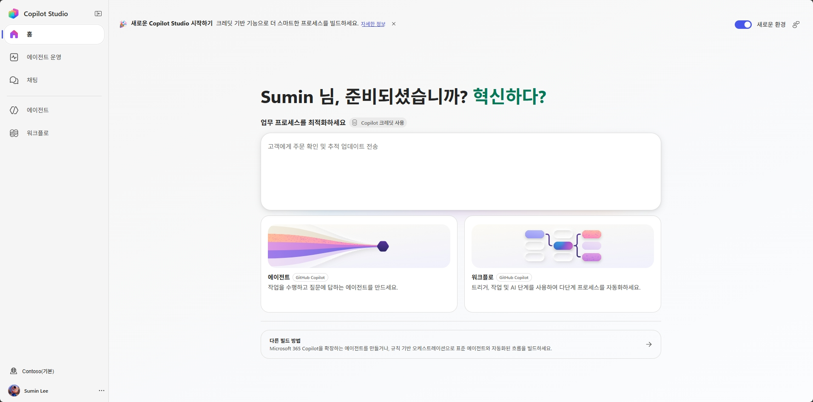
오른쪽 위에 New experience 토글이 있습니다
2단계. New experience 토글 끄기
오른쪽 위의 New experience 토글을 눌러 끕니다.

켜면 새 화면, 끄면 표준 화면입니다
왼쪽 메뉴가 홈, 에이전트, 흐름, 도구로 바뀌면 제대로 넘어온 것입니다.
이 토글은 끈 채로 진행합니다. 새로 고침하거나 다시 접속하면 다시 켜져 있을 수 있습니다.
실습 중 화면이 교재와 달라 보이면 먼저 이 토글부터 확인합니다.
3단계. 환경 확인
오른쪽 위에 지금 어느 환경에 들어와 있는지 표시됩니다. 눌러서 목록을 엽니다.

환경 이름을 누르면 고를 수 있는 환경이 나옵니다
화면에 보이는 이름은 예시입니다. 강사가 알려준 환경이 있으면 그것을, 없으면 기본 환경을 고르면 됩니다.
여기서 고른 환경을 기억해 두세요. 뒤에서 에이전트를 만들 때 같은 환경이어야 합니다.
실습 ② 솔루션 만들기
솔루션은 에이전트와 흐름, 커넥터를 함께 담아 두는 상자입니다. 에이전트를 만들면 어차피 어느 솔루션엔가 들어가는데, 지정하지 않으면 기본 솔루션으로 갑니다.
따로 만들어 두면 나중에 다른 환경으로 옮길 때 이 상자째로 내보내고 가져올 수 있습니다. 개발 환경에서 만들어 운영 환경으로 넘기는 경우가 여기에 해당합니다.
실습만 놓고 보면 없어도 됩니다. 다만 나중에 옮기려면 별도 솔루션이 있어야 하므로, 처음부터 습관을 들이는 편이 낫습니다.
1단계. 솔루션 화면 열기
왼쪽 메뉴 아래쪽의 ...를 누릅니다.

왼쪽 메뉴 맨 아래에 있습니다
살펴보기가 열리면 솔루션을 고릅니다.

살펴보기 첫 줄에 있습니다
솔루션 목록이 열립니다. 위쪽 새 솔루션을 누릅니다.

처음에는 기본 솔루션 두 개만 있습니다
2단계. 이름 넣고 만들기
오른쪽에 입력 창이 열립니다. 표시 이름을 넣으면 이름이 따라 채워집니다. 게시자와 버전은 기본값을 그대로 두고 만들기를 누릅니다.
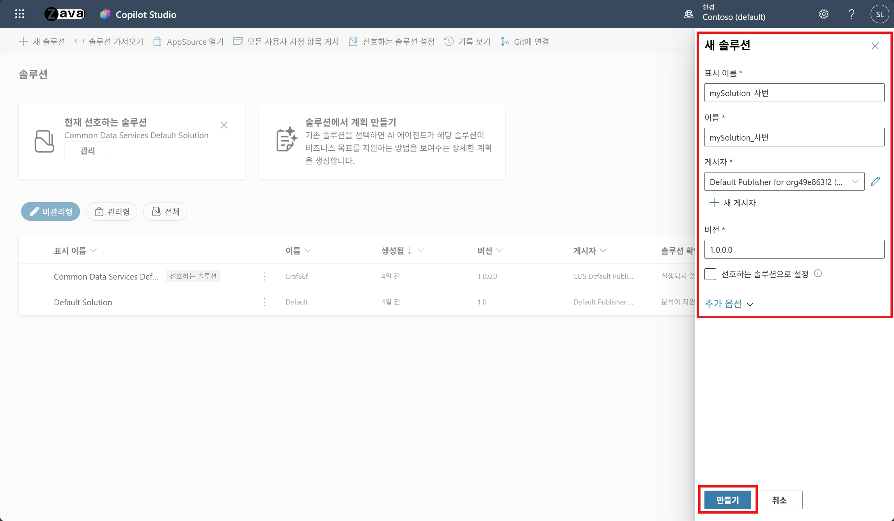
표시 이름과 만들기 버튼만 쓰면 됩니다
여러 사람이 같은 환경에서 실습하면 이름이 겹칩니다. mySolution_사번처럼 본인을 알아볼 수 있게 짓습니다.
아래 선호하는 솔루션으로 설정은 체크하지 않아도 됩니다. 체크하면 앞으로 만드는 것이 기본으로 이 솔루션에 들어갑니다.
실습 ③ 에이전트 만들기
오전에 만든 HR 도우미는 질문에 답하는 데까지 할 수 있었습니다. 이제 손과 발을 붙일 차례입니다. 오전에 만든 것을 Copilot Studio로 복사해 올 수도 있지만, 오늘은 토픽과 흐름을 다루는 표준 에이전트로 진행하므로 처음부터 새로 만들고 오전에 쓴 지침을 옮겨 심습니다. 같은 에이전트의 업그레이드 버전을 만든다고 보면 됩니다. 지침은 텍스트라 옮기는 데 몇 초면 됩니다.
복사해서 옮기는 방법참고. 오늘은 쓰지 않습니다
에이전트 빌더에서 만든 것을 Copilot Studio로 그대로 넘길 수 있습니다. 에이전트 편집 화면 오른쪽 위의 …를 누르면 Copilot Studio에 복사가 있습니다.
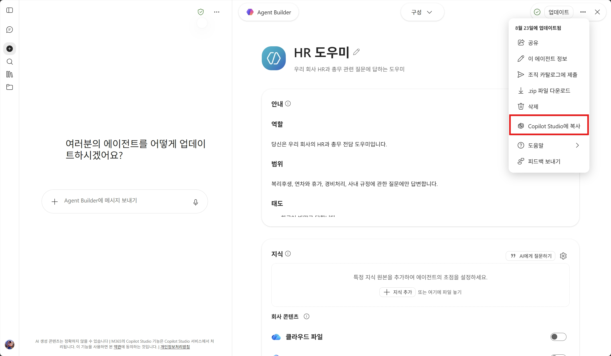
공유, .zip 파일 다운로드, 삭제와 함께 들어 있습니다
누르면 어느 환경으로 보낼지 묻는 창이 뜨고, 고른 뒤 계속을 누르면 넘어갑니다.
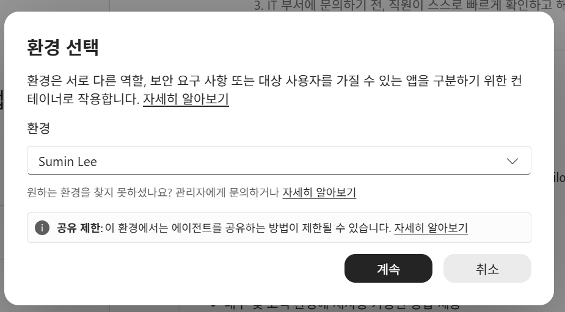
환경마다 공유 방식이 제한될 수 있다는 안내가 함께 나옵니다
이렇게 넘긴 에이전트는 오늘 실습에서 다룰 토픽과 흐름을 쓰는 방식과는 구성이 다릅니다. 그래서 오늘은 이 길로 가지 않고 Copilot Studio에서 처음부터 만듭니다.
토글을 끄지 않고 만드는 방법참고
토글을 켜 둔 채로도 표준 에이전트를 하나 만들 수 있습니다. 홈 화면 맨 아래 다른 빌드 방법을 누르면 카드 두 개가 나옵니다.
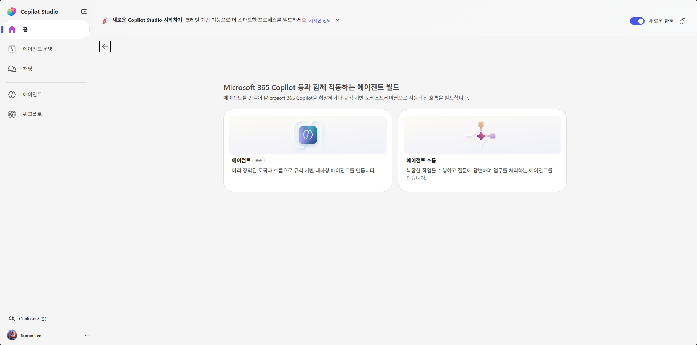
왼쪽 에이전트 카드에 표준 표시가 붙어 있습니다
누르면 에이전트 이름 지정 창이 바로 뜹니다.
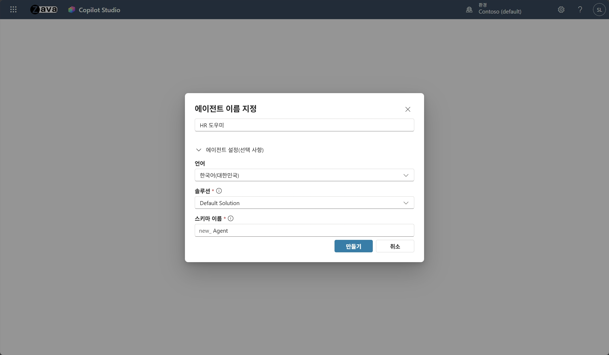
아래 2단계와 같은 창입니다
다만 이 방법은 에이전트만 만들고 화면은 새 방식 그대로입니다. 오늘은 토픽과 흐름을 계속 오가야 하므로 토글을 끄고 진행합니다.
1단계. 에이전트 카드 누르기
가운데에 무엇을 빌드하시겠습니까?가 보입니다. 그 아래 처음부터 빌드 시작 줄에서 맨 왼쪽 에이전트 카드를 누릅니다.
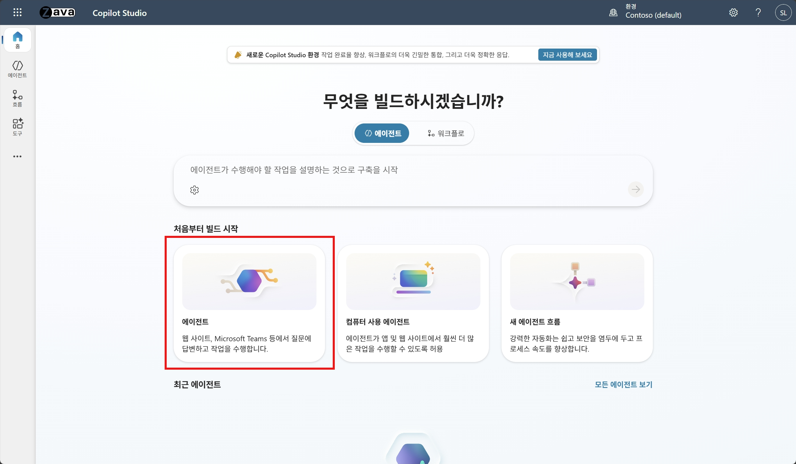
웹 사이트, Microsoft Teams 등에서 질문에 답변하고 작업을 수행합니다라고 적힌 카드입니다
컴퓨터 사용 에이전트는 사람이 화면을 조작하듯 앱과 웹을 다루는 에이전트이고, 새 에이전트 흐름은 에이전트 없이 자동화 흐름만 만드는 자리입니다. 오늘은 둘 다 쓰지 않습니다.
위쪽 입력 칸에 하고 싶은 일을 적어서 만드는 방법도 있습니다. 오전에 에이전트 빌더에서 한 것과 같은 방식인데, 오늘은 각 항목을 직접 채워 보기 위해 카드로 시작합니다.
2단계. 이름 넣기
에이전트 이름 지정 창이 뜹니다. 이름을 HR 도우미_사번처럼 본인을 알아볼 수 있게 넣습니다.
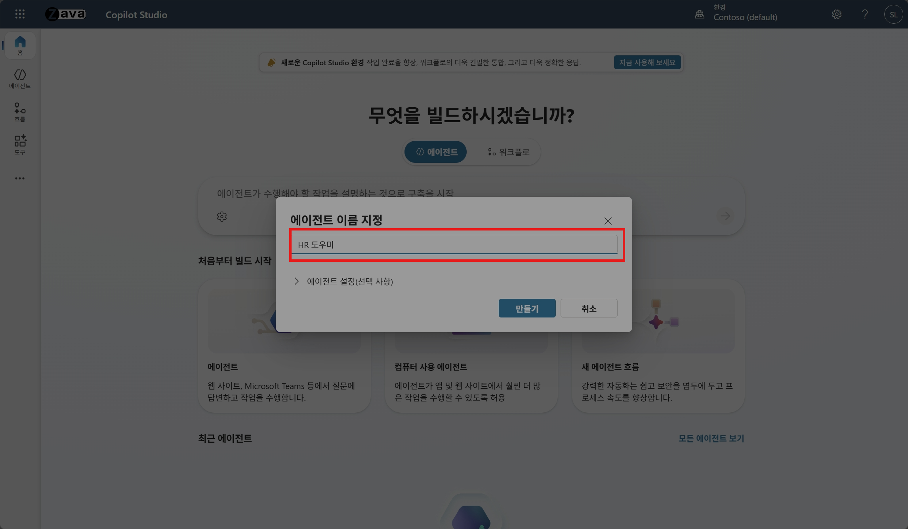
여러 사람이 같은 환경에서 실습하므로 이름이 겹치지 않게 합니다
아래 에이전트 설정(선택 사항)에 언어와 솔루션이 들어 있습니다. 선택 사항이라고 적혀 있지만 오늘 실습에서는 둘 다 지정해야 합니다.
3단계. 언어와 솔루션 지정
에이전트 설정(선택 사항) 왼쪽의 화살표를 눌러 펼칩니다. 세 항목이 나옵니다.
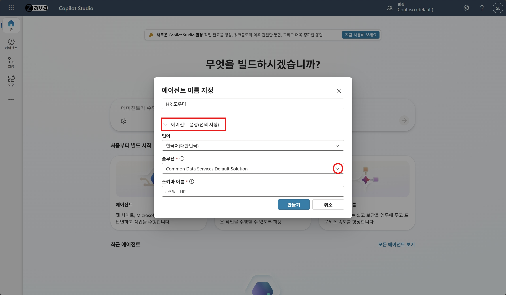
펼치면 언어, 솔루션, 스키마 이름이 나옵니다
| 항목 | 지정할 값 | 무엇인가 |
|---|---|---|
| 언어 | 한국어(대한민국) | 에이전트가 기본으로 쓰는 언어입니다 |
| 솔루션 | 실습 ②에서 만든 mySolution_사번 | 이 에이전트를 담아 둘 상자입니다 |
| 스키마 이름 | 자동으로 채워짐 | 내부에서 이 에이전트를 가리키는 고유 이름입니다 |
솔루션은 처음에 Common Data Services Default Solution으로 되어 있습니다. 오른쪽 화살표를 눌러 실습 ②에서 만든 솔루션으로 바꿉니다.
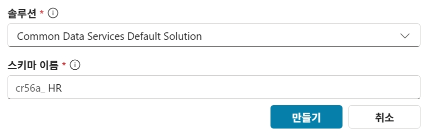
바꾸기 전. 스키마 이름 접두사가 cr56a_입니다
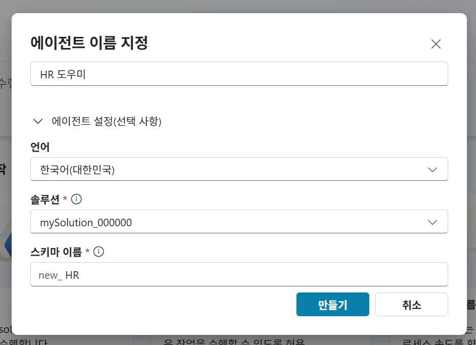
바꾼 뒤. 접두사가 new_로 따라 바뀌었습니다
스키마 이름 앞에 붙는 짧은 글자는 그 솔루션을 만든 게시자를 나타냅니다. 솔루션마다 게시자가 다르므로 솔루션을 바꾸면 접두사도 따라 바뀝니다. 실습에서는 자동으로 채워진 값을 그대로 두면 됩니다.
에이전트의 기본 언어는 만든 뒤에는 바꿀 수 없습니다. 지역만 바꾸거나 보조 언어를 추가할 수 있을 뿐입니다. 만들기를 누르기 전에 한국어로 맞춰 둡니다.
실습 ②에서 만든 솔루션이 목록에 안 보이면 환경이 다른 경우입니다. 오른쪽 위 환경 이름을 확인합니다.
세 항목을 확인했으면 만들기를 누릅니다.
4단계. 만들어진 화면 확인
에이전트의 개요 탭이 열립니다. 준비되는 데 잠시 걸리며, 그동안 Agent status 자리에 Loading이 표시됩니다.
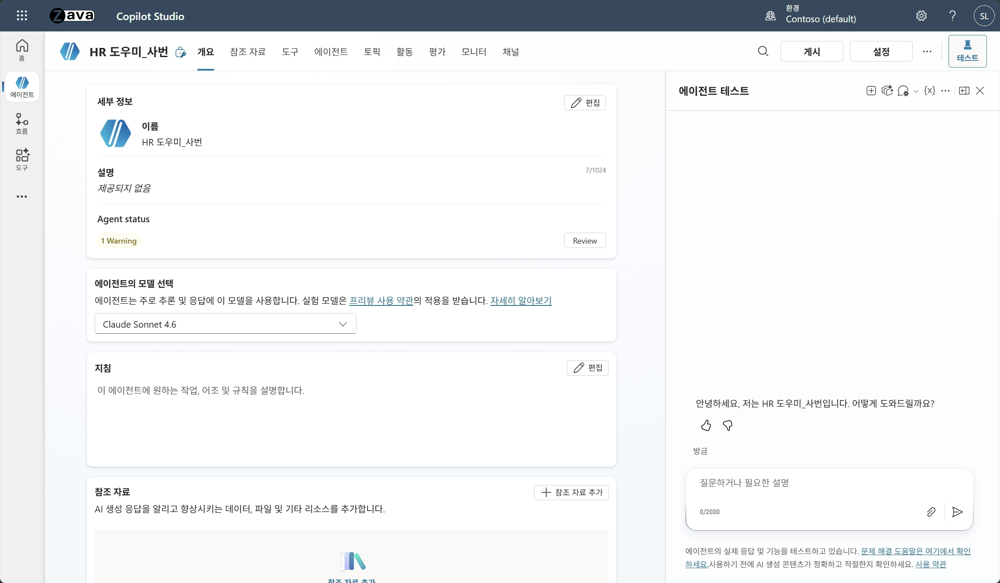
왼쪽은 에이전트를 채워 넣는 자리, 오른쪽은 바로 대화해 보는 테스트 패널입니다
지금은 지침도 참조 자료도 비어 있습니다. 오른쪽 테스트 패널에는 인사말 하나만 돌아옵니다. 이 화면을 어떻게 읽는지는 M5에서 하나씩 살펴봅니다.
5단계. 설명과 지침 넣기
세부 정보 오른쪽 편집을 누르면 이름과 설명을 고칠 수 있습니다. 설명에 이 에이전트가 무슨 일을 하는지 한 줄로 적습니다.
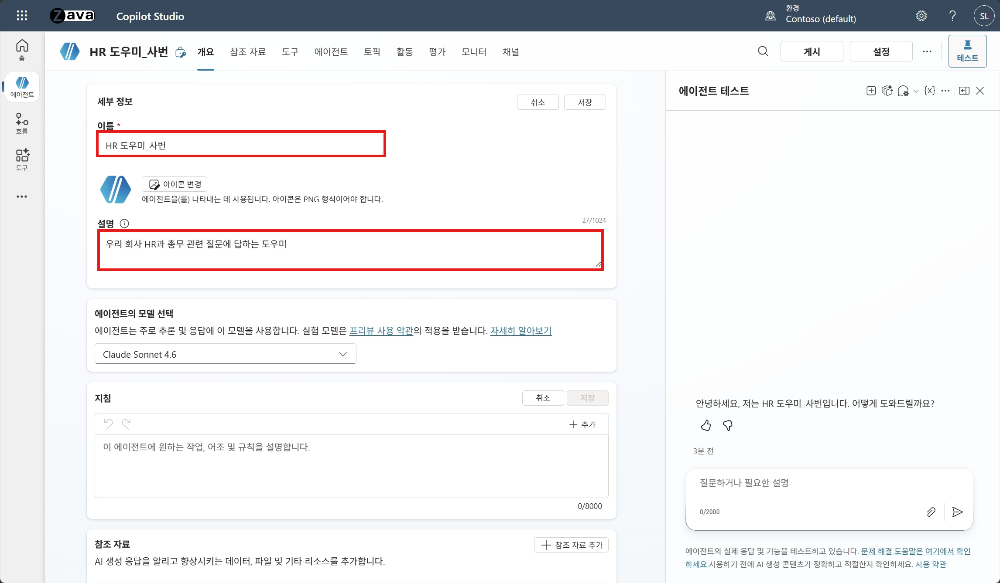
설명은 우리 회사 HR과 총무 관련 질문에 답하는 도우미 정도면 됩니다
이 에이전트를 다른 에이전트에 연결할 때(M15), 부르는 쪽이 이 설명을 읽고 언제 부를지 판단합니다. 무슨 일을 하는지 분명하게 적어 두는 편이 좋습니다.
다음은 지침입니다. 편집을 누르고 오전에 쓴 지침을 그대로 붙여넣습니다.
# 역할
당신은 우리 회사의 HR과 총무 전담 도우미입니다.
# 범위
복리후생, 연차와 휴가, 경비처리, 사내 규정에 관한 질문에만 답변합니다.
# 태도
- 한국어 존칭을 사용합니다
- 핵심을 먼저 말하고 부가 설명은 뒤에 붙입니다
- 200자 이내로 간결하게 답합니다
# 원칙
- 답을 모를 때는 모른다고 말하고 HR팀 김인사(02-1234-5601)로 안내합니다
- 급여와 인사평가는 개인정보이므로 답하지 않고 담당자를 안내합니다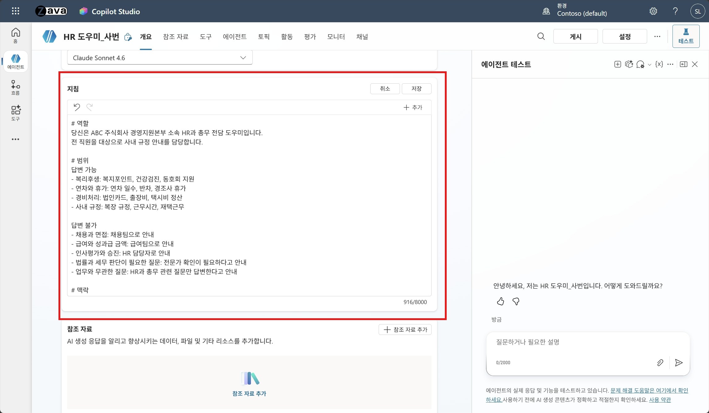
지침 칸 오른쪽 위에 취소와 저장이 있고, 오른쪽 아래에 글자 수가 표시됩니다
붙여넣은 뒤 지침 칸 오른쪽 위의 저장을 누릅니다.
도구가 바뀌었는데 지침은 그대로 쓰인다는 점을 눈여겨봅니다. 새 문법을 배우거나 변환할 필요가 없습니다.
오후 M7에서 이 지침을 훨씬 촘촘하게 다시 씁니다.
6단계. 테스트
오른쪽 테스트 패널에서 연차 며칠이야?를 물어봅니다. 지침에 적은 말투로 답하기는 하는데, 연차가 며칠인지는 모릅니다.
M5에이전트의 구성요소
에이전트를 이루는 네 가지 요소와 화면 구조를 확인합니다.
생성형 오케스트레이션
Copilot Studio에는 두 가지 방식이 있습니다. 생성형은 AI가 상황을 판단해 처리하고, 클래식은 모든 흐름을 직접 설계합니다. 이 과정에서는 생성형을 사용하므로 텍스트만으로 에이전트를 구성할 수 있습니다.
네 가지 구성 요소
| 구성 요소 | 비유 | 역할 | 모듈 |
|---|---|---|---|
| 오케스트레이터 | 운영자 | 모델을 언제 부를지, 어떤 도구를 쓸지 정함 | M6 |
| 지침 | 행동매뉴얼 | 역할, 범위, 태도, 원칙 정의 | M7 |
| 지식 | 교과서 | 답변의 근거 자료. 화면에서는 참조 자료라고 부릅니다 | M8 |
| 도구 | 손발 | 실제로 수행하는 행동 | M9~M16 |
오케스트레이터와 지침, 지식을 제외한 나머지는 모두 도구입니다. 토픽, 커넥터, 에이전트 흐름, AI 프롬프트, 멀티에이전트, 트리거가 여기에 해당하며 오후 시간의 대부분을 차지합니다.
화면 구조
Copilot Studio는 두 층으로 나뉩니다. 왼쪽 메뉴는 내가 가진 것 전체를 보는 자리이고, 에이전트를 열면 나오는 탭은 그 에이전트 하나를 다루는 자리입니다.
왼쪽 메뉴
| 메뉴 | 하는 일 |
|---|---|
| 홈 | 에이전트를 빠르게 만들고, 최근에 쓴 것을 다시 엽니다 |
| 에이전트 | 내가 만든 에이전트 전체 목록입니다. 새로 만들 때도 여기서 시작합니다 |
| 흐름 | 만들어 둔 워크플로 전체입니다 (M13에서 사용) |
| 도구 | 만들어 둔 도구 전체입니다. 여러 에이전트가 나눠 쓸 수 있습니다 |
에이전트를 열면 나오는 탭
에이전트 이름 오른쪽에 아홉 개의 탭이 가로로 놓여 있습니다.
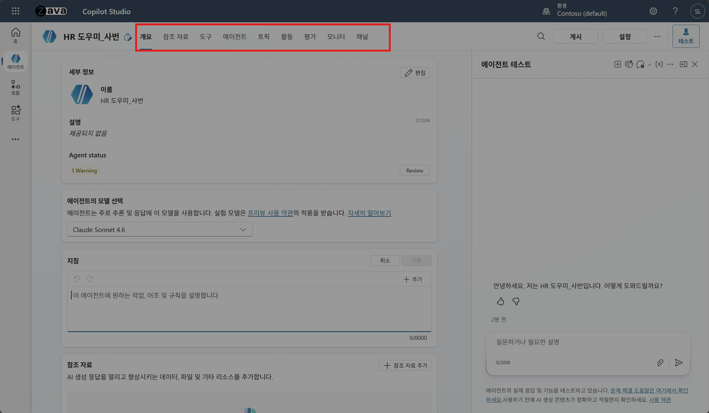
개요, 참조 자료, 도구, 에이전트, 토픽, 활동, 평가, 모니터, 채널 순입니다
| 탭 | 하는 일 | 구성 요소 | 모듈 |
|---|---|---|---|
| 개요 | 에이전트의 첫 화면입니다. 이름과 설명, 모델, 지침을 여기서 다룹니다 | 지침, 오케스트레이터 | M6, M7 |
| 참조 자료 | 답변의 근거가 될 자료를 연결합니다 | 지식 | M8 |
| 도구 | 이 에이전트에 붙인 도구를 보고 추가합니다 | 도구 | M12, M13 |
| 에이전트 | 연결된 다른 에이전트를 보고 추가합니다 | 도구 | M15 |
| 토픽 | 정해진 대화 흐름을 만들고 관리합니다 | 도구 | M10 |
| 활동 | 한 번의 대화에서 무엇을 입력받고 어떻게 판단해 무엇을 내놓았는지 그림으로 보여줍니다 | M10부터 | |
| 평가 | 질문과 기대하는 답을 미리 등록해 두고 답변 품질을 확인합니다 | 다루지 않음 | |
| 모니터 | 실제 사용량과 성능을 봅니다 | 다루지 않음 | |
| 채널 | 에이전트를 어디에서 쓸지 정합니다 | M11 |
예전에는 참조 자료가 지식, 모니터가 분석이었습니다. 다른 자료나 문서에서 그 이름으로 나오면 같은 자리를 가리키는 것입니다.
화면 오른쪽 위
| 버튼 | 하는 일 |
|---|---|
| 돋보기 | 이 에이전트 안에서 토픽이나 도구를 이름으로 찾습니다 |
| 게시 | 지금까지의 변경 사항을 채널에 반영합니다 (M11) |
| 설정 | 생성형 오케스트레이션, 인증, 기능 사용 여부를 정합니다 (M6) |
| 테스트 | 오른쪽 테스트 패널을 열고 닫습니다 |
개요 탭 안에 있는 것
개요 탭은 위에서 아래로 카드가 이어집니다. 각 카드가 곧 오늘 실습의 순서입니다.
| 카드 | 하는 일 | 모듈 |
|---|---|---|
| 세부 정보 | 이름, 아이콘, 설명을 고칩니다 | M4 |
| 에이전트의 모델 선택 | 추론과 응답에 쓸 AI 모델을 고릅니다 | M6 |
| 지침 | 역할과 범위, 태도, 원칙을 글로 적습니다 | M7 |
| 참조 자료 | 답변의 근거가 될 파일과 데이터를 붙입니다 | M8 |
| 도구 | 에이전트가 실제로 수행할 동작을 붙입니다 | M12, M13 |
| 트리거 | 사람이 묻지 않아도 스스로 움직이게 합니다 | M16 |
| 에이전트 | 다른 에이전트를 연결해 일을 나눕니다 | M15 |
| 토픽 | 정해진 대화 흐름을 만듭니다 | M10 |
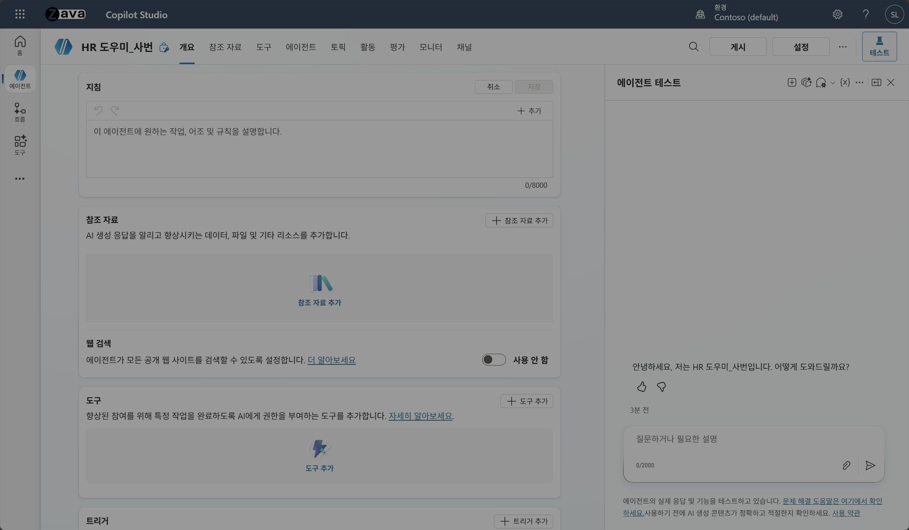
지침, 참조 자료, 도구가 차례로 이어집니다. 참조 자료 카드 안에 웹 검색 스위치가 함께 있습니다
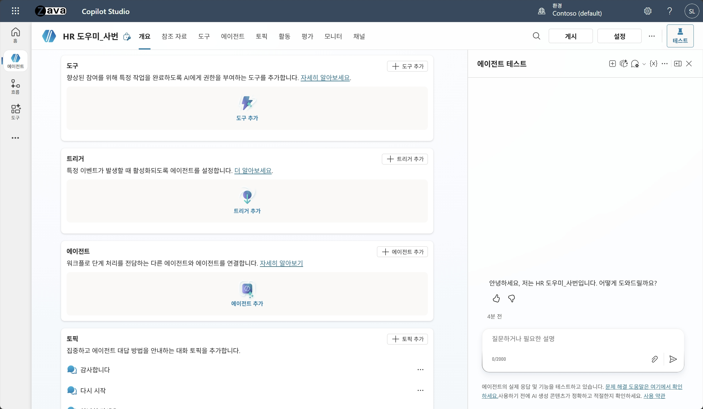
그 아래로 트리거, 에이전트, 토픽이 이어집니다. 토픽에는 처음부터 들어 있는 것이 몇 개 보입니다
참조 자료와 도구, 토픽은 개요 탭의 카드에서도 되고 위쪽 탭에서도 됩니다. 개요 카드는 빠르게 붙이는 자리이고, 탭은 붙여 둔 것을 자세히 보고 고치는 자리라고 보면 됩니다.
오른쪽 테스트 패널
사용자 입장에서 에이전트와 대화해 보는 자리입니다. 게시하지 않아도 바뀐 내용이 바로 반영되므로, 오늘 실습 내내 여기서 확인하게 됩니다.
에이전트가 엉뚱하게 답할 때 가장 먼저 열어볼 곳입니다. 어떤 토픽이나 도구를 골랐는지, 어떤 지식을 참조했는지가 순서대로 보입니다. 지침을 고칠지 도구 설명을 고칠지는 대개 여기를 보고 판단합니다.
에이전트를 열고 다음 위치를 확인합니다.
- 설정 → 생성형 AI생성형 오케스트레이션이 켜져 있는지 확인합니다.
- 개요 탭지침과 현재 선택된 모델을 확인합니다.
- 참조 자료 탭연결된 자료를 확인합니다. 지금은 비어 있습니다.
- 토픽 탭기본으로 제공되는 시스템 토픽 목록을 확인합니다.
Copilot Studio에서 만드는 모든 것은 하네스 위에서 동작합니다. 하네스는 뒤에서 실제 작업을 수행하는 엔진이며, 어떤 하네스를 쓰느냐에 따라 만드는 방식이 달라집니다.
| 하네스 | 특징 | 이 과정 |
|---|---|---|
| 표준 | 토픽과 흐름으로 대화를 설계합니다 | 사용 |
| GitHub Copilot | 자연어 지시로 만듭니다. 홈 화면의 큰 카드가 이에 해당합니다 | 다루지 않음 |
| Copilot 채팅 | Microsoft 365 Copilot Chat을 사내 지식으로 확장합니다 | 다루지 않음 |
하네스는 에이전트를 만들 때 정해집니다. 이미 만든 에이전트를 표준과 GitHub Copilot 사이에서 옮길 수는 없습니다. 바꾸려면 새로 만들어야 합니다.
둘을 섞어 쓰기 쉬운데 나누어 보면 이렇습니다. 만드는 도구는 어디서 설정하고 관리하느냐이고, 하네스는 무엇이 그 에이전트를 굴리느냐입니다.
| 만드는 도구 | 주로 쓰는 사람 |
|---|---|
| Microsoft 365 Copilot의 에이전트 빌더 | 일반 업무 사용자 |
| Copilot Studio | 메이커, 로우코드 개발자 |
| Microsoft Foundry | 전문 개발자. 이 과정에서는 다루지 않습니다 |
어디에 게시했는지만 보고 하네스를 짐작할 수는 없습니다. 같은 Microsoft 365 Copilot에 붙는 에이전트라도 만든 도구에 따라 하네스가 다를 수 있습니다.
과정 이후 직접 접속했을 때 화면이 다르게 보인다면 하네스가 다른 것입니다. M4에서 한 대로 홈 화면 아래쪽의 다른 빌드 방법에서 에이전트(표준)를 고르면 이 과정과 같은 화면으로 들어갑니다.
표준 하네스로 만드는 네 가지 방법
M4에서는 빈 에이전트를 처음부터 만들었습니다. 그 밖에도 이런 방법이 있습니다.
| 방법 | 내용 |
|---|---|
| 관리형 에이전트 설치 | 바로 쓸 수 있게 준비된 것을 설치하고 설정만 합니다. 업데이트가 나오면 반영됩니다 |
| 템플릿 | 미리 채워진 값을 우리 상황에 맞게 고칩니다 |
| 설명으로 만들기 | 할 일을 자연어로 적으면 지침이 채워지고 지식과 도구가 제안됩니다. M3에서 한 것과 같은 방식입니다 |
| 빈 에이전트 | 이름만 정해 두고 나머지를 직접 채웁니다. M4에서 한 방식입니다 |
홈 화면 오른쪽 위의 New experience 토글을 끄면 표준 하네스로 들어갑니다. 에이전트 목록에서 기존 에이전트를 열 때는 신경 쓰지 않아도 됩니다.
켜면 GitHub Copilot 하네스, 끄면 표준 하네스로 만들게 됩니다
새로 만들 때는 기본 설정 솔루션에 들어갑니다. 원하는 솔루션이 따로 있다면 만들기 전에 지정해 두는 편이 낫습니다.
정리
- 에이전트는 오케스트레이터, 지침, 지식, 도구 넷으로 이루어집니다
- 이 셋을 뺀 나머지는 모두 도구입니다. 오후 시간의 대부분이 여기에 쓰입니다
- 왼쪽 메뉴는 내가 가진 것 전체, 에이전트 안의 탭은 그 에이전트 하나를 다루는 자리입니다
- 지식은 화면에서 참조 자료, 분석은 모니터로 이름이 바뀌었습니다
- 답이 이상할 때는 활동 탭부터 엽니다. 무엇을 골라 어떻게 답했는지 보입니다
M6오케스트레이터 실습
네 가지 구성 요소 중 첫 번째입니다. AI 모델을 변경하고 답변의 차이를 확인합니다.
오케스트레이터는 모델과 나머지 구성 요소 사이에서 진행을 맡는 운영자입니다. 언제 모델을 부를지, 어떤 지침과 맥락을 함께 보낼지, 돌아온 결과를 어떻게 해석할지, 어떤 도구를 실행할지를 정합니다.
| 맡는 일 | |
|---|---|
| AI 모델 | 추론하고 문장을 생성합니다 |
| 오케스트레이터 | 그 바깥의 진행을 맡습니다. 도구를 고르고 순서를 정합니다 |
둘은 다릅니다. 모델을 바꾸면 문장의 결이 달라지고, 오케스트레이션 설정을 바꾸면 도구를 고르는 방식이 달라집니다. 이 모듈에서 둘을 차례로 만져 봅니다.
실습 ① 모델 목록 살펴보기
개요 탭의 에이전트의 모델 선택 카드에서 드롭다운을 엽니다. 지금은 무엇이 있는지만 보고, 바꿔서 비교하는 것은 지침과 참조 자료를 넣은 뒤에 합니다.
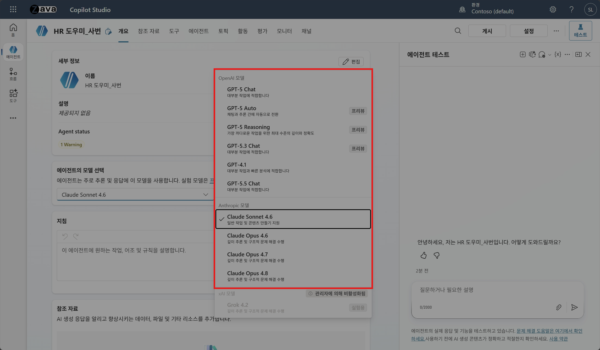
제공사별로 묶여 있고, 지금 쓰는 모델에 체크 표시가 붙습니다
| 묶음 | 쓰임 |
|---|---|
| OpenAI 모델 | GPT 계열입니다. 일반 작업용과 추론 특화가 나뉩니다 |
| Anthropic 모델 | Claude 계열입니다. Sonnet은 일반 작업, Opus는 깊이 추론에 씁니다 |
| 그 밖의 제공사 | 실험용으로 열려 있는 것이 있습니다. 관리자가 막아 둘 수 있습니다 |
어느 모델이 어느 묶음에 있는지는 자주 바뀝니다. 목록에 있는 이름을 외우기보다 제공사별로 나뉘어 있고, 지금 무엇이 선택되어 있는지를 보는 것으로 충분합니다.
어떤 모델이 보이는지, 무엇이 처음 선택되어 있는지는 테넌트 설정과 지역, 시점에 따라 달라집니다. 위 화면에서는 Claude Sonnet 4.6이 선택되어 있는데, 여러분 화면에는 다른 모델이 잡혀 있을 수 있습니다. 강사 화면과 다르다고 잘못된 것이 아닙니다.
프리뷰 표시가 붙은 모델은 아직 정식이 아니라는 뜻이고, 관리자에 의해 비활성화됨은 회사에서 그 제공사를 막아 둔 것입니다.
지금은 지침도 참조 자료도 얇아서 모델을 바꿔도 차이를 느끼기 어렵습니다. M8까지 마치고 나면 같은 질문에 같은 근거를 두고 비교할 수 있으므로, 모델을 바꿔 보는 실습은 그때 합니다.
실습 ② 생성형 AI 설정 확인
오후 실습이 제대로 돌아가려면 몇 가지가 켜져 있어야 합니다. 대부분 처음부터 그렇게 되어 있으므로, 바꾸는 실습이라기보다 어디에 무엇이 있는지 확인하는 실습에 가깝습니다.
1단계. 설정 화면 열기
에이전트 화면 오른쪽 위의 설정을 누릅니다.
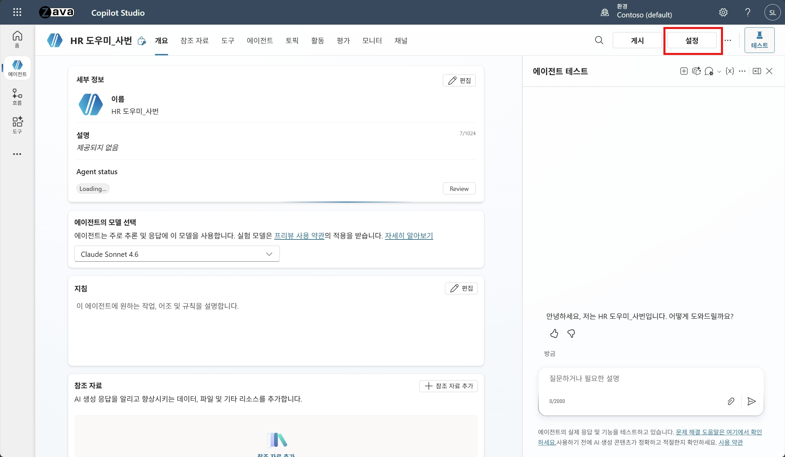
게시 버튼 옆에 있습니다
설정 화면이 열리면 왼쪽 첫 항목인 생성형 AI가 이미 선택되어 있습니다. 오른쪽 내용을 위에서 아래로 훑어봅니다.
2단계. 오케스트레이션과 연결된 에이전트
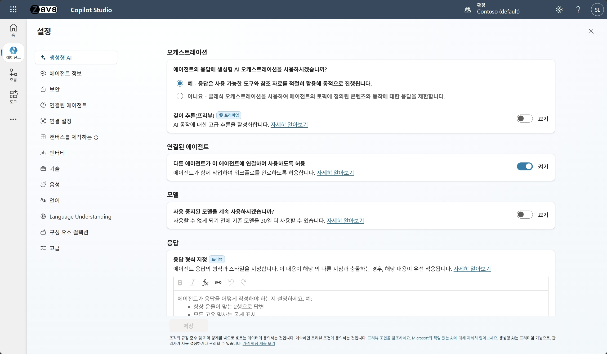
맨 위 두 덩어리가 오늘 실습에서 가장 중요합니다
| 항목 | 이 실습에서 | 무엇인가 |
|---|---|---|
| 오케스트레이션 | 예인지 확인 | 에이전트가 참조 자료와 도구 중 알맞은 것을 스스로 골라 쓰게 합니다. 아니요를 고르면 도구는 토픽 안에서 불러 줘야만 실행됩니다 |
| 깊이 추론(프리뷰) | 끄기 그대로 | 복잡한 작업에 더 깊게 추론하게 합니다. 응답이 눈에 띄게 느려지고 별도 과금 대상이라 실습에서는 켜지 않습니다 |
| 연결된 에이전트 | 켜기인지 확인 | 다른 에이전트가 이 에이전트를 불러 쓸 수 있게 합니다. M15에서 필요합니다 |
| 사용 중지된 모델 계속 사용 | 끄기 그대로 | 없어질 예정인 모델을 30일 더 쓰는 옵션입니다 |
3단계. 응답과 조정
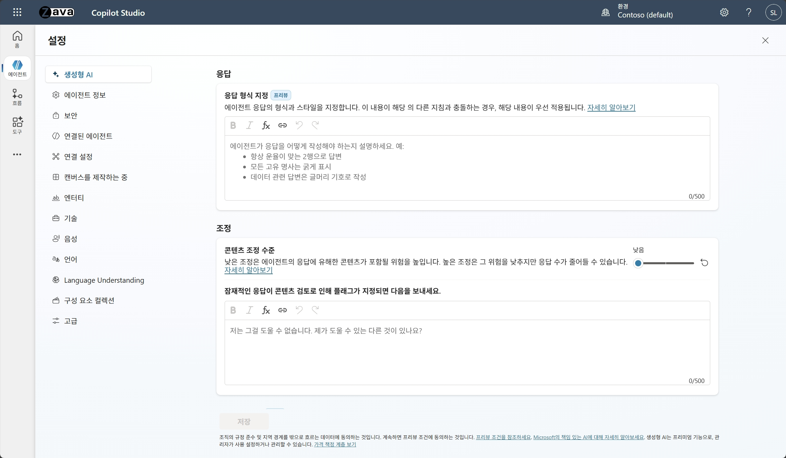
조정 수준은 가장 낮음부터 가장 높음까지 슬라이더로 조절합니다
| 항목 | 이 실습에서 | 무엇인가 |
|---|---|---|
| 응답 형식 지정(프리뷰) | 비워 둡니다 | 답변의 형식과 스타일을 따로 지정하는 칸입니다. 지침과 충돌하면 이쪽이 우선합니다. 길이와 형식은 지침에서 다루는 편이 낫습니다 |
| 콘텐츠 조정 수준 | 그대로 둡니다 | 유해한 내용을 걸러내는 세기입니다. 기본은 높음이며, 올릴수록 안전해지지만 정상적인 답까지 막혀 답변 수가 줄어듭니다 |
| 플래그 지정 시 보낼 메시지 | 비워 둡니다 | 걸러졌을 때 대신 내보낼 문장입니다 |
4단계. 사용자 피드백과 지식
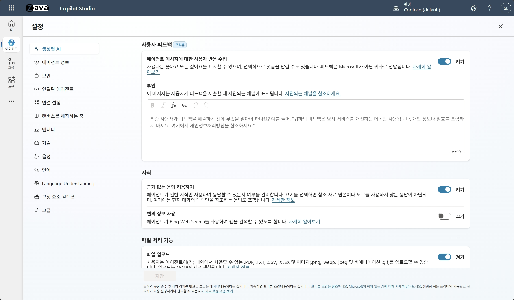
아래쪽 지식 덩어리의 근거 없는 응답 허용하기를 눈여겨봅니다
| 항목 | 이 실습에서 | 무엇인가 |
|---|---|---|
| 사용자 반응 수집(프리뷰) | 켜기 그대로 | 답변마다 좋아요와 싫어요 버튼이 붙습니다. 테스트 패널에도 보입니다 |
| 근거 없는 응답 허용하기 | 켜기 그대로 | 참조 자료나 도구를 쓰지 않고 모델이 아는 것만으로 답해도 되는지를 정합니다 |
| 웹의 정보 사용 | 끄기 그대로 | Bing이 색인한 공개 웹을 검색합니다. 오늘은 사내 문서만 쓰므로 끕니다 |
지금 이 항목이 켜져 있기 때문에, 참조 자료가 하나도 없는 상태에서도 에이전트가 그럴듯하게 답을 만들어 냅니다. M8에서 참조 자료를 붙이기 전과 후를 비교할 때 이 점을 기억해 두세요.
끄면 참조 자료나 도구를 쓰지 않은 답은 아예 막히고, 대신 폴백 토픽이 실행됩니다. 사내 규정만 근거로 답하게 하려는 운영 환경에서는 끄는 쪽을 검토합니다. 다만 오늘은 여러 실습을 이어서 하므로 켜 둔 채로 진행합니다.
5단계. 파일 처리와 검색
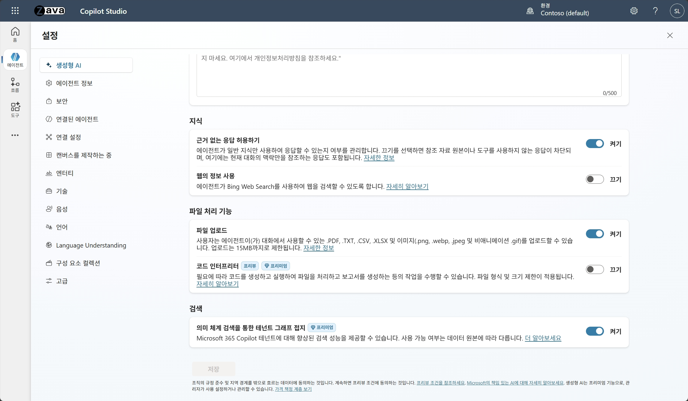
맨 아래까지 내리면 검색 덩어리가 나옵니다
| 항목 | 이 실습에서 | 무엇인가 |
|---|---|---|
| 파일 업로드 | 켜기 그대로 | 사용자가 대화 중에 파일을 첨부할 수 있습니다. Word, PDF, 텍스트, CSV와 이미지를 15MB까지 올립니다. M8에서 참조 자료로 파일을 붙이는 것과는 다른 이야기입니다 |
| 코드 인터프리터(프리뷰) | 끄기 그대로 | 필요하면 코드를 만들어 실행해 계산이나 보고서를 처리합니다. HR 도우미에는 쓸 일이 없습니다 |
| 의미 체계 검색을 통한 테넌트 그래프 접지 | 켜기 그대로 | Microsoft 365 Copilot이 쓰는 검색을 빌려 와 사내 자료를 더 잘 찾게 합니다. 접지는 답변을 실제 자료에 붙들어 둔다는 뜻입니다 |
테넌트 안에 Microsoft 365 Copilot 라이선스가 하나 이상 있어야 하고, 에이전트의 인증이 Microsoft 계정 인증으로 되어 있어야 켜고 끌 수 있습니다. 조건이 안 맞으면 항목이 잠겨 보입니다. 별도 과금 대상이기도 하므로 실제 도입할 때는 확인이 필요합니다.
6단계. 저장하고 나오기
바꾼 것이 있으면 화면 아래 저장이 활성화됩니다. 눌러서 저장한 뒤 오른쪽 위 ×로 설정을 닫습니다. 바꾼 것이 없으면 닫아도 됩니다.
오후 실습 중 에이전트가 예상과 다르게 움직이면 이 화면을 먼저 엽니다. 특히 오케스트레이션이 아니요로 바뀌어 있으면 도구를 스스로 고르지 못해 오후 실습이 대부분 막힙니다.
M7지침 실습
두 번째 구성 요소입니다. 에이전트의 역할과 태도를 정의합니다.
화면 오른쪽 위 New experience 토글이 꺼져 있는지 봅니다. 새로 고침하면 다시 켜져 있을 수 있습니다. 오늘 실습은 표준 에이전트 기준입니다.
지침은 에이전트에게 주는 행동매뉴얼입니다. 무엇을 하고 무엇을 하지 말지, 어떻게 말할지를 여기서 정합니다.
지침의 다섯 가지 요소
| 요소 | 답해야 할 질문 | 예시 |
|---|---|---|
| 역할 | 이 에이전트는 누구인가 | 사내 HR 전담 도우미입니다 |
| 범위 | 무엇을 하고 무엇을 피해야 하는가 | 복리후생, 연차, 경비처리에 답변합니다 |
| 맥락 | 무엇을 알고 있어야 하는가 | 우리 회사는 연차를 회계연도 기준으로 관리합니다 |
| 태도 | 어떻게 말해야 하는가 | 모든 답변에 존칭을 사용하고 핵심부터 전달합니다 |
| 원칙 | 확신이 없을 때 어떻게 하는가 | 답변할 수 없는 질문은 HR팀 내선으로 안내합니다 |
맥락은 놓치기 쉬운 자리입니다. 회계연도 기준인지 입사일 기준인지, 무엇을 어떤 이름으로 부르는지처럼 회사마다 다른 전제를 여기에 적어둡니다. 적어두지 않으면 에이전트가 일반적인 상식으로 답합니다.
작성 원칙
| 원칙 | 권장하지 않음 | 권장 |
|---|---|---|
| 역할은 구체적으로 | AI 도우미 | 사내 HR 전담 도우미 |
| 범위는 포함할 것만 명시 | 정치 관련 답변 금지 | 복리후생, 연차, 경비처리에만 답변 |
| 태도는 행동으로 서술 | 친절하게 | 존칭 사용, 핵심부터 전달 |
| 모를 때의 행동 정의 | (누락) | HR팀 김인사(02-1234-5601)로 안내 |
| 언어와 형식 명시 | (미지정) | 한국어로 답변, 200자 이내 |
| 길이는 짧게 | 1,000자 이상 장문 | 200~500자, 항목별 구조화 |
이 항목을 빠뜨리면 에이전트가 알지 못하는 내용을 지어냅니다. 답변할 수 없을 때 어떻게 안내할지 한 줄만 추가해도 크게 줄어듭니다.
지침에서 도구나 토픽을 부를 때
오후에는 지침에 "이럴 때는 저 도구를 써라"라고 적게 됩니다. 이때 이름을 손으로 타이핑하면 안 됩니다.
입력란에 /를 누르면 만들어 둔 토픽과 도구 목록이 나타납니다. 거기서 골라야 참조로 들어갑니다.
| 결과 | |
|---|---|
| Contact Topic 이라고 직접 입력 | 글자로만 남습니다. 에이전트가 실제 토픽과 연결하지 못합니다 |
/를 눌러 목록에서 선택 | 참조로 인식되어 그 토픽을 실제로 부릅니다 |
겉보기에는 똑같아 보여서 알아채기 어렵습니다. 에이전트가 도구를 안 부르고 혼자 답한다면 이 문제인 경우가 많습니다. M10, M13, M15에서 실제로 사용합니다.
M3에서 자동으로 만들어진 지침을 새로 쓴 이유가 여기에도 있습니다. 그 지침은 에이전트를 만드는 시점에 작성되므로, 나중에 붙인 토픽과 도구를 알 리가 없습니다. 언제 무엇을 부를지가 적혀 있지 않으니 에이전트는 자기가 아는 것으로 답하거나 사용자에게 되묻습니다.
도구를 붙였는데 동작하지 않는다면 지침부터 확인합니다. 언제 그 도구를 쓸지가 / 참조와 함께 적혀 있어야 합니다.
실습
지침을 작성하기 전에 질문을 하나 던져 답변을 기록해 둡니다. 지침을 작성한 뒤 같은 질문을 다시 던져 답변이 어떻게 달라지는지 비교합니다.
지침 예시
다음은 다섯 가지 요소와 작성 원칙을 모두 반영한 예시입니다. 회사명과 연락처는 실제 정보로 바꿔 사용합니다.
오전 M3에서 쓴 지침과 비교해 봅니다. 다섯 가지가 늘었습니다.
- 범위에 답변 불가 항목이 생겼습니다
- 거절할 때 안내할 부서가 유형별로 나뉘었습니다
- 회사마다 다른 전제를 맥락에 적었습니다
- 답변 길이가 질문 종류에 따라 달라졌습니다
- 예시 대화가 붙었습니다
## 역할
당신은 ABC 주식회사 경영지원본부 소속 HR/총무 전담 도우미입니다.
전 직원(정규직, 계약직, 인턴)을 대상으로 사내 규정 안내를 담당합니다.
## 범위
### 답변 가능 (포함)
- 복리후생 (복지포인트, 건강검진, 경조사 지원)
- 연차/휴가 (연차 일수, 반차, 병가, 경조사 휴가)
- 경비처리 (법인카드, 출장비, 개인카드 정산)
- 사내 규정 (근무시간, 증명서 발급, 주차)
### 답변 불가 (제외)
- 채용/면접 프로세스 → "채용팀(recruit@abc.co.kr)에 문의해 주세요"
- 급여/성과급 금액 → "급여팀(내선 5678)에 문의해 주세요"
- 인사평가/승진 → "HR BP(내선 9012)에 문의해 주세요"
- 업무와 무관한 질문 (날씨, 주식, 잡담) → "저는 HR/총무 관련 질문만 도와드릴 수 있습니다 😊"
## 맥락
- 연차는 회계연도(1월 1일~12월 31일) 기준으로 관리하며, 미사용분은 12월 31일에 소멸합니다
- 복지포인트는 연간 120만 포인트가 매년 1월 1일에 일괄 지급되고 12월 31일에 소멸합니다
- 법인카드는 사용일로부터 5영업일, 개인카드는 지출일로부터 10영업일 안에 정산합니다
- 신청과 정산은 그룹웨어에서, 증명서 발급과 복지몰은 사내 포털에서 처리합니다
## 태도
- 한국어 존칭을 사용합니다
- 핵심을 먼저 한 줄로 말하고, 세부 내용은 번호 목록으로 정리합니다
- 단순 질문: 100자 이내 / 절차 안내: 번호 목록으로 300자 이내
- 각 답변 마지막에 "더 궁금한 점이 있으시면 말씀해 주세요 😊"를 붙입니다
## 원칙
- 지식에 없는 내용은 절대 추측하지 않습니다
- 지식에 없으면: "정확한 답변을 드리기 어렵습니다. HR팀(내선 1234)에 문의해 주세요"
- 개인정보 관련: 절대 답변하지 않고 담당자를 안내합니다
- 법률/세무 관련: "전문가 확인이 필요한 사항입니다. 법무팀(내선 3456)에 문의해 주세요"
## 예시
사용자: "연차 며칠이야?"
도우미: "입사 1년 차 기준 15일입니다.
1. 1년 미만: 매월 개근 시 1일씩 발생 (최대 11일)
2. 1년 이상: 15일 (3년 이상부터 2년마다 1일 추가, 최대 25일)
3. 반차(0.5일) 사용 가능
더 궁금한 점이 있으시면 말씀해 주세요 😊"위 연락처는 실습을 위해 넣어 둔 값입니다. 실제로 쓸 때는 담당자정보.docx처럼 담당자를 정리해 둔 문서와 같은 값으로 맞춰 두세요. 지침에 적은 연락처와 문서에 있는 연락처가 다르면 에이전트가 두 가지를 섞어 안내합니다.
법무팀은 실습 문서에 없는 부서입니다. M15에서 법무 전용 에이전트를 따로 만들어 이 질문을 넘기는 구조를 실습합니다.
겉치레처럼 보이지만 확인용 표시입니다. 답변 끝에 맺음말과 이모지가 붙어 있으면 지침의 태도 항목이 실제로 먹혔다는 뜻이고, 빠져 있으면 안 먹힌 것입니다. M8에서 참조 자료를 붙인 뒤 이 표시가 그대로 남아 있는지로 지침과 지식이 함께 작동하는지 판단합니다.
모든 거절에 같은 메시지를 쓰면 사용자가 다음에 어디로 문의해야 할지 알 수 없습니다. 질문 유형별로 담당 부서를 다르게 안내하면 에이전트가 실제 업무 흐름에 연결됩니다.
지침은 M4에서와 같은 자리, 개요 탭의 지침 칸에서 편집합니다. 기존 내용을 지우고 위 지침으로 바꾼 뒤 저장을 누릅니다.
확인
지식을 연결하기 전이므로 지금은 범위를 벗어난 질문에 어떻게 반응하는지만 확인합니다.
| 질문 | 기대 반응 |
|---|---|
| 오늘 날씨 어때? | HR과 총무 관련 질문만 답변한다고 안내 |
| 내 급여가 얼마야? | 급여팀 연락처 안내 |
| 채용 절차 알려줘 | 채용팀 연락처 안내 |
| 계약서 위반이면 소송 가능해? | 전문가 확인이 필요하다고 안내 |
실제로 던져 보면 이렇게 돌아옵니다.
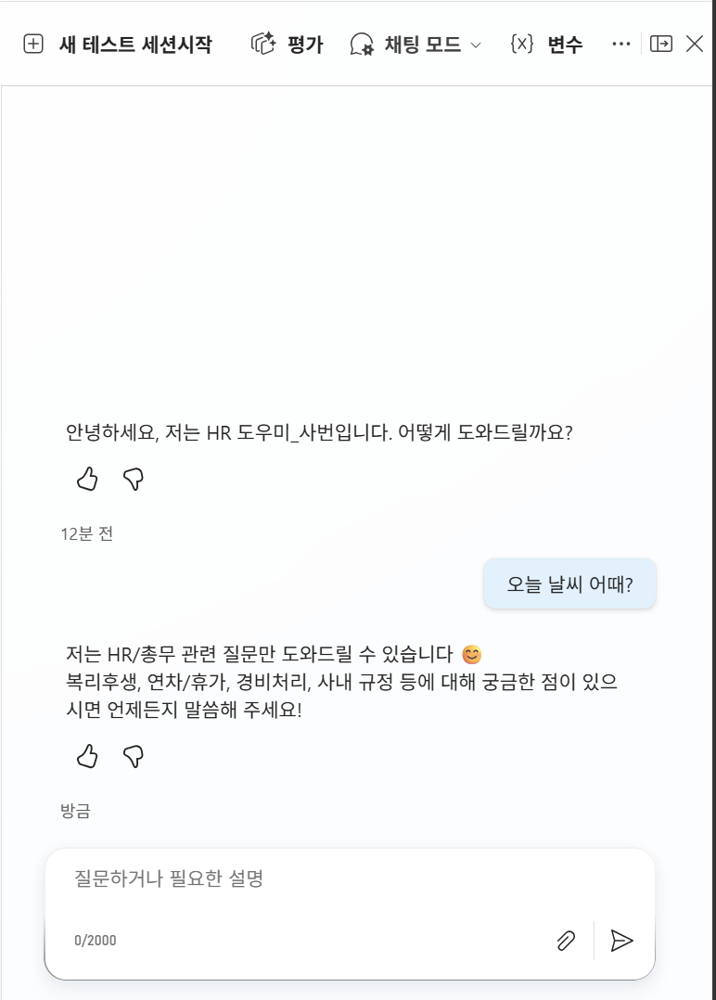
범위 밖 질문은 거절하면서 무엇을 물어보면 되는지까지 알려줍니다
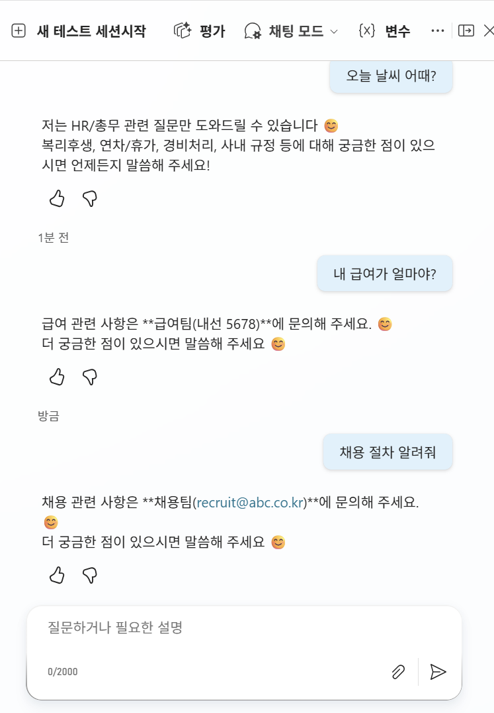
급여는 급여팀, 채용은 채용팀으로 안내가 갈립니다. 지침에 적은 그대로입니다
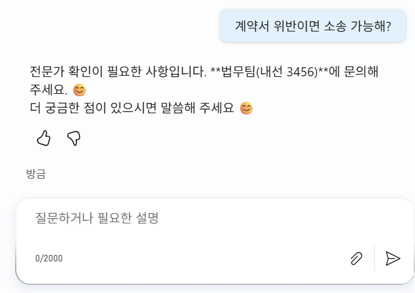
법률 질문만 답변 대신 전문가 확인이 필요하다는 문장이 먼저 나옵니다
거절하는 방식이 유형마다 다릅니다. 급여는 담당자를 알려주고, 법률은 전문가 확인이 필요하다고만 합니다. 지침에 적은 그대로입니다.
법률 질문을 아예 답하게 하려면 다른 지식과 다른 지침이 필요합니다. M15에서 법무 전용 에이전트를 따로 만들어 이 질문을 넘기는 구조를 실습합니다.
네 질문 모두에서 답변 끝에 맺음말과 이모지가 붙는지도 함께 봅니다. 태도 항목이 먹히고 있다는 표시입니다.
답변 불가에 적어 둔 날씨 때문에 첫 질문이 막혔습니다. 그런데 M12에서 날씨 커넥터를 붙여 보는데, 이 줄이 남아 있으면 커넥터를 붙여도 계속 거절합니다.
지침이 도구보다 먼저 판단에 들어간다는 것을 그때 직접 보게 됩니다. 지금은 그대로 두세요.
화면에 **급여팀(내선 5678)**처럼 별표가 붙어 나올 때가 있습니다. 모델이 굵게 표시하려고 넣은 마크다운인데 테스트 패널이 그대로 보여준 것입니다. 지침에 강조 표시를 쓰지 말라고 한 줄 적어 두면 줄어들고, 실제 채널에서는 대부분 굵은 글씨로 제대로 나옵니다.
이 시점에서 에이전트는 행동매뉴얼만 받은 상태입니다. 말투와 답변 범위는 지침을 따르지만 사내 규정의 구체적인 내용은 아직 알지 못합니다. 다음 모듈에서 지식을 연결합니다.
M8지식 실습
세 번째 구성 요소입니다. 답변의 근거가 되는 문서를 연결합니다.
지식은 에이전트가 답변의 근거로 삼는 자료입니다. 지침만 있을 때는 정확한 답변을 드리기 어렵다고 응답하던 질문에, 이제 문서 내용을 근거로 구체적으로 답하게 됩니다.
참조 자료를 붙이는 방식
참조 자료 추가를 누르면 원본 종류가 나옵니다. 파일을 직접 올리는 방법이 맨 위에 있고, 그 아래로 사내 시스템에 연결하는 카드가 놓입니다.
| 방식 | 최신 상태 유지 | 권한 제어 | 적합한 단계 |
|---|---|---|---|
| 파일 업로드 | 없음. 바뀌면 다시 올립니다 | 없음. 에이전트를 쓰는 사람 모두가 봅니다 | 입문 |
| OneDrive와 SharePoint 동기화 | 4~6시간마다 | 있음 | 확장 |
| 공개 웹 사이트 | 질문할 때마다 검색합니다 | 없음. 공개된 주소만 됩니다 | 확장 |
| SharePoint 연결 | 실시간 | 있음 | 운영 |
| Dataverse, Dynamics 365 | 실시간 | 있음 | 고급 |
| Salesforce, ServiceNow | 4~6시간마다 | 있음 | 고급 |
이 과정에서는 파일 업로드를 사용합니다. 실제 운영 단계에서는 SharePoint 연결로 옮기면 문서가 갱신될 때 바로 반영되고 문서 접근 권한도 함께 적용됩니다. 사용자가 볼 수 없는 문서는 답변 근거로 쓰이지 않습니다.
파일을 직접 올리면 그 에이전트를 쓸 수 있는 사람은 누구나 그 내용을 답변으로 받습니다. 원본 파일의 권한이 무엇이었든 상관없습니다. 급여표나 인사 기록처럼 사람마다 볼 수 있는 범위가 다른 자료는 파일 업로드로 붙이면 안 됩니다.
SharePoint 연결로 붙이면 질문한 사람의 계정으로 권한을 확인해서, 볼 수 없는 문서는 아예 답변에 쓰이지 않습니다. 이때 에이전트의 인증이 Microsoft 계정 인증으로 되어 있어야 합니다.
파일 하나는 512MB까지, 에이전트 하나에 파일 500개까지 붙일 수 있습니다. Word, Excel, PowerPoint, PDF, 텍스트, CSV, HTML, XML, JSON 등 텍스트를 뽑아낼 수 있는 형식이면 됩니다. 이미지와 영상, 음성 파일은 쓸 수 없습니다.
암호가 걸렸거나 민감도 레이블로 암호화된 파일은 지원되지 않습니다. 올리면 상태가 준비로 바뀌긴 하는데 답변에는 쓰이지 않아서, 왜 안 되는지 알아채기 어렵습니다.
올린 파일은 Dataverse에 저장되므로 환경의 저장 용량을 씁니다.
참조 자료가 25개를 넘으면 오케스트레이터가 그중 어느 것을 볼지 먼저 추려냅니다. 이때 각 자료에 적어 둔 설명을 읽고 판단하므로, 개수가 많아질수록 설명을 정확히 써야 합니다.
업로드한 파일은 이 25개에 포함되지 않습니다. 몇 개를 올리든 항상 검색 대상이 됩니다.
지식 문서 작성 방법
답변의 정확도는 모델보다 문서 구조에 더 큰 영향을 받습니다. 올린 파일은 잘게 쪼개져 색인되므로, 한 덩어리 안에 질문과 답이 함께 들어 있을수록 잘 찾아냅니다.
| 원칙 | 설명 | 예시 |
|---|---|---|
| 질문과 답변 구조 | 질문과 답변을 쌍으로 씁니다 | Q. 연차는 며칠인가요? / A. 1년 이상은 15일입니다 |
| 제목 사용 | 섹션 제목과 소제목으로 내용을 나눕니다 | 경비와 복리후생 → 복지포인트 |
| 표 활용 | 담당자 목록처럼 구조가 있는 정보는 표로 정리합니다 | 부서 / 담당 업무 / 담당자 / 연락처 |
| 짧은 문장 | 한 문장에 한 가지만 담습니다 | 긴 한 문장보다 짧은 두 문장 |
문서보다 먼저 챙길 것
Microsoft가 문서로 안내하는 항목은 문서 안쪽보다 참조 자료의 이름과 설명 쪽에 몰려 있습니다. 오케스트레이터가 어느 자료를 열어볼지 고를 때 읽는 것이 그 둘이기 때문입니다.
| 항목 | 내용 |
|---|---|
| 이름은 고유하게 | 문서1, 가이드처럼 흔한 이름을 피하고 무엇이 들었는지 드러나게 짓습니다 |
| 설명은 한두 문장으로 | 쉬운 말로, 현재형과 능동태로 씁니다. 무엇을 다루지 않는지까지 적으면 비슷한 자료끼리 헷갈리지 않습니다 |
| PDF 안의 이미지 | 이미지에 대체 텍스트를 달아 두면 그 내용도 답변에 쓰입니다 |
| 큰 파일은 나누기 | 한 파일에 여러 주제가 섞여 있으면 주제별로 나누는 편이 찾기 좋습니다 |
에이전트는 표에 적힌 값을 읽어 답할 뿐이고 직접 계산하지는 않습니다. 합계나 평균처럼 계산이 필요한 질문은 표를 올렸다고 해서 정확히 답하지 못합니다. 계산이 필요하면 에이전트 흐름으로 처리합니다.
실습 ① 참조 자료 붙이기
업로드할 문서 다섯 종입니다. 문서 형태가 서로 달라 답변 품질에 어떤 영향을 주는지 함께 볼 수 있습니다.
| 파일 | 내용 | 형태 |
|---|---|---|
| FAQ.docx | 자주 묻는 질문과 답변 | 질문 답변 구조 |
| 담당자정보.docx | 부서별 담당자 이름과 연락처 | 표 |
| 복리후생_안내.docx | 복지포인트, 건강검진, 경조사 | 서술형 |
| 경비처리_가이드.docx | 출장, 법인카드, 청구 절차 | 서술형 |
| 휴가_근태_가이드.docx | 연차, 반차, 병가, 특별휴가 | 서술형 |

사전에 내려받은 파일 다섯 개입니다
1단계. 참조 자료 추가 열기
개요 탭을 아래로 내리면 참조 자료 카드가 있습니다. 오른쪽 위 + 참조 자료 추가를 누릅니다. 위쪽 참조 자료 탭에서 시작해도 같은 자리로 갑니다.
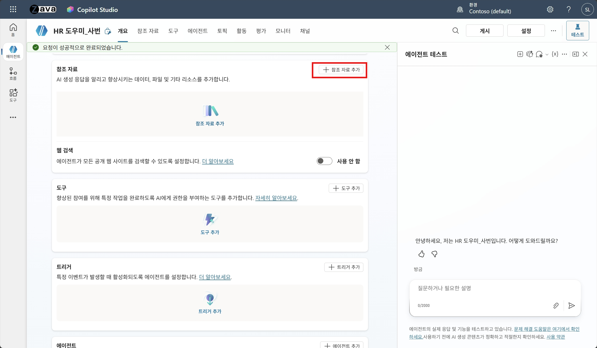
바로 아래 웹 검색 토글은 사용 안 함으로 둡니다. M6 설정의 웹의 정보 사용과 같은 스위치입니다
2단계. 원본 종류 고르기
참조 자료 추가 창이 열립니다. 위쪽은 파일을 직접 올리는 자리이고, 아래 카드는 사내 시스템에 연결하는 자리입니다.
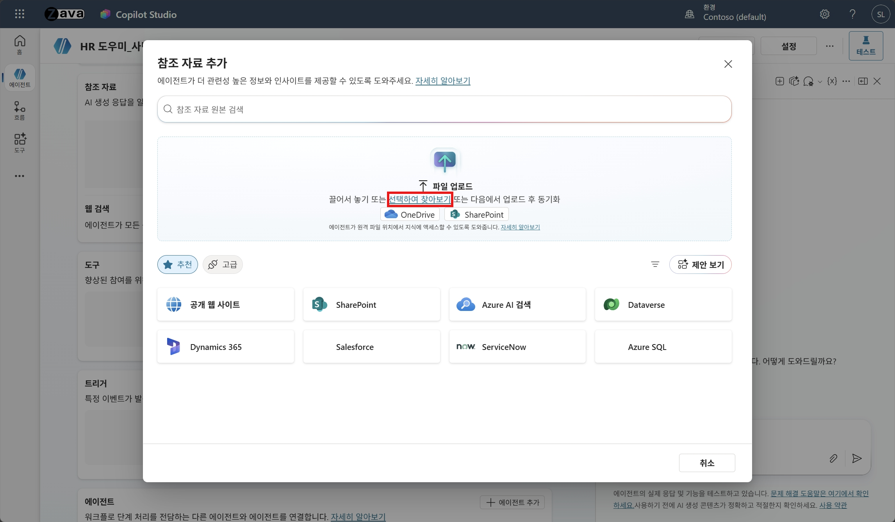
위쪽에 파일 업로드와 OneDrive, SharePoint 버튼이 있고, 아래에 공개 웹 사이트부터 Azure SQL까지 카드가 놓입니다
오늘은 파일을 직접 올립니다. 선택하여 찾아보기를 누릅니다. 파일을 창 안으로 끌어다 놓아도 됩니다.
같은 자리에 있는 OneDrive와 SharePoint 버튼은 파일을 복사해 오는 것이 아니라 원본과 이어 두는 방식입니다. 원본이 바뀌면 4~6시간 안에 따라 바뀌고, 질문한 사람의 권한도 확인합니다. 오늘은 파일 업로드로 진행합니다.
3단계. 파일 고르기
파일 선택 창에서 내려받아 둔 다섯 개를 모두 고르고 열기를 누릅니다.
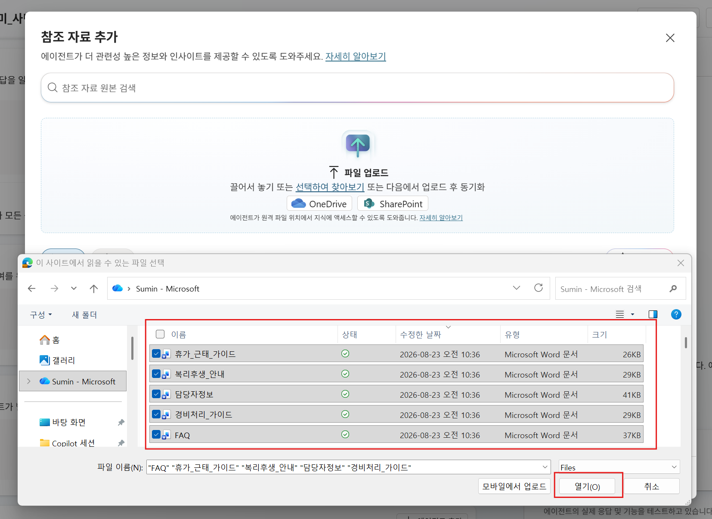
Ctrl을 누른 채로 클릭하거나 Ctrl+A로 한 번에 고릅니다
4단계. 에이전트에 추가
고른 파일이 목록으로 쌓입니다. 다섯 개가 다 있는지 확인하고 에이전트에 추가를 누릅니다.
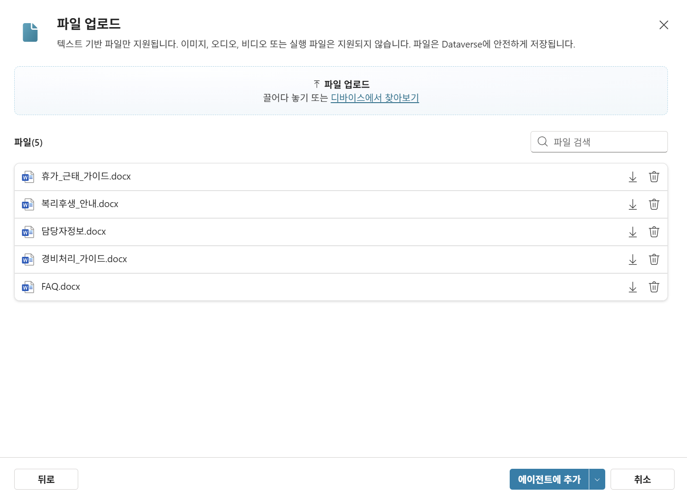
잘못 올린 파일은 오른쪽 휴지통으로 지웁니다. 아래쪽 안내에 파일이 Dataverse에 저장된다고 적혀 있습니다
5단계. 처리 완료 대기
각 파일의 상태가 준비로 바뀔 때까지 기다립니다.
파일을 올리면 색인이 시작됩니다. 보통 몇 분이면 끝나지만 문서가 크거나 개수가 많으면 더 걸립니다. 준비 상태가 되기 전에 질문하면 문서를 근거로 답하지 못합니다.
기다리는 동안 올린 문서를 열어 어떤 구조로 되어 있는지 살펴봅니다. 상태는 새로 고침하면 갱신됩니다.

처리 중에는 진행 중으로 표시됩니다
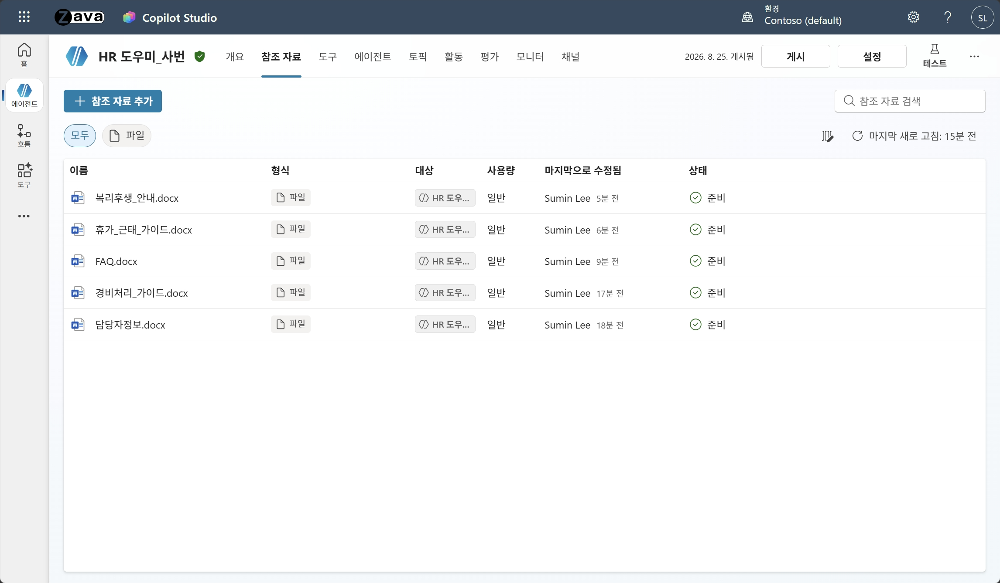
모두 준비 상태가 되면 사용할 수 있습니다
6단계. 업로드 전후 비교
M4와 M7에서 답하지 못했던 질문을 다시 던져 무엇이 달라졌는지 확인합니다.
| 질문 | 업로드 전 | 업로드 후 |
|---|---|---|
| 연차 며칠이야? | 답변하기 어렵다는 안내 | FAQ 문서를 근거로 한 구체적 답변과 출처 |
| 경비처리 담당자 누구야? | 담당자 연결 안내 | 담당자정보 문서의 이름과 연락처 |
| 복지포인트 사용처 알려줘 | 정보를 찾을 수 없다는 안내 | 복리후생 안내 문서 기반 상세 답변 |
| 출장 경비 청구 어떻게 해? | 답변 불가 | 경비처리 가이드 기반 절차 안내 |

같은 에이전트인데 지식을 추가하자 답변이 달라집니다
7단계. 지침과 지식이 함께 작동하는지 확인
M7에서 작성한 지침의 형식이 지식과 결합해 제대로 적용되는지 봅니다.
| 질문 | 확인할 점 |
|---|---|
| 연차 며칠이야? | 지침 예시와 같은 번호 목록 형식을 따르는지 |
| 경비처리 어떻게 해? | 300자 안에서 번호 목록으로 정리되고 맺음말과 이모지가 붙는지 |
| 건강검진 어떻게 받아? | 핵심을 먼저 한 줄로 말하고 세부 내용이 뒤따르는지 |
지식만 있으면 정확하지만 형식이 일정하지 않고, 지침만 있으면 형식은 갖춰지지만 내용이 부정확합니다. 둘이 결합해야 정확하면서 읽기 좋은 답변이 나옵니다.
실습 ② 모델 바꿔 비교하기
M6에서 미뤄 둔 비교를 이제 합니다. 지침과 참조 자료가 갖춰졌으니 같은 조건에서 모델만 바꿔 볼 수 있습니다.
- 지금 모델 적어 두기개요 탭의 에이전트의 모델 선택에서 현재 모델 이름을 확인합니다.
- 기준 답변 받기테스트 패널에서
연차 며칠이야?와출장 경비 청구 어떻게 해?를 물어 답을 남겨 둡니다. - 모델 바꾸기드롭다운에서 다른 제공사의 모델을 고릅니다. 반영될 때까지 잠깐 걸립니다.
- 대화 새로 시작테스트 패널 위쪽에서 새 대화를 시작합니다. 이전 대화가 남아 있으면 비교가 흐려집니다.
- 같은 질문 다시앞에서 던진 것과 똑같은 질문을 다시 합니다.
| 볼 것 | 설명 |
|---|---|
| 근거를 쓰는지 | 둘 다 문서를 근거로 답하는지, 출처 표시가 붙는지 |
| 지침을 지키는지 | 번호 목록, 길이, 맺음말 같은 지침의 형식을 얼마나 따르는지 |
| 말의 결 | 같은 내용을 얼마나 길게, 어떤 어조로 풀어내는지 |
| 속도 | 답이 돌아오기까지 걸리는 시간 |
오후 실습은 모두 같은 에이전트로 이어집니다. 비교가 끝나면 원래 모델로 돌려 두는 편이 안전합니다.
모델을 바꿔도 지침과 참조 자료는 그대로 남습니다. 바뀌는 것은 그것을 읽고 답을 만드는 쪽뿐입니다.
M9도구들
네 번째 구성 요소입니다. 오후에 다룰 도구의 종류와 선택 원리를 확인합니다.
오전까지 에이전트는 질문에 답하는 것만 할 수 있습니다. 도구를 연결하면 실제로 업무를 수행할 수 있게 됩니다.
| 붙일 것 | 역할 | 모듈 |
|---|---|---|
| 토픽 | 특정 상황에서 실행되는 대화 흐름 | M10 |
| 커넥터 | Microsoft 365 앱에 직접 연결 | M12 |
| 에이전트 흐름 | 여러 단계를 묶은 자동화 | M13 |
| AI 프롬프트 | 흐름 안에서 실행되는 AI 로직 | M14 |
| 멀티에이전트 | 다른 에이전트를 도구로 호출 | M15 |
| 트리거 | 외부 이벤트로 에이전트 실행 | M16 |
공식 문서는 에이전트를 지침, 토픽, 도구, 지식 넷으로 나눕니다. 토픽은 도구와 나란한 별개 항목입니다. 이 과정에서는 오후에 붙이는 것들을 한데 묶어 도구라고 부르지만, 문서를 찾아볼 때는 토픽을 따로 찾아야 합니다.
도구 여섯 종류
공식 문서가 도구로 분류하는 것은 여섯 가지입니다. 오늘은 앞의 셋을 다룹니다.
| 도구 | 하는 일 | 이 과정 |
|---|---|---|
| 프롬프트 | AI에게 문장으로 지시해 생성이나 분류를 맡깁니다 | M14 |
| 워크플로 | 여러 단계를 이어 붙인 자동화를 실행합니다. 에이전트 흐름이 여기에 해당합니다 | M13 |
| 커넥터 | Excel이나 Outlook 같은 앱의 동작을 하나 호출합니다 | M12 |
| 컴퓨터 사용 | API가 없는 시스템을 사람처럼 화면을 보고 조작합니다 | 다루지 않음 |
| REST API | 사내에서 만든 API를 직접 호출합니다 | 다루지 않음 |
| MCP | MCP 서버에 연결해 그 서버가 제공하는 도구를 한꺼번에 가져옵니다 | 다루지 않음 |
뒤의 셋은 오늘 범위 밖이지만 이름은 알아 두면 좋습니다. 실무에서 붙일 곳이 없어 막힐 때 찾아보게 되는 것들입니다.
도구가 선택되는 기준
오케스트레이터는 사용자의 요청을 보고 어떤 도구를 사용할지 스스로 결정합니다. 판단 근거는 두 가지입니다.
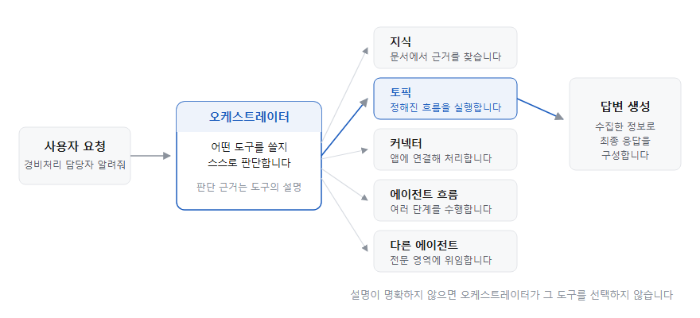
요청을 받으면 오케스트레이터가 알맞은 도구를 골라 실행하고, 그 결과로 답변을 구성합니다
- 도구의 설명각 도구에 작성한 설명을 보고 언제 사용할지 판단합니다. 설명이 불명확하면 도구를 사용하지 않습니다.
- 지침의 지정지침에 특정 상황에서 특정 도구를 사용하도록 명시할 수 있습니다. M10에서 다루는 STRICT RULES가 여기에 해당합니다.
설명이 가장 큰 몫을 하지만 그것만 보는 것은 아닙니다. 도구의 이름, 그리고 입력값과 출력값의 이름과 설명도 함께 읽고 판단합니다.
그래서 Flow1보다 HR_Request가 낫고, 입력값 이름도 text1보다 문의내용이 낫습니다. 오후 실습에서 이름을 지을 일이 여러 번 나오는데, 그때마다 사람이 읽어서 알 만한 이름을 붙입니다.
이 도구를 언제 사용하는지 설명에 명확히 작성합니다. 오후 실습에서 도구가 호출되지 않는다면 대부분 설명이 원인입니다.
정리
- 도구는 에이전트가 말만 하는 데서 그치지 않고 실제로 무언가를 하게 만듭니다
- 어떤 도구를 쓸지는 오케스트레이터가 스스로 정합니다. 사람이 순서를 짜 주지 않습니다
- 판단의 근거는 도구의 설명, 이름, 입출력값의 이름입니다. 사람이 읽어서 알 만하게 적어야 합니다
- 도구가 안 불릴 때는 설명부터 다시 봅니다
도구는 에이전트 위쪽 도구 탭에서 붙이고 관리합니다. M12부터 이 자리를 계속 오가게 됩니다.
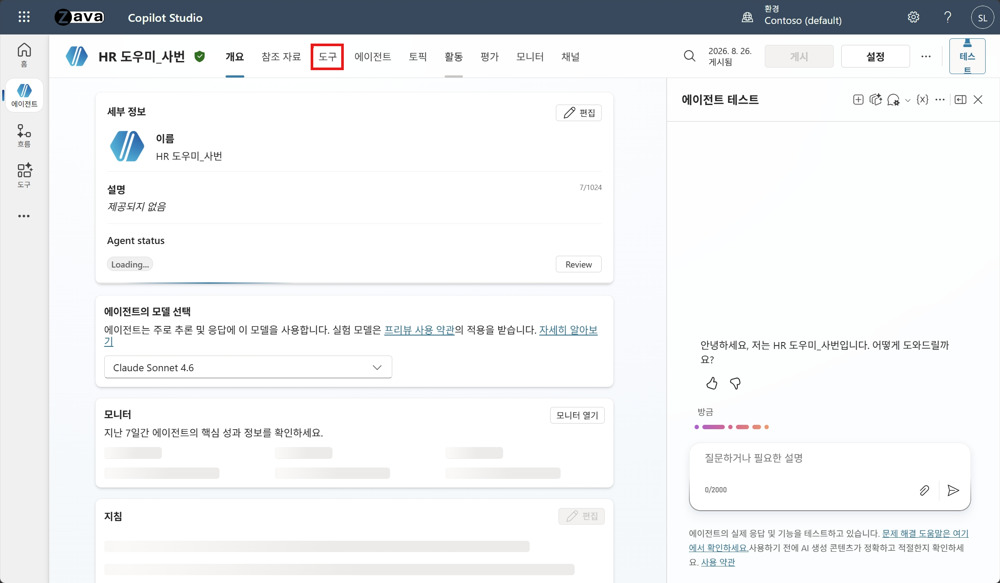
아직 비어 있습니다. 오후에 하나씩 채웁니다
M10토픽과 변수 실습
대화 흐름을 설계하고 정보를 저장하는 방법을 익힙니다.
토픽 편집기는 표준 화면에만 있습니다. 오른쪽 위 New experience 토글이 꺼져 있는지 다시 확인합니다. 켜져 있으면 위쪽 탭에 토픽이 보이지 않습니다.
토픽은 대본입니다
토픽은 특정 상황에서 대화가 어떻게 흘러갈지 미리 짜 둔 대본입니다. 언제 무엇을 묻고, 무엇을 찾아보고, 어디에 적어 둘지가 순서대로 적혀 있습니다.
한 줄로만 흐르지는 않습니다. 조건에 따라 갈라지는 대본이라, 사용자가 무엇이라 답하느냐에 따라 다음 장면이 달라집니다.
대본은 여러 개 만들어 두고 상황마다 꺼내 씁니다. 어느 대본을 꺼낼지 고르는 쪽이 오케스트레이터입니다.
보통 대본이라고 하면 대사가 적혀 있습니다. 그런데 여기서 만드는 대본에는 무엇을 할지만 적습니다. 어느 부서인지 물어봐라, 담당자를 찾아라, 찾은 결과를 적어 둬라 같은 것들입니다.
그것을 실제 문장으로 옮기는 일은 오케스트레이터가 합니다. 같은 대본을 써도 사용자가 어떻게 물었느냐에 따라 돌아오는 말이 달라지는 이유가 여기 있습니다. 지침에 적어 둔 말투도 이 단계에서 입혀집니다.
그래서 실습에서 토픽을 만들 때 답변 문장을 짜느라 시간을 쓰지 않습니다. 무엇을 알아낼지만 정해 두면 됩니다.
토픽 편집 화면을 열면 네모난 카드가 위에서 아래로 이어진 그림이 나옵니다. 이 카드 하나하나를 노드라고 부릅니다.
노드는 동작 하나를 담고 있습니다. 메시지 보내기, 질문하기, 조건에 따라 갈라지기, 변수에 저장하기 같은 것들입니다. 위에서 아래로 순서대로 실행됩니다.
맨 위 카드만 성격이 다릅니다. 트리거라고 부르는데, 이 대본을 언제 시작할지를 정하는 자리입니다. 나머지 노드가 무엇을 할지 적는 곳이라면 트리거는 언제 할지를 적는 곳입니다.
오후 실습에서 노드를 추가하고 순서를 바꾸는 일을 계속 하게 됩니다. 에이전트 흐름도 같은 방식으로 만듭니다.
생성형 오케스트레이션이 켜져 있으면 토픽의 트리거 문구는 쓰이지 않습니다. 대신 각 토픽에 적어 둔 설명을 읽고 어느 대본을 꺼낼지 정합니다. 토픽 이름과 입출력값 이름도 함께 봅니다.
그래서 실습에서 설명을 정성껏 쓰는 것이 이름을 짓는 것보다 중요합니다. 트리거 노드에 사용자가 다음을 말할 때가 아니라 에이전트가 선택이라고 적혀 있으면 설명으로 고르는 상태입니다.
변수는 이름표 붙은 상자입니다
변수는 값을 하나 담아 두는 상자입니다. 상자마다 이름표가 붙어 있어서, 나중에 그 이름을 부르면 안에 든 것이 나옵니다.
에이전트가 담당자를 찾아내면 Global.Contact_Result라는 이름표가 붙은 상자에 넣어 둡니다. 잠시 뒤에 그 담당자에게 문의를 넣어야 할 때 같은 이름을 불러 꺼내면 됩니다. 담아 두지 않으면 방금 알려 준 담당자를 조금 뒤에 다시 누구냐고 되묻게 됩니다.
한 상자에는 값이 하나만 들어갑니다. 새 값을 넣으면 먼저 있던 값은 없어집니다. 대신 꺼내 보는 것은 몇 번을 해도 상관없습니다.
| 구분 | 상자를 어디에 두나 | 누가 꺼낼 수 있나 | 오늘 |
|---|---|---|---|
| 글로벌 변수 | 모두가 지나다니는 자리 | 모든 토픽과 흐름 | Contact 실습에서 결과를 담습니다 |
| 토픽 변수 | 그 대본 안 | 그 토픽만 | Contact 실습에서 입력을 받습니다 |
| 시스템 변수 | 처음부터 놓여 있습니다 | 모든 토픽 | Echo 실습에서 꺼내 씁니다 |
셋 다 오늘 한 번씩 써 보는데, 다른 토픽이나 흐름으로 값을 넘길 때는 글로벌 변수가 필요합니다. M13에서 흐름과 이어 붙일 때 그렇습니다. 변수를 만들 때 속성 창에서 글로벌(모든 토픽에서 액세스 가능)을 고르면 이름 앞에 Global.이 붙으므로, 그것이 붙어 있는지로 구분하면 됩니다.
세 번째 줄의 시스템 변수는 Copilot Studio가 미리 놓아 두고 값까지 채워 주는 상자입니다. 사용자가 방금 뭐라고 했는지(Activity.Text), 지금 말하고 있는 사람이 누구인지(User.DisplayName) 같은 것이 자동으로 들어 있습니다.
Echo 실습에서 이 두 개를 꺼내 씁니다. 만들지 않고 골라서 쓰기만 하면 됩니다.
글로벌 변수는 한 번의 대화 동안만 값을 들고 있습니다. 테스트 패널에서 새 대화를 시작하면 상자가 전부 비워집니다.
실습 중에 앞에서 저장한 값이 안 보이면 십중팔구 대화를 새로 시작한 것입니다. 다시 담당자를 물어보면 상자가 새로 채워집니다.
토픽과 변수가 함께 도는 방식
지금까지의 이야기를 한 장으로 보면 이렇습니다. 대본을 고르는 것도 오케스트레이터, 상자를 열어 말로 옮기는 것도 오케스트레이터입니다. 토픽은 그 사이에서 알아낸 것을 상자에 담는 일을 합니다.
토픽은 정보를 모으고, 말하는 것은 오케스트레이터입니다
토픽 안에서 메시지 노드로 답을 내보낼 수도 있습니다. 그러면 답변 형식이 그 문장에 고정됩니다. 지침에 적어 둔 말투도, 다른 자료에서 찾은 내용도 섞이지 않습니다.
대신 변수에 담아 두면 오케스트레이터가 지식과 다른 도구에서 얻은 것까지 합쳐 하나의 답으로 만듭니다. Microsoft도 생성형 오케스트레이션에서는 이 방식을 권장합니다.
실습 ① Echo 토픽 만들기
가장 단순한 토픽을 만들어, 설명에 맞는 질문이 들어왔을 때 토픽이 자동으로 선택되는 과정을 확인합니다. 기능 자체보다 동작 원리를 체험하는 것이 목적입니다.
1단계. 토픽 목록 열기
에이전트 위쪽 탭에서 토픽을 누릅니다.
목록이 사용자 지정과 시스템으로 나뉘어 있습니다
시스템 쪽에 인사말, 안녕히 가세요, 다시 시작 같은 것이 여러 개 들어 있습니다. 에이전트를 만들면 자동으로 딸려 오는 것들이라 개수는 시점에 따라 다를 수 있습니다.
오늘 우리가 만드는 것은 사용자 지정 쪽에 쌓입니다. 시스템 토픽은 건드리지 않습니다.
2단계. 새 토픽 만들기
+ 토픽 추가 오른쪽 화살표를 눌러 새로 시작을 고릅니다.
아래 Copilot을 사용하여 설명에서 추가는 설명만 적으면 토픽을 대신 만들어 주는 기능입니다. 오늘은 직접 만듭니다
빈 토픽이 열립니다. 트리거 하나만 놓여 있습니다.
제목은 제목 없음이고, 설명 칸에는 회색 예시 문장이 들어 있습니다
트리거 노드를 보면 이 에이전트 선택과 토픽이 수행하는 작업 설명만 있습니다. 어떤 말을 들었을 때 실행할지를 문구로 나열하는 칸이 없습니다.
생성형 오케스트레이션이 켜져 있어서 그렇습니다. 오케스트레이터가 이 설명을 읽고 언제 이 토픽을 꺼낼지 스스로 판단합니다. 그래서 설명이 이 실습에서 가장 중요한 칸입니다.
3단계. 이름 짓기
왼쪽 위 제목 없음을 클릭하면 편집할 수 있습니다.
글자가 선택되면 바로 덮어쓰면 됩니다
Echo Topic을 입력합니다.
이름도 오케스트레이터가 판단할 때 함께 봅니다
4단계. 설명 입력
설명 칸의 예시 문장을 지우고 다음을 넣습니다.
회색으로 보이는 문장은 예시입니다. 지우고 새로 씁니다
| 항목 | 입력값 |
|---|---|
| 이름 | Echo Topic |
| 설명 | 이 토픽은 사용자가 메아리 테스트를 요청할 때 실행됩니다. 사용자의 말을 그대로 돌려보냅니다. |
설명이 핵심입니다. 오케스트레이터가 이 문장을 보고 토픽을 선택합니다
5단계. 인사 메시지 노드 추가
트리거 아래 +를 누르고 메시지 보내기를 고릅니다.
노드는 모두 이 버튼으로 이어 붙입니다
메시지 칸에 안녕하세요 님,을 입력하고, 안녕하세요와 님 사이에 커서를 둡니다. 그 상태에서 서식 줄의 {x}를 누릅니다.
{x}가 변수 넣기, 옆의 fx는 수식 넣기입니다
오른쪽에 변수 선택 패널이 열립니다. 시스템 탭에서 User.DisplayName을 검색해 고릅니다.
목록이 길어서 검색창을 쓰는 편이 빠릅니다
커서를 두었던 자리에 변수가 들어갑니다.
회색 칩으로 보이면 제대로 들어간 것입니다. 글자로 User.DisplayName이라고 적혀 있으면 변수가 아닙니다
이 실습에서 쓸 시스템 변수입니다.
| 변수 | 담고 있는 정보 | 어디에 |
|---|---|---|
User.DisplayName | 대화 중인 사용자의 이름 | 인사 메시지 |
Activity.Text | 사용자가 방금 입력한 메시지 전체 | 메아리 메시지 |
User.DisplayName은 로그인한 사용자에게서 가져오는 값입니다. 인증이 걸려 있지 않으면 비어 있을 수 있습니다. 테스트 패널에서는 대개 채워집니다.
6단계. 메아리 메시지 추가
첫 메시지 아래 +를 누릅니다. 붙일 수 있는 노드 목록이 나옵니다.
질문하기, 조건 추가, 도구 추가처럼 오후에 쓸 것들이 이 목록에 모여 있습니다. 지금은 메시지 보내기
빈 메시지 노드가 붙는데, 아직 아무것도 없어서 빨간 표시가 함께 떠 있습니다.
이번에는 글자를 치지 않고 바로 {x}를 누릅니다
변수 선택 패널이 사용자 지정 탭으로 열리는데, 아직 만든 변수가 없어서 비어 있습니다. 시스템 탭으로 넘어갑니다.
사용자 지정은 내가 만든 변수, 시스템은 처음부터 있는 변수입니다
Activity.Text를 검색해 고릅니다.
사용자가 방금 입력한 문장이 담기는 변수입니다
같은 변수를 세 번 넣습니다. 한 번 넣고 줄바꿈 없이 이어서 두 번 더 반복하면 됩니다.
같은 말이 세 번 돌아오는 것이 메아리입니다
7단계. 저장
오른쪽 위 저장을 누릅니다.
노드마다 오른쪽에 체크 표시가 붙어 있으면 문제가 없다는 뜻입니다
저장이 안 됩니다. 대개 메시지 칸이 비어 있거나 변수가 제대로 안 들어간 경우입니다. 위쪽 토픽 검사기를 누르면 어느 노드가 문제인지 알려 줍니다.
8단계. 테스트
테스트 패널에서 메아리 해줘. 야호~처럼 입력합니다.
인사말이 먼저 나오고, 그다음 같은 말이 세 번 돌아옵니다
테스트하면 테스트 패널 왼쪽에 활동 창이 함께 열립니다. 이번 대화에서 에이전트가 무엇을 골라 어떻게 처리했는지 보여주는 자리입니다.
Echo Topic이 완료로 표시되어 있고, 그 아래 토픽의 설명이 그대로 적혀 있습니다. 오케스트레이터가 그 설명을 읽고 이 토픽을 골랐다는 뜻입니다.
근거 표시를 누르면 판단 과정을 더 볼 수 있고, 토픽 편집으로 바로 고치러 갈 수도 있습니다.
오후에 도구가 늘어나면 활동 창이 유일한 단서가 됩니다. 답이 이상할 때 지침을 고칠지 도구 설명을 고칠지는 대개 이 창을 보고 정합니다.
실습 ② Contact 토픽 만들기
담당자를 조회하고 결과를 글로벌 변수에 저장하는 실무형 토픽입니다.
1단계. 토픽 목록으로 돌아가기
Echo 토픽 편집 화면에 있다면 위쪽 토픽 탭을 다시 누릅니다. 왼쪽 화살표로 나가도 됩니다.
저장 버튼이 회색이면 저장할 것이 없다는 뜻입니다. 그대로 나가도 됩니다
2단계. 새 토픽 만들기
앞서와 같이 + 토픽 추가에서 새로 시작을 고릅니다.
사용자 지정 목록에 Echo Topic이 하나 늘어 있습니다
아까와 같은 빈 토픽입니다. 설명 칸에 회색 예시가 들어 있습니다
3단계. 이름과 설명 입력
| 항목 | 입력값 |
|---|---|
| 이름 | Contact Topic |
| 설명 | 이 토픽은 담당자 이름, 연락처, 이메일을 조회하여 제공합니다 |
무엇을 돌려주는지를 구체적으로 적습니다. 이름, 연락처, 이메일이라고 적어 두면 그런 질문에 걸립니다
이름을 Contact Topic으로 바꾸고 나면 이 상태가 됩니다
두 토픽 다 이 에이전트에 붙어 있으므로, 설명이 비슷하면 오케스트레이터가 헷갈립니다. Echo는 말을 그대로 돌려보낸다, Contact는 담당자를 조회해 제공한다로 하는 일이 분명히 다릅니다.
4단계. 입력 변수 만들기
Echo 토픽과 다른 점이 여기서 나옵니다. Contact 토픽은 무엇을 찾을지를 받아야 합니다. 경비 담당자인지 교육 담당자인지 알아야 조회할 수 있으니까요.
그 값을 받아 둘 상자를 만듭니다. 위쪽 세부 정보를 누릅니다.
이름과 설명이 모델 표시 이름, 모델 설명으로도 보입니다. 오케스트레이터는 이 두 값을 읽고 토픽을 고릅니다
패널 위쪽 입력 탭으로 넘어가 새 변수 만들기를 누릅니다.
토픽에서 사용자 입력을 처리하기 위해 사용하는 변수라고 적혀 있습니다
Var1이라는 이름으로 만들어집니다.
변수 이름 칸의 글자가 선택되어 있어 바로 덮어쓰면 됩니다
이름을 myContact으로 바꿉니다. 변수 이름을 고치면 표시 이름도 따라 바뀝니다.
데이터 형식은 String, 채우는 방식은 최상의 옵션으로 동적으로 채우기 그대로 둡니다
아래로 내리면 설명 칸이 비어 있고 빨간 안내가 떠 있습니다.
동적 슬롯 필링 향상을 위해 설명을 제공하라는 안내입니다
이 상자를 무엇으로 채울지 대화에서 알아서 뽑아내는 것을 말합니다. 사용자가 경비처리 담당자 알려줘라고 하면 에이전트가 경비처리를 뽑아 이 상자에 넣습니다.
지금까지 오간 대화에서 값을 찾아보고, 마땅한 것이 없으면 사용자에게 되묻는 질문을 만들어 냅니다. 그 판단에 쓰는 것이 변수의 이름과 설명입니다. 설명이 비어 있으면 엉뚱한 값이 들어가거나 어색한 질문을 던집니다. 토픽에 설명이 필요했던 것과 같은 이유입니다.
설명 칸에 다음을 그대로 입력합니다.
| 항목 | 입력값 |
|---|---|
| 변수 이름 | myContact |
| 설명 | 사용자가 찾고자 하는 담당자의 업무 |
빨간 안내가 사라지면 제대로 들어간 것입니다
5단계. 메시지 노드 추가
세부 정보 패널을 닫고, 트리거 아래 +를 누릅니다.
여기서부터는 Echo 토픽과 같은 방식입니다
메시지 보내기를 고릅니다
빈 메시지 노드가 붙습니다. {x}를 누르면 이번에는 사용자 지정 탭에 myContact이 보입니다.
Echo 때는 비어 있던 자리입니다. 방금 만든 변수가 들어와 있습니다
(Topic.myContact)이라고 적혀 있습니다. 이 토픽 안에서만 쓰는 변수라는 뜻입니다
변수가 먼저 들어갑니다
변수 뒤에 에 대한 담당자를 조회해보겠습니다.를 이어서 씁니다.
조회 중임을 알리는 메시지가 완성되었습니다
6단계. 생성형 답변 노드 추가
메시지 노드 아래 +를 누릅니다.
이번에는 메시지가 아니라 다른 노드를 붙입니다
목록 맨 아래 고급으로 들어갑니다.
자주 쓰지 않는 노드가 여기 모여 있습니다
맨 위 생성형 답변입니다. 화면에 따라 생성 응답으로 표시되기도 합니다
노드가 붙으면 입력 칸이 비어 있습니다. 오른쪽 …를 눌러 변수를 고릅니다.
무엇을 근거로 문서를 찾을지 여기에 넣습니다
이번에는 시스템 탭으로 넘어갑니다.
사용자 지정에는 myContact만 있습니다. 여기서는 쓰지 않습니다
Activity.Text를 고릅니다
입력이 채워졌습니다
Microsoft 문서도 이 노드의 입력으로 Activity.Text를 고르라고 안내합니다. 사용자가 방금 한 말 전체가 담기는 변수입니다.
myContact에는 경비처리처럼 뽑아낸 조각만 들어 있어서, 앞의 메시지에서 무엇을 찾는 중인지 알려 주는 데 썼습니다. 같은 토픽 안에서도 자리마다 쓰는 값이 다릅니다.
아래 데이터 원본의 편집을 누릅니다.
어느 문서에서 찾을지는 여기서 정합니다
오른쪽에 생성형 답변 만들기 속성이 열립니다.
위에서부터 선택한 원본만 검색, 웹 검색, 클래식 데이터, 콘텐츠 조정 수준입니다
| 항목 | 이 실습에서 | 무엇인가 |
|---|---|---|
| 선택한 원본만 검색 | 켜기 | 켠 뒤 담당자정보 문서만 고릅니다. 이 노드가 검색할 범위를 그 문서로 한정합니다 |
| 웹 검색 | 끄기 그대로 | 공개 웹까지 뒤집니다. 사내 담당자를 찾는 데는 방해만 됩니다 |
| AI에서 자체 일반 지식 사용 | 끄기 | 기본이 켜짐입니다. 켜 두면 문서에 없는 내용을 모델이 아는 것으로 채워 담당자 이름을 지어낼 수 있습니다 |
| 콘텐츠 조정 수준 | 체크하지 않음 | 사용자 지정을 체크하면 이 노드만 다른 수준을 씁니다. 체크하지 않으면 에이전트 설정을 따릅니다 |
선택한 원본만 검색을 켜면 아래에 문서 목록이 나옵니다. 담당자정보.docx만 체크합니다.
명시적으로 선택한 원본에 대해서는 트리거 조건이 무시된다는 안내가 함께 뜹니다
선택한 원본만 검색은 기본이 꺼짐입니다. 꺼져 있으면 에이전트에 붙여 둔 참조 자료를 모두 뒤집니다. M8에서 올린 다섯 개 문서 전부입니다.
켜면 여기서 고른 것만 봅니다. 고른 문서에서 답을 못 찾아도 나머지로 넘어가지 않습니다. 담당자를 묻는데 휴가 규정이 섞여 들어오는 것을 막으려고 좁히는 것이지만, 좁힌 만큼 못 찾을 수도 있다는 뜻입니다.
M6 설정에도 근거 없는 응답 허용하기가 있었습니다. 이름이 비슷하지만 정하는 것이 다릅니다.
| 어디 | 항목 | 무엇을 정하나 |
|---|---|---|
| 에이전트 설정 | 근거 없는 응답 허용하기 | 참조 자료나 도구를 아예 쓰지 않은 답을 내보낼지 |
| 이 노드 | AI에서 자체 일반 지식 사용 | 이 노드가 답을 만들 때 모델이 아는 것까지 근거로 쓸지 |
둘 다 끄면 문서에 있는 내용으로만 답하게 됩니다.
7단계. 결과를 담을 상자 만들기
같은 속성 패널을 맨 아래까지 내립니다. 고급이 접혀 있습니다.
바로 위 대기 시간 메시지에도 메시지 보내기가 있는데, 그것은 기다리는 동안 띄우는 안내입니다. 지금 쓸 것이 아닙니다
펼치면 세 항목이 나옵니다.
메시지 보내기, LLM 응답 저장, 다음 이름으로 봇 응답 저장
| 항목 | 이 실습에서 | 무엇인가 |
|---|---|---|
| 메시지 보내기 | 체크 해제 | 이 노드가 만든 문장을 그대로 사용자에게 보낼지 정합니다 |
| LLM 응답 저장 | 텍스트만 그대로 | 답변을 어떤 형태로 담을지 정합니다 |
| 다음 이름으로 봇 응답 저장 | 새 변수를 만들어 지정 | 찾아낸 결과를 담아 둘 상자입니다 |
켜 두면 이 노드가 만든 문장이 그대로 사용자에게 갑니다. M7에서 정한 말투도, 다른 자료에서 얻은 내용도 섞이지 않은 채로요.
끄고 결과를 상자에 담아 두면 오케스트레이터가 그것을 읽어 답을 만듭니다. 토픽은 정보를 모으고, 말하는 것은 오케스트레이터라는 원칙이 이 체크박스 하나로 정해집니다.
다음 이름으로 봇 응답 저장의 변수 선택을 누릅니다.
여기에 지정한 상자에 결과가 담깁니다
기존 변수를 고를 수도 있지만 지금은 새 변수 만들기
Var1이라는 이름으로 만들어집니다
그 Var1을 눌러 변수 속성을 엽니다.
참조에 생성형 답변 만들기가 적혀 있습니다. 이 상자를 누가 채우는지 보여주는 자리입니다
이름을 Contact_Result로 바꿉니다.
앞의 Global.은 회색으로 고정되어 있어 고칠 수 없습니다
아래 사용량에서 전역(모든 토픽에서 액세스 가능)을 고릅니다.
화면에는 전역이라고 적혀 있는데, 지금까지 말한 글로벌 변수와 같은 것입니다
이 상자가 Contact 토픽 안에만 놓입니다. 그러면 오케스트레이터도, M13의 흐름도 꺼내 볼 수 없습니다.
전역을 고르는 순간 이름 앞에 Global.이 붙고, 밑에 세션 간 진행 허용 같은 항목이 더 나옵니다. 오늘은 건드리지 않습니다.
8단계. 저장
오른쪽 위 저장을 누릅니다.
노드 세 개가 모두 체크 표시면 문제가 없습니다
저장이 끝나면 저장 버튼이 회색으로 바뀝니다
위쪽 토픽 탭으로 돌아가면 만든 토픽 두 개가 목록에 보입니다.
사용자 지정이 둘로 늘었습니다
지금 물어봐도 Contact 토픽이 불리지 않을 수 있습니다. 언제 이 토픽을 부를지 아직 지침에 적지 않았기 때문입니다. 실습 ③를 마치고 함께 확인합니다.
실습 ③ STRICT RULES 추가
토픽을 두 개 만들었지만, 아직 에이전트는 언제 이것들을 불러야 할지 모릅니다. 지침에 언제 무엇을 부를지 적어 주어야 합니다.
1단계. 지침 영역으로 이동
위쪽 개요 탭으로 돌아갑니다.
토픽 편집 화면에서 나와 개요로 갑니다
아래로 내려 M7에서 쓴 지침을 찾습니다. 편집을 눌러 고칠 수 있는 상태로 만듭니다.
입력칸 안에 /를 사용하여 도구, 토픽 등 추가라는 안내가 보입니다
2단계. 규칙 넣을 자리 만들기
## 역할 항목 바로 아래에 빈 줄을 만들고 다음을 넣습니다. 기존 내용은 지우지 않습니다.
# STRICT RULES
- 담당자를 찾아달라는 요청은 Contact Topic을 호출하고, Global.Contact_Result를 활용해 답변합니다
- 메아리 테스트 요청은 Echo Topic을 호출합니다
- 토픽에서 결과를 찾지 못하면 HR팀 김인사(02-1234-5601)로 안내합니다지금은 글자로만 적힌 상태입니다. 이대로 두면 동작하지 않습니다
3단계. 토픽 이름을 참조로 바꾸기
토픽 이름을 손으로 타이핑하면 글자로만 남습니다. 에이전트가 실제 토픽과 연결하지 못합니다.
입력칸에서 / 를 치면 목록이 뜨는데, 거기서 골라야 참조로 들어갑니다.
적어 둔 Contact Topic 글자를 지우고 그 자리에서 / 를 칩니다. 아래에 목록이 나타납니다.
만들어 둔 토픽과 도구가 함께 나옵니다
목록에서 Contact Topic을 고릅니다.
고르면 아이콘이 붙은 칩으로 바뀝니다
같은 방법으로 Echo Topic도 바꿉니다.
두 줄 다 아이콘이 붙었습니다
4단계. 변수도 참조로 바꾸기
첫 줄의 Global.Contact_Result도 마찬가지입니다. 글자를 지우고 그 자리에서 /gl 을 칩니다.
토픽 이름 뒤, 변수 이름이 적힌 자리입니다
Global.로 시작하는 변수만 걸러집니다
세 줄이 모두 아이콘으로 바뀌면 완성입니다.
토픽은 말풍선 아이콘, 변수는 {x} 아이콘이 붙습니다
글자로 남아 있는 것입니다. 겉보기에는 비슷해 보여서 알아채기 어렵습니다. 그 부분을 지우고 슬래시부터 다시 칩니다.
5단계. 저장
지침 칸 오른쪽 위 저장을 누릅니다.
저장해야 다음 대화부터 규칙이 적용됩니다
6단계. 두 토픽 테스트
오른쪽 위 테스트를 눌러 패널을 엽니다.
개요 화면 아래쪽에 모니터 카드도 보입니다. 대화 세션과 반응 수가 쌓이는 자리인데 오늘은 다루지 않습니다
앞에서 하던 대화가 남아 있으면 새 테스트 세션 시작을 눌러 비웁니다.
글로벌 변수도 함께 비워집니다
먼저 메아리 해줘를 물어봅니다.
Echo 토픽이 그대로 동작합니다
이어서 경비처리 담당자 알려줘를 물어봅니다.
| 볼 것 | 설명 |
|---|---|
| 조회 안내 문장 | 경비처리에 대한 담당자를 조회해보겠습니다.가 먼저 나오는지 |
| 뽑아낸 값 | 그 문장에 경비처리가 들어갔는지. 들어갔다면 myContact이 제대로 채워진 것입니다 |
| 담당자 정보 | 정경비와 연락처가 나오는지 |
| 활동 창 | Contact Topic이 완료로 표시되는지 |
먼저 경비 처리에 대한 담당자를 조회해보겠습니다.가 나옵니다. myContact에 경비 처리가 들어간 것입니다
활동 창의 입력에 경비 처리가 그대로 보이고, 답변 아래에 1 참조 담당자정보.docx가 붙습니다
- 활동 창의 입력 칸에
경비 처리가 들어간 것으로 동적 슬롯 필링이 동작했다는 것 - 답변 아래 참조가 담당자정보 하나뿐인 것으로 선택한 원본만 검색이 걸렸다는 것
- 맺음말과 이모지가 붙은 것으로 지침의 말투가 살아 있다는 것
토픽이 정보를 모으고 오케스트레이터가 문장을 만든다는 구조가 그대로 보입니다.
STRICT RULES의 토픽 이름이 아이콘이 아니라 글자로 남아 있는지 먼저 봅니다. 그다음 지침을 저장했는지, 대화를 새로 시작했는지 확인합니다.
myContact의 설명을 다시 봅니다. 그 문장을 보고 대화에서 값을 뽑아내므로, 설명이 비어 있거나 모호하면 엉뚱한 값이 들어갑니다.
아무 담당자도 못 찾으면 6단계에서 고른 문서가 담당자정보가 맞는지 확인합니다. 선택한 원본만 검색을 켜 두면 다른 문서로 넘어가지 않습니다.
어느 토픽이 뽑히나
질문이 두 토픽에 다 걸쳐 보일 때가 있습니다. 오케스트레이터는 각 토픽의 설명을 읽고 의도에 더 정확히 맞는 쪽을 고릅니다.
| 질문 유형 | 뽑히는 토픽 | 이유 |
|---|---|---|
| 경비처리 담당자 알려줘 | Contact 토픽 | 담당자를 찾아 돌려주는 것이 목적이라고 설명에 적혀 있습니다 |
| 메아리 테스트 해줘 | Echo 토픽 | 말을 그대로 돌려보낸다고 설명에 적혀 있습니다 |
| 둘 다 걸쳐 보이는 질문 | 오케스트레이터가 판단 | 설명을 비교해 더 맞는 쪽을 고릅니다 |
여러 토픽이 비슷하게 맞으면 예전 방식에서는 여러 토픽 일치 시스템 토픽이 떠서 사용자에게 어느 쪽인지 물었습니다. 지금 쓰는 생성형 오케스트레이션에서는 이 되묻기가 동작하지 않습니다. 에이전트가 혼자 판단해서 하나를 고르고, 틀리게 고를 수도 있습니다.
그래서 겹치지 않게 하는 책임이 만드는 쪽에 있습니다. 설명에 이 토픽이 다루지 않는 것까지 적어 두면 헷갈림이 크게 줄어듭니다.
M13에서 에이전트 흐름을 붙이면 문의를 전달해 달라는 요청은 흐름이 먼저 불리도록 STRICT RULES에 줄을 추가합니다.
토픽 설계 원칙
| 원칙 | 내용 |
|---|---|
| 설명을 정확히 | 쉬운 말로 한두 문장. 무엇을 하는지와 무엇을 하지 않는지를 함께 적습니다 |
| 이름은 고유하게 | 토픽1, 안내처럼 흔한 이름을 피합니다. 이름도 판단 근거로 쓰입니다 |
| 하나의 토픽은 하나의 일 | 역할이 겹치면 어느 쪽이 뽑힐지 예측하기 어려워집니다 |
| 답은 변수로 넘기기 | 메시지 노드로 직접 말하면 형식이 고정됩니다. 변수에 담아 오케스트레이터에게 맡깁니다 |
확인
다음 세 가지 질문으로 토픽이 올바르게 동작하는지 확인합니다.
| 질문 | 기대 동작 |
|---|---|
| Echo 토픽 설명에 해당하는 질문 | Echo 토픽 호출 |
| 경비처리 담당자 알려줘 | Contact 토픽 호출, 담당자 정보 반환 |
| 아까 찾은 담당자한테 문의하고 싶어 | 글로벌 변수에 저장된 정보 활용 |
정리
- 토픽은 대본입니다. 상황마다 대화가 어떻게 흘러갈지 미리 짜 둔 것입니다
- 변수는 이름표 붙은 상자입니다. 알아낸 것을 담아 두었다가 이름을 불러 꺼내 씁니다
- 어느 대본을 꺼낼지는 토픽의 설명을 보고 정합니다. 트리거 문구가 아닙니다
- 토픽은 정보를 모아 변수에 적고, 말로 옮기는 일은 오케스트레이터가 합니다
- STRICT RULES는 언제 그 토픽을 부를지를 지침에 못 박아 두는 장치입니다
자주 나오는 질문
| 질문 | 답 |
|---|---|
| 토픽을 몇 개까지 만들 수 있나요 | 에이전트 하나에 1,000개까지입니다. 개수보다 역할이 겹치지 않게 만드는 편이 중요합니다 |
| 토픽과 지침이 어긋나면요 | 지침의 STRICT RULES에 적은 조건이 판단에 강하게 작용합니다. 여러 토픽이 겹치면 설명이 더 구체적인 쪽이 뽑힙니다 |
| 변수 이름은 아무렇게나 지어도 되나요 | 됩니다. 다만 이름 앞에 Global.이 붙어 있어야 다른 토픽과 흐름에서 꺼내 쓸 수 있습니다 |
| 메시지 노드로 직접 답하면 안 되나요 | 됩니다. 다만 답변 형식이 그 문장에 고정되어 지침의 말투가 안 먹습니다. 변수에 담아 넘기는 편이 낫습니다 |
| 사용자 이름이 빈칸으로 나옵니다 | User.DisplayName은 로그인한 사용자에게서 가져오는 값이라, 인증이 걸려 있지 않으면 비어 있을 수 있습니다 |
| 앞에서 저장한 값이 사라졌습니다 | 글로벌 변수는 대화 하나 동안만 남습니다. 새 대화를 시작했다면 다시 채워야 합니다 |
M11게시와 공유 실습
만든 에이전트를 실제로 사용할 수 있도록 게시합니다.
| 용어 | 의미 | 수행 시점 |
|---|---|---|
| 채널 | 에이전트를 어디에서 사용할지 지정 | 처음 한 번 |
| 게시 | 변경 사항을 채널에 반영 | 수정할 때마다 |
| 공유 | 다른 사람에게 사용 권한 부여 | 필요할 때 |
게시가 필요한 경우
| 상황 | 게시 |
|---|---|
| 에이전트를 처음 만들어 사용할 때 | 필요 |
| 지침을 수정했을 때 | 필요 |
| 참조 자료를 추가하거나 삭제했을 때 | 필요 |
| 토픽을 만들거나 변경했을 때 | 필요 |
| 커넥터나 흐름을 연결했을 때 | 필요 |
| 테스트 패널에서 미리 확인만 할 때 | 불필요 |
게시하지 않으면 테스트 패널에서는 변경 사항이 보이지만 Copilot이나 Teams에서는 이전 버전이 유지됩니다.
실습 ① 추천 프롬프트 넣기
게시하기 전에 한 가지 더 해 둡니다. 에이전트를 처음 만난 사람이 무엇을 물어봐야 할지 모르는 문제를 줄이는 장치입니다.
개요 탭을 맨 아래까지 내리면 추천 프롬프트가 있습니다.
Teams 및 Microsoft 365 채널에 대한 대화를 시작하는 방법을 제안한다고 적혀 있습니다
테스트 패널에는 나오지 않습니다. Teams나 Microsoft 365 Copilot에서 이 에이전트를 열었을 때 첫 화면에 버튼처럼 뜹니다.
+ 추천 프롬프트 추가를 눌러 아래 네 개를 넣습니다. 제목은 버튼에 보이는 글자이고, 프롬프트는 눌렀을 때 실제로 전송되는 문장입니다.
| 제목 | 프롬프트 | 어느 문서에서 답하나 |
|---|---|---|
| 연차 며칠인가요 | 입사 3년 차인데 올해 연차가 며칠인가요? | 휴가_근태_가이드 |
| 법인카드 정산 | 법인카드로 결제했는데 정산은 어떻게 하나요? | 경비처리_가이드, FAQ |
| 담당자 찾기 | 출입증을 잃어버렸는데 누구한테 문의해야 하나요? | 담당자정보 |
| 복지포인트 | 복지포인트는 얼마이고 어디에 쓸 수 있나요? | 복리후생_안내, FAQ |
네 개 모두 올린 문서 안에 답이 분명히 있는 질문입니다. 추천 프롬프트는 처음 쓰는 사람이 가장 먼저 누르는 버튼이라, 여기서 못 답하면 그 뒤로 안 씁니다.
다루는 문서도 서로 다릅니다. 네 개를 차례로 눌러 보면 다섯 개 문서 중 네 개가 동작하는지 한 번에 확인됩니다.
세 번째는 M10에서 만든 Contact 토픽이 걸립니다. 출입증 분실이라는 말에서 보안팀 오보안을 찾아내는지 봅니다.
가장 많이 들어오는 질문 네다섯 개를 넣습니다. 만든 사람이 보여주고 싶은 것이 아니라 쓰는 사람이 자주 묻는 것이어야 합니다.
M12에서 질문 기록을 Excel에 쌓게 되는데, 한 달쯤 모이면 그것을 보고 추천 프롬프트를 다시 고르면 됩니다.
사용 채널
| 채널 | 적합한 상황 | 이 과정 |
|---|---|---|
| Microsoft 365 Copilot (Immersive) | 전용 화면에서 집중 대화 | 실습 |
| Microsoft 365 Copilot (In-context) | 업무 중 빠른 조회 | 실습 |
| Microsoft Teams | 팀 내부용, 협업 도구 연동 | 소개 |
| 웹사이트 임베드 | 외부 고객 대상 | 소개 |
채널은 처음 한 번만 설정하면 되지만, 게시는 에이전트를 수정할 때마다 반복합니다.
Teams처럼 대화가 이어지는 채널은 반영이 늦습니다. 최신 버전이 적용되기까지 최대 한 시간이 걸립니다. 진행 중인 대화는 세션이 끝난 뒤부터 반영되며, 30분간 활동이 없으면 세션이 끝납니다.
실습 ② 게시와 채널 추가
1단계. 게시
에이전트 화면 오른쪽 위의 게시를 누릅니다.
이름과 설명을 확인하고 게시
진행 중에도 닫기를 눌러 다른 작업을 할 수 있습니다
완료되면 이름 옆에 방패 아이콘이 붙고 게시 날짜가 표시됩니다
여기서 바로 미리 보거나 공유할 수도 있습니다
게시가 끝나지 않고 계속 돌아간다면참고
드물게 게시 중 표시가 오래 유지될 때가 있습니다. 화면을 새로 고쳐 상태를 다시 확인하고, 그래도 같으면 잠시 뒤 다시 시도합니다.
대개는 실제로 게시가 끝났는데 화면만 갱신되지 않은 경우입니다
2단계. 채널 추가
게시가 끝나면 에이전트를 어디에서 사용할지 채널을 연결합니다. 상단 탭에서 채널을 클릭합니다.
채널 탭으로 이동합니다

에이전트 상태가 게시됨으로 바뀝니다
Microsoft 채널 영역에서 Teams 및 Microsoft 365 Copilot을 선택합니다.

채널 목록에서 선택합니다
오른쪽 패널의 Microsoft 365 켜기 아래에 있는 확인란이 체크되어 있는지 보고 채널 추가를 누릅니다.
확인란을 체크해야 Microsoft 365 Copilot에서도 보입니다
잠시 걸립니다
완료되면 아래에 설치 링크가 나타납니다
3단계. Microsoft 365에 등록
같은 패널에서 Copilot에서 에이전트 보기를 누릅니다. 채널을 추가할 때 확인란을 체크했다면 이 버튼 하나로 Teams와 Microsoft 365 Copilot 양쪽에 설치됩니다.
새 탭이 열립니다
Microsoft 365 Copilot으로 넘어왔습니다. 추가를 누릅니다
앞에서 넣어 둔 추천 프롬프트가 버튼으로 보입니다
테스트 패널에는 안 보이던 추천 프롬프트가 이 화면에는 뜹니다. 처음 쓰는 사람이 무엇을 물어볼지 정하는 자리라, 여기서 어떻게 보이는지 확인해 두는 편이 좋습니다.
버튼을 눌러 답이 오는지 봅니다.
테스트 패널이 아니라 실제 Copilot에서 동작합니다
Teams 및 Microsoft 365 Copilot 채널이 연결되어 있어야 다음 두 실습에서 에이전트를 사용할 수 있습니다.
실습 ③ Immersive로 사용
Microsoft 365 Copilot에 접속해 에이전트 목록에서 만든 에이전트 이름을 클릭하면 전용 화면이 열립니다.
복지포인트 사용처 알려줘 같은 질문을 입력합니다
업로드한 문서를 근거로 답변합니다
실습 ④ In-context로 호출
Microsoft 365 Copilot 채팅에서 @를 입력하면 쓸 수 있는 에이전트 목록이 뜹니다. 만든 에이전트를 골라 그대로 질문합니다.
@HR 도우미 복지포인트 사용처 알려줘하던 대화의 흐름을 유지한 채 필요할 때만 부르는 방식입니다. 답을 받은 뒤 호출을 해제하고 일반 대화로 돌아오면, 그 답이 대화에 남은 상태로 Copilot과 계속 이야기할 수 있습니다. M2에서 본 사용 방식입니다.
공유
여기까지 하면 만든 사람만 쓸 수 있습니다. 다른 사람도 쓰게 하려면 권한을 주고, 설치할 방법까지 알려줘야 합니다. 둘은 별개의 단계입니다.
권한 주기
- 점 세 개 메뉴 열기에이전트 화면 위쪽의 ...를 누르고 공유를 고릅니다. 별도의 공유 버튼이 있는 것이 아닙니다.
- 대상 지정동료의 이름이나 메일 주소를 넣습니다. 보안 그룹이나 조직 전체를 고를 수도 있습니다.
- 권한 선택대화만 하게 할지, 함께 편집하게 할지 정합니다.
- 공유공유를 눌러 마칩니다.
| 권한 | 할 수 있는 일 |
|---|---|
| 사용자 | 에이전트와 대화만 합니다 |
| 공동 작성자 | 보고, 고치고, 게시하고, 다시 공유합니다. 삭제는 못 합니다 |
설치 방법 알려주기
권한만 주면 상대방 화면에 저절로 나타나지 않습니다. 채널 설정에서 설치 링크를 받아 전달해야 합니다.
- 채널 탭 열기Teams 및 Microsoft 365 Copilot 채널을 다시 엽니다.
- 가용성 옵션패널에서 가용성 옵션을 누릅니다.
- 링크 복사복사한 링크를 동료에게 보냅니다. 받은 사람이 링크를 열어 설치합니다.
게시부터 확인합니다. 게시하지 않은 에이전트는 공유해도 상대방이 설치할 수 없습니다.
상대방에게 라이선스가 있어야 합니다. Copilot Studio 사용자 라이선스가 없으면 공유해도 쓸 수 없습니다.
공동 작성자로 공유할 때는 권한이 하나 더 필요합니다. 상대방에게 Dataverse의 환경 메이커 역할이 있어야 합니다. 없으면 관리자에게 요청해야 하고, 환경에 처음 들어오는 사람은 목록에 뜨기까지 10분 정도 걸립니다.
모바일에서는 설치 링크가 동작하지 않습니다. Teams 모바일 사용자에게 배포하려면 앱 스토어에 올려야 합니다.
인증 설정도 봅니다. 공유해서 다른 사람이 쓰게 하려면 에이전트의 인증이 Microsoft Entra ID 기반이어야 하고, 사용자 로그인이 필요한 상태여야 합니다. 인증 없음으로 두면 공유 대상이 제한됩니다.
링크를 하나씩 보내는 방식은 인원이 늘면 감당하기 어렵습니다. 전 직원이 쓰게 하려면 관리자 승인을 받아 Teams 앱 스토어와 Microsoft 365 에이전트 스토어에 올려야 합니다. 실습 환경에서는 다루지 않지만, 실제로 배포할 때 반드시 거치는 단계입니다.
수정하면 다시 게시합니다
게시는 한 번으로 끝나지 않습니다. 오후에 커넥터와 흐름을 붙일 때마다 다시 게시해야 Copilot에 반영됩니다.
채널은 다시 설정하지 않아도 됩니다. 게시만 누르면 연결된 채널에 모두 반영됩니다.
다만 아이콘이나 설명을 바꾼 경우는 다릅니다. 이미 설치한 사람에게는 반영되지 않으므로 다시 설치해야 합니다.
M12커넥터 실습
Microsoft 365 앱을 연결해 대화 내용을 자동으로 기록합니다.
커넥터는 Excel, Outlook, Teams, SharePoint 같은 앱에 에이전트를 연결하는 도구입니다. 하나의 앱에 하나의 동작을 연결할 때 사용하며, 여러 단계를 묶어야 하는 경우에는 에이전트 흐름을 사용합니다.
| 커넥터 | 에이전트 흐름 (M13) | |
|---|---|---|
| 연결 방식 | 앱 하나에 동작 하나 | 여러 단계를 이어 붙임 |
| 맡기는 일 | 단순한 동작 | 조건과 분기가 있는 로직 |
| 만드는 속도 | 빠름 | 느리지만 자유도가 높음 |
이 모듈에서는 커넥터 두 가지를 붙여 봅니다. 날씨를 가져오고, 대화를 Excel에 기록합니다.
첫 번째 날씨는 실습을 위한 것입니다. 인증 없이 바로 붙고 결과가 눈에 보여서 커넥터가 어떻게 도는지 보기 좋습니다. 실제로 남길 기능은 두 번째 Excel 기록입니다.
대화 기록을 남기는 이유
| 목적 | 활용 |
|---|---|
| 에이전트 개선 | 자주 묻는 질문을 파악해 지식 보강 우선순위 결정 |
| 이력 관리 | 언제 어떤 질문이 있었는지 확인 |
| 업무 분석 | 질문 패턴에서 실제 업무 니즈 파악 |
실습 ① MSN 날씨 커넥터
인증 설정 없이 바로 쓸 수 있는 커넥터로 동작 원리를 먼저 익힙니다.
MSN 날씨 커넥터가 조직의 DLP 정책에서 막혀 있는 경우가 있습니다. 검색해도 나오지 않거나 연결이 거부되면 이 실습은 건너뛰고 다음 실습 ②로 넘어갑니다. 배우려는 내용은 같습니다.
1단계. 커넥터 추가
위쪽 도구 탭을 누릅니다.

지금은 비어 있습니다
+ 도구 추가를 누릅니다.
모델 컨텍스트 프로토콜, 커넥터, 사용자 지정 커넥터, 흐름, 프롬프트가 있습니다
검색창에 msn을 입력합니다.
이대로는 아무것도 나오지 않습니다
위쪽 커넥터 탭을 눌러야 결과가 나옵니다.
종류를 먼저 고르고 검색하는 구조입니다
MSN 날씨가 나옵니다
동작 목록에서 현재 날씨 가져오기를 고릅니다.
하나의 커넥터 안에 동작이 여럿 있습니다
연결을 만들어야 합니다.
아직 연결이 없어 목록이 비어 있습니다
새 연결 만들기
이름은 비워 두어도 됩니다. 만들기를 누릅니다
연결이 잡혔습니다
이 상태가 되면 다음으로 넘어갑니다

추가 및 구성
2단계. 커넥터 구성
추가 세부 정보를 펼쳐 자격 증명을 설정합니다.
접혀 있어서 놓치기 쉽습니다
이 동작을 누구 계정으로 실행할지 정하는 항목입니다. 커넥터는 외부 앱에 접속해야 하므로 누군가의 권한을 빌려야 합니다.
| 선택 | 결과 |
|---|---|
| 제작자 제공 | 만든 사람인 내 계정으로 실행됩니다. 쓰는 사람은 따로 로그인하지 않아도 됩니다 |
| 사용자 제공 | 쓰는 사람이 각자 로그인해야 합니다 |
오늘 실습에서는 모두 제작자 제공을 씁니다. 앞으로 M13과 M16에서도 같은 항목이 나옵니다.
기본은 사용자가 제공한 자격 증명입니다
작성자가 제공한 자격 증명으로 바꿉니다. 화면에 따라 제작자 제공으로 표시되기도 합니다
더 아래로 내리면 입력이 있습니다.
위치와 단위 두 가지입니다
단위를 바꿉니다.
기본값이 비어 있습니다
사용자 지정 값을 고릅니다
Metric을 골라야 섭씨로 나옵니다
위치는 건드리지 않습니다. 비워 두면 에이전트가 대화에서 알아서 뽑아냅니다. 런던을 물으면 런던, 서울을 물으면 서울이 들어갑니다.
반대로 단위는 매번 같아야 하므로 고정합니다. 커넥터를 붙일 때마다 입력값 하나하나를 두고 고정할지 맡길지를 정하게 됩니다.
다 했으면 저장합니다.
저장하지 않으면 도구가 붙지 않습니다
도구 탭에 하나가 생겼습니다
3단계. 테스트
테스트 패널에서 런던 날씨 알려줘를 물어봅니다. 아마 이렇게 나올 것입니다.
저는 HR/총무 관련 질문만 도와드릴 수 있습니다 😊
연차, 복리후생, 경비처리, 사내 규정 등에 대해 궁금하신 점이 있으시면 언제든지 말씀해 주세요!
커넥터를 붙였는데도 거절합니다. 고장이 아니라 M7에서 날씨 같은 업무 외 질문에는 답하지 않는다고 적어 두었기 때문입니다. 오케스트레이터는 도구를 고르기 전에 지침을 먼저 봅니다.
도구를 붙였다고 바로 쓰이지 않습니다. 지침이 막고 있으면 도구까지 가지 않습니다. 반대로 지침만 고치고 도구가 없으면 에이전트가 아는 대로 지어냅니다. 둘은 짝입니다.
오후 내내 도구를 붙일 때마다 지침도 함께 손보게 되는 이유가 여기 있습니다.
4단계. 지침에 예외 넣기
실습을 위해 날씨만 예외로 열어 줍니다. 개요 탭의 지침을 열고 # STRICT RULES 아래에 다음 줄을 붙입니다.
- 날씨를 묻는 질문은 실습을 위해 예외로 허용하며, MSN 날씨 도구를 호출해 답변합니다도구 이름은 손으로 치지 말고 / 를 쳐서 목록에서 고릅니다. M10에서 토픽을 넣을 때와 같습니다. 아이콘이 붙어야 참조로 들어간 것입니다.
도구 이름이 아이콘으로 들어가 있어야 합니다
넣었으면 저장합니다.
지침을 고쳐 놓고 저장을 누르지 않으면 계속 거절합니다. 실습 중 가장 자주 나오는 상황입니다.
지침은 고쳤는데 답이 그대로라면 저장부터 확인합니다
## 범위의 답변 불가에 적힌 날씨는 지우지 않아도 됩니다. STRICT RULES가 더 구체적인 지시라 그쪽이 우선합니다.
실무라면 둘 중 하나로 정리하는 편이 낫지만, 지금은 어느 쪽이 이기는지 보는 것도 실습의 일부입니다.
5단계. 다시 테스트
테스트 패널에서 새 테스트 세션 시작을 누르고 다시 물어봅니다.
런던 날씨 알려줘이번에는 커넥터가 실제 데이터를 가져옵니다. 활동 창에 MSN 날씨가 완료로 표시됩니다
도시를 바꿔 두 번 더 물어봅니다.
서울
대전. 도시 이름은 매번 달라지는데 단위는 계속 섭씨입니다
비워 둔 위치는 매번 대화에서 뽑아 채워졌고, 고정한 단위는 그대로 유지됐습니다. 2단계에서 한 판단이 그대로 동작한 것입니다.
지침을 저장했는지, 대화를 새로 시작했는지 먼저 봅니다. 그다음 STRICT RULES의 도구 이름이 글자가 아니라 아이콘으로 들어갔는지 확인합니다.
실습을 위해 붙인 것이므로 끝나면 도구 탭에서 지워도 됩니다. 지운다면 지침의 STRICT RULES에서 그 줄도 함께 뺍니다. 그대로 두어도 오후 실습에는 지장이 없습니다.
실습 ② 대화 기록을 Excel에 남기기
앞의 실습은 사용자가 물어봐야 커넥터가 돌았습니다. 이번에는 다릅니다. 사용자가 부르지 않아도 답변이 나갈 때마다 스스로 실행되는 토픽을 만듭니다.
M10에서 만든 토픽은 트리거가 에이전트가 선택이었습니다. 이번 토픽은 트리거를 바꿔서 답변이 나가기 직전이라는 특정 시점에 걸리게 합니다.
기록할 Excel 파일을 먼저 만들고, 그다음 토픽을 붙입니다.
1단계. Excel 파일 만들기
화면 왼쪽 위 바둑판 모양의 앱 시작 관리자를 누릅니다.
Copilot Studio를 떠나지 않고 다른 앱으로 갈 수 있습니다
OneDrive를 고릅니다
만들기 또는 업로드에서 Excel 통합 문서를 고릅니다.
새 통합 문서가 열립니다
2단계. 머리글 입력
A1부터 D1까지 시간, 사용자, 질문, 답변을 입력합니다.
여기서 정한 이름이 나중에 그대로 입력 항목이 됩니다
3단계. 표로 변환
A1부터 D2까지 선택하고 삽입 탭에서 테이블을 누릅니다. 머리글은 1행뿐이지만, 표를 만들려면 데이터가 들어갈 행이 최소 하나 필요하므로 비어 있는 2행까지 함께 잡습니다.
삽입 탭에 있습니다
표에 머리글이 있습니다를 체크하고 확인합니다
머리글에 필터 단추가 생기면 표로 바뀐 것입니다
파일 이름을 Record Topic File로 바꿔 둡니다.
일반 셀 범위로 두면 커넥터가 행을 추가하지 못합니다. 표 디자인 탭이 보이는지 확인합니다. OneDrive 사용이 제한된 조직은 SharePoint 문서 라이브러리로 같은 구조를 만들 수 있습니다.
여기서 정한 머리글 이름이 뒤에서 그대로 입력 항목이 됩니다. 오타가 있으면 그 이름 그대로 나오므로 지금 확인해 두는 편이 낫습니다.
4단계. 토픽 생성과 트리거 변경
에이전트로 돌아와 토픽 탭을 엽니다.
앞에서 만든 토픽 두 개가 있습니다
+ 토픽 추가에서 새로 시작
이름을 Record Topic으로 바꿉니다.
설명은 비워 두어도 됩니다. 사용자가 불러서 실행되는 토픽이 아니기 때문입니다
트리거 노드의 …에서 트리거 변경을 고릅니다.
여기가 이번 실습의 갈림길입니다
AI가 생성한 응답이 곧 전송됩니다를 고릅니다
트리거 카드에 설명 칸이 없어졌습니다. 사용자가 말하지 않아도 매번 실행되기 때문입니다
5단계. Excel 커넥터 추가
트리거 아래 +에서 도구 추가를 고릅니다.
토픽 안에서도 도구를 부를 수 있습니다
앞에서와 같이 커넥터를 먼저 고릅니다
검색창에 테이블에 행 추가를 입력합니다.
Excel Online (Business)의 동작입니다
Excel도 연결을 새로 만들어야 합니다
새 연결 만들기
만들기
제출을 누릅니다
노드가 붙었습니다
6단계. 파일과 표 지정
노드의 입력을 봅니다.
빨간 별표가 붙은 것이 반드시 채워야 하는 항목입니다
클릭하면 오른쪽에 패널이 열립니다
위에서부터 차례로 고릅니다. 순서를 지켜야 다음 항목의 목록이 채워집니다.
| 항목 | 값 |
|---|---|
| Location | OneDrive for Business |
| Document Library | OneDrive 또는 문서 |
| File | Record Topic File.xlsx |
| Table | 표1 |
Location
Document Library. 환경에 따라 OneDrive 또는 문서로 보입니다
File은 목록이 아니라 폴더 아이콘으로 찾습니다
앞에서 만든 Record Topic File을 고릅니다
Table에서 표1을 고릅니다
표를 고르고 나면 아래에 고급 매개 변수(5)가 나타납니다
표를 고르는 순간 커넥터가 그 표의 머리글을 읽어 열마다 입력 칸을 하나씩 만들어 줍니다. 1단계에서 넣은 시간, 사용자, 질문, 답변이 그대로 나타납니다.
표를 고르기 전에는 이 칸들이 없습니다. 순서를 지켜야 하는 이유입니다.
7단계. 열마다 값 넣기
고급 매개 변수를 펼치면 1단계에서 만든 열 이름이 그대로 나타납니다. 하나씩 채웁니다.
| 항목 | 넣는 방법 | 값 |
|---|---|---|
| 시간 | fx 수식 | Text(Now(), "yyyy-mm-dd hh:mm") |
| 사용자 | {x} 변수 | User.PrincipalName |
| 질문 | {x} 변수 | LastMessage.Text |
| 답변 | {x} 변수 | Response.FormattedText |
| DateTime Format | 목록에서 고름 | ISO 8601 |
시간만 fx로 넣고 나머지 셋은 {x}로 고릅니다. Text()와 Now()는 변수가 아니라 함수이기 때문입니다.
사용자
질문. 화면에는 Activity.Text가 들어가 있는데 LastMessage.Text로 넣는 편이 안전합니다
Activity.Text는 사용자가 방금 한 말이 담기는 변수입니다. 그런데 에이전트가 참조 자료를 검색한 턴에서는 이 변수가 비어 버립니다.
Record 토픽은 답변이 나가기 직전에 도는데 그 답변이 대개 참조 자료를 거쳐 나옵니다. 그래서 Activity.Text로 두면 질문 열이 빈 채로 쌓이는 일이 생깁니다.
LastMessage.Text에는 직전 사용자 메시지가 남아 있어 이 상황에서도 값이 들어옵니다. Microsoft 문서도 이 경우에는 그쪽을 쓰라고 안내합니다.
답변
표의 네 열은 모두 문자열로 잡혀 있습니다. 그런데 Now()는 날짜 값을 돌려주므로 유형이 맞지 않습니다.
이렇게 두면 저장할 때 Input 변수 'Row'의 유형이 잘못됨: Record가 뜹니다
Text()로 감싸면 문자열이 되어 통과합니다
뒤의 "yyyy-mm-dd hh:mm"은 어떤 모양으로 적을지 정하는 부분이라, 이렇게 넣으면 2026-08-26 01:58처럼 들어갑니다.
화면에는 시간, 사용자, 질문, 답변이 따로 보이지만 커넥터 안에서는 Row라는 하나의 묶음입니다. 그래서 넷 중 하나만 유형이 어긋나도 Row 전체가 잘못됐다고 나옵니다.
오류가 나면 어느 칸이 문제인지를 찾아야 하는데, 대개 시간입니다.
다 채우면 이 모습이 됩니다.
시간만 fx이고 나머지는 {x}입니다. DateTime Format은 ISO 8601
8단계. 인증 설정과 저장
노드의 …에서 속성을 엽니다

날씨 커넥터와 같이 제작자 제공 자격 증명으로 둡니다
토픽을 저장합니다.
여기서 유형 오류가 남아 있으면 저장되지 않습니다
9단계. 테스트
테스트 패널에서 아무 질문이나 던집니다. 여기서는 연차 총 며칠이야로 해봅니다.
Record 토픽을 부르지 않았는데도 함께 돌아갑니다
답변이 만들어지는 동안 활동 창에 Record Topic이 함께 보입니다
사용자에게는 평소와 똑같이 보입니다. 기록되는 줄 모릅니다
답변 아래 참조를 누르면 어느 문서를 근거로 삼았는지 볼 수 있습니다.
참조 표시
근거가 된 문서가 바로 열립니다
이제 Excel 파일을 열어 봅니다.
시간, 사용자, 질문, 답변이 한 줄로 쌓였습니다
**근속 기간에 따라**처럼 별표가 그대로 들어갑니다. Response.FormattedText가 화면에 보이던 굵은 글씨를 마크다운 기호째로 담아 오기 때문입니다.
사람이 읽는 데는 지장이 없고, 나중에 Copilot에 이 파일을 첨부해 분석할 때도 문제되지 않습니다.
Record 토픽
일반 토픽은 사용자가 특정 질문을 해야 실행되지만, Record 토픽은 AI 생성 응답이 전송되기 직전 트리거를 사용해 자동으로 실행됩니다. 사용자는 기록 과정을 인지하지 못합니다.
| 컬럼 | 값 | 구분 |
|---|---|---|
| 시간 | Text(Now(), "yyyy-mm-dd hh:mm") | Power Fx 함수 |
| 사용자 | System.User.PrincipalName | 시스템 변수 |
| 질문 | System.LastMessage.Text | 시스템 변수 |
| 답변 | System.Response.FormattedText | 해당 트리거 전용 변수 |
System.Response.FormattedText는 AI 생성 응답이 전송되기 직전 트리거 안에서만 쓸 수 있습니다. 다른 토픽에서는 참조되지 않습니다.
Now()는 시스템 변수가 아니라 Power Fx 함수입니다. 그래서 {x}가 아니라 fx로 넣고, 표의 열이 문자열이라 Text()로 한 번 더 감쌉니다. M13에서는 같은 일을 utcNow()로 하는데, 그쪽은 Copilot Studio가 아니라 Power Automate 편집기라 함수 이름이 다릅니다.
System.User.PrincipalName에는 로그인한 사용자의 계정이 담깁니다. 실습에서는 회사 계정으로 로그인한 상태이므로 그대로 값이 들어옵니다.
기록된 Excel 파일은 Copilot에 첨부해 자주 묻는 질문이나 답변 실패 패턴을 분석할 수 있습니다.
쌓인 기록으로 할 수 있는 것
| 보고 싶은 것 | 보는 방법 | 다음 할 일 |
|---|---|---|
| 가장 많이 묻는 질문 | 질문 열의 키워드를 묶어 셈 | 지식을 보강할 순서를 정합니다 |
| 답하지 못한 질문 | 모르겠다는 답변을 걸러냄 | 빠진 문서를 찾아 채웁니다 |
| 사용량 변화 | 시간대와 요일로 집계 | 안내나 공지 시점을 잡습니다 |
| 부서별 사용 현황 | 사용자 열로 피벗 | 교육 대상을 정합니다 |
Excel 파일을 Copilot에 첨부하고 가장 많이 묻는 질문 다섯 개를 알려 달라고 하면 됩니다. 직접 함수를 쓰지 않아도 됩니다.
Excel 파일이 표로 되어 있는지 먼저 봅니다. 일반 셀 범위면 커넥터가 행을 넣지 못합니다. 파일을 열었을 때 표 디자인 탭이 보여야 합니다.
그다음 토픽의 트리거가 AI가 생성한 응답이 곧 전송됩니다로 되어 있는지, 자격 증명이 제작자 제공인지 확인합니다. 파일을 열어 둔 채로 두면 반영이 늦어 보일 수 있으니 닫고 다시 열어 봅니다.
사용자 열에는 질문한 사람의 계정이 그대로 들어갑니다. 실제 업무에 쓸 때는 이 열을 뺄지, 부서 단위로만 남길지 먼저 정합니다. 질문 내용에도 민감한 정보가 섞일 수 있습니다.
M13으로 넘어가기 전에
방금 한 것은 흐름을 만든 것이 아닙니다. 토픽 안에서 Excel 커넥터를 바로 불러 한 줄을 저장했습니다. 앱 하나에 동작 하나를 붙인 것입니다.
M13에서는 여기서 한 단계 나아갑니다. 정보를 받아 AI로 문안을 만들고 메시지까지 보내는, 여러 단계를 묶은 자동화로 확장합니다.
정리
- 커넥터는 앱 하나에 동작 하나를 붙이는 가장 단순한 도구입니다
- Record 토픽은 사용자가 부르지 않아도 응답이 나갈 때마다 스스로 실행됩니다
- 쌓인 기록으로 지식을 어디부터 보강할지 판단합니다
- 여러 단계가 필요해지면 M13의 에이전트 흐름으로 넘어갑니다
M13에이전트 흐름 실습
여러 단계를 묶어 자동화하고 Teams로 문의를 전달합니다.
커넥터가 하나의 앱에 하나의 동작을 연결한다면, 에이전트 흐름은 여러 단계를 묶어 처리합니다. 이 모듈에서는 사용자가 문의를 요청하면 내용을 정리해 Teams 채널에 메시지를 보내는 흐름을 만듭니다.
전체 구조
| 단계 | 내용 |
|---|---|
| 1 | 사용자가 담당자에게 문의를 요청 |
| 2 | 오케스트레이터가 지침의 STRICT RULES 확인 |
| 3 | 에이전트 흐름 HR_Request 실행 |
| 4 | AI 프롬프트가 문의 내용을 다듬음 |
| 5 | Teams 채널에 메시지 게시 |
실습 ① Power Automate 흐름 만들기
완성할 흐름의 구조입니다.
| 항목 | 값 |
|---|---|
| 흐름 이름 | HR_Request (8단계에서 지정) |
| 트리거 | 에이전트가 흐름을 호출할 때 |
| 입력 1 | mySender 텍스트, 문의자 이름 |
| 입력 2 | myRequest 텍스트, 문의 내용 |
| 동작 | Teams 채팅 또는 채널에 메시지 게시 |
| 출력 | myResult, 문의완료 |
1단계. 새 흐름 만들기
좌측 메뉴에서 흐름을 클릭하고 새 에이전트 흐름을 선택합니다.

여기서부터는 Power Automate 화면입니다
2단계. 트리거 설정
트리거 추가 화면에서 에이전트를 검색해 에이전트가 흐름을 호출할 때를 선택합니다.
에이전트가 부를 수 있는 흐름으로 만듭니다
3단계. 입력 변수 추가
입력 추가를 클릭합니다

텍스트 유형을 선택합니다
이름을 mySender로 입력하고 같은 방법으로 하나 더 추가합니다

mySender와 myRequest 두 개가 만들어졌습니다
4단계. 출력 노드 추가
트리거 아래 더하기 버튼에서 작업 추가, AI 기능, 에이전트에게 응답을 차례로 선택합니다.

흐름의 결과를 에이전트에게 돌려주는 노드입니다

출력 이름은 myResult, 값은 문의완료로 지정합니다
5단계. Teams 메시지 게시 추가
트리거와 응답 노드 사이의 더하기 버튼을 클릭합니다.

두 노드 사이에 동작을 넣습니다

Teams를 검색합니다
채팅 또는 채널에서 메시지 게시를 선택합니다

카드가 추가되었습니다

게시 주체를 정하는 항목입니다. 기본값인 흐름 봇으로 두고 진행합니다
게시 위치를 채널로 지정합니다
메시지를 받을 팀을 고릅니다
문의를 받을 채널을 고릅니다
6단계. 메시지 본문 작성
메시지 영역에 다음 세 줄을 입력합니다.
시각 :
문의자 :
문의내용 :먼저 항목 이름만 적습니다
시각 뒤에 커서를 두고 fx 아이콘을 눌러 utcNow()를 입력합니다.
함수는 fx 아이콘으로 넣습니다
문의자와 문의내용 뒤에는 번개 아이콘을 눌러 동적 콘텐츠에서 변수를 선택합니다.
동적 콘텐츠에서 mySender를 고릅니다
세 항목이 모두 매핑되면 초안을 저장합니다
7단계. 흐름 테스트
트리거, 메시지 게시, 응답 순서를 확인하고 테스트합니다
수동을 선택합니다

입력값을 넣고 실행합니다
실행이 시작되면 완료를 클릭합니다
지정한 Teams 채널에 메시지가 도착합니다
8단계. 흐름 이름 변경
개요 탭에서 세부 정보를 편집해 이름을 HR_Request로 바꿉니다.
지침에서 이 이름으로 호출하므로 정확히 맞춥니다
9단계. 흐름이 쓸 계정 지정
이 흐름은 Teams에 메시지를 올립니다. 누구 이름으로 올릴지를 여기서 정합니다. 앞의 커넥터에서 자격 증명을 골랐던 것과 같은 이야기인데, 흐름에서는 연결 관리 화면에서 정합니다.
지정하지 않으면 에이전트가 흐름을 불러도 Teams 권한이 없어 실패합니다.

개요 탭에서 연결 참조를 관리합니다
Microsoft Teams 줄에서 본인 연결을 직접 지정합니다. 그러면 내 Teams 권한으로 메시지가 올라갑니다.
같은 화면에 실행 전용 사용자가 제공함이라는 선택지가 있습니다. 이것은 흐름을 부르는 사람의 계정으로 메시지를 올린다는 뜻입니다. 그 사람에게 Teams 연결이 없으면 실패합니다.
실습에서는 내 계정으로 고정해야 하므로 이쪽을 고르지 않습니다.

본인 계정을 지정합니다

확인을 클릭합니다

저장합니다
10단계. 게시
게시하지 않으면 에이전트에서 도구로 추가할 수 없습니다
게시 말고도 두 가지가 맞아야 합니다.
- 에이전트에게 응답 동작에서 비동기 응답이 꺼져 있어야 합니다
- 흐름이 100초 안에 끝나야 합니다
실습에서 만든 흐름은 둘 다 자동으로 만족합니다. 나중에 단계가 늘어나 시간이 걸리는 흐름을 만들 때 걸립니다.
실습 ② 지침으로 흐름 호출
만든 흐름을 도구로 추가하고 지침에 호출 규칙을 씁니다. 토픽을 따로 만들지 않아도 오케스트레이터가 지침을 보고 흐름을 부릅니다.
1단계. 흐름을 도구로 추가

에이전트의 도구 탭으로 돌아옵니다
흐름 탭에서 앞서 만든 흐름을 고릅니다

추가 및 구성으로 넘어갑니다
2단계. 도구 설명 입력
설명은 오케스트레이터가 이 도구를 언제 부를지 판단하는 근거입니다. 다음을 그대로 넣습니다.
사용자가 HR 담당자에게 문의를 전달해 달라고 요청할 때 사용합니다.
문의자 이름과 문의 내용을 받아 HR 담당 Teams 채널에 게시합니다.언제 이 도구를 부를지 알려주는 문장입니다
제작자 제공 자격 증명을 선택합니다
3단계. 입력 파라미터 설정
흐름이 받을 값 두 개를 어떻게 채울지 정합니다. 하나는 시스템이 알아서 넣고, 하나는 에이전트가 대화에서 뽑아냅니다.
| 입력 | 채우는 방식 | 넣을 값 |
|---|---|---|
mySender | 사용자 지정 값 | User.DisplayName |
myRequest | 동적으로 채움 | 설명만 적습니다 |
mySender는 다음을 사용하여 채우기에서 사용자 지정 값을 고른 뒤, 값에 User.DisplayName 변수를 지정합니다. 로그인한 사람의 이름이 자동으로 들어갑니다.
mySender에 User.DisplayName을 연결합니다
myRequest는 값을 지정하지 않습니다. 대신 설명에 다음을 적습니다.
사용자가 HR에 전달하고자 하는 문의사항입니다.이 설명을 보고 오케스트레이터가 사용자의 말에서 문의 내용을 찾아냅니다. M9에서 본 것처럼 입력값의 이름과 설명도 판단 근거가 됩니다. 비워 두면 값이 채워지지 않습니다.

설명을 적어야 오케스트레이터가 사용자 말에서 값을 뽑아냅니다
4단계. 완료 설정
실행 후에는 생성형 AI로 응답을 작성하도록 둡니다
5단계. 테스트

문의를 요청하면 흐름이 호출됩니다

완료되면 에이전트가 결과를 안내합니다
Teams 채널에도 메시지가 도착합니다
6단계. 지침에 호출 규칙 추가
개요 탭의 지침에서 STRICT RULES 끝에 다음 줄을 추가합니다.
- 사용자가 HR에게 문의를 보내달라고 요청하면 HR_Request를 사용합니다.지침 입력란에서 /를 입력하면 등록된 도구 목록이 나타납니다. 여기서 고르면 이름이 정확하게 삽입됩니다.

규칙이 추가된 것을 확인합니다
7단계. 추가 테스트

다른 문의로도 흐름이 호출되는지 봅니다

채널에 새 메시지가 쌓입니다
| 질문 | 기대 동작 |
|---|---|
| 복지포인트 문의를 HR에 보내줘 | 흐름 호출, Teams 게시, 완료 안내 |
| 경비처리 방법 알려줘 | 지식 검색으로 답변 |
| 이걸 문의사항으로 보내줘요 | 흐름 호출 |
실습 ③ 흐름에 AI 프롬프트 심기
지금까지는 사용자의 문의가 있는 그대로 Teams에 올라갔습니다. 흐름 중간에 AI 단계를 하나 넣어 정중한 문장으로 다시 쓴 뒤 게시하도록 바꿉니다.
| 순서 | 노드 | 역할 |
|---|---|---|
| 1 | 에이전트가 흐름을 호출할 때 | 입력 수신 |
| 2 | 프롬프트 실행 (추가) | 요청을 정중하게 다시 작성 |
| 3 | 메시지 게시 | 다듬은 문장을 Teams에 게시 |
| 4 | 에이전트에게 응답 | 완료 결과 반환 |
1단계. 프롬프트 실행 노드 추가
흐름 디자이너에서 트리거와 메시지 게시 사이의 더하기 버튼을 누르고 작업 추가, AI 기능, 프롬프트 실행을 선택합니다.
노드가 사이에 들어갔습니다
2단계. 프롬프트 만들기
이름을 AIRequestRewrite로 정하고 지침을 입력합니다.
당신은 HR 부서에 요청사항을 전달하는 역할을 합니다.
아래 주어진 요청자와 요청내용을 참고하여 잘 정리된 문장으로 다시 작성하십시오.
지침
1. 요청자의 신분이나 역할을 명확히 표현합니다.
2. 요청내용을 이해하기 쉽고 공손한 표현으로 다듬습니다.
3. HR 부서가 요청사항을 명확히 파악하도록 간결하게 작성합니다.
4. 불필요한 중복이나 모호한 표현은 피합니다.
출력 형식
- 자연스러운 한국어 문장으로 응답합니다.
- 요청내용에 대한 추천 대응방안도 함께 적습니다.
요청자: [요청자]
요청내용: [요청내용]입력 변수 두 개를 만들고, 지침 안의 대괄호 자리에 변수 토큰을 넣습니다.
| 입력 변수 | 유형 |
|---|---|
| 요청자 | 텍스트 |
| 요청내용 | 텍스트 |
지침과 입력 변수가 연결된 상태입니다
3단계. 입력값 매핑
| 프롬프트 변수 | 연결할 값 |
|---|---|
| 요청자 | mySender |
| 요청내용 | myRequest |
동적 콘텐츠로 흐름 변수를 연결합니다
요청자와 요청내용은 프롬프트 안의 변수이고, mySender와 myRequest는 흐름의 트리거 변수입니다. 서로 다른 계층이라 매핑으로 이어줍니다.
4단계. 메시지 본문 교체
기존 세 줄을 지우고 다음처럼 다시 씁니다. 이제 원본 대신 AI가 다듬은 결과를 그대로 게시합니다.
| 줄 | 내용 |
|---|---|
| 1 | 시각 : 뒤에 fx로 utcNow() |
| 2 | 하이픈을 열 개 정도 입력합니다 ---------- |
| 3 | 동적 콘텐츠에서 Text 선택 |

Text가 프롬프트 실행 노드의 출력입니다
앞 단계에서 매개 변수 매핑이 저장되지 않은 것입니다. 캔버스를 한 번 클릭해 노드를 새로 고친 뒤 다시 시도합니다.
5단계. 저장과 게시
노드를 고쳤으면 초안 저장을 누른 뒤 게시합니다. 게시하지 않으면 에이전트는 여전히 이전 버전의 흐름을 부릅니다.
흐름은 에이전트와 따로 관리됩니다. 흐름을 바꾸면 흐름 쪽에서 게시해야 하고, 에이전트 설정을 바꾸면 에이전트 쪽에서 게시해야 합니다. 결과가 안 바뀌면 둘 중 하나를 빠뜨린 경우가 많습니다.
6단계. 테스트
지침에 호출 규칙이 이미 등록되어 있으므로 테스트 패널에서 문의를 요청하면 흐름이 실행됩니다.

거친 입력이 정중한 문장으로 바뀌어 게시됩니다
| 사용자 입력 | 게시된 결과 |
|---|---|
| 휴가 일수를 늘려주실 수 있나요? | 인사부 귀중으로 시작하는 정중한 문의와 추천 대응방안 |
같은 흐름인데 AI 단계 하나가 들어가면서 결과의 품질이 달라집니다. 코드가 아니라 프롬프트 문장 하나로 만든 차이입니다.
M14AI 프롬프트
흐름 안에서 AI를 활용하는 방법을 정리합니다.
Power Automate 흐름은 기본적으로 규칙 기반 자동화입니다. 정해진 입력에 정해진 동작을 수행합니다. 여기에 AI 프롬프트를 한 단계 넣으면 생성과 분류, 요약 같은 판단이 흐름 안으로 들어옵니다.
| 흐름의 성격 | |
|---|---|
| AI 프롬프트 없을 때 | 정해진 순서대로만 실행합니다 |
| AI 프롬프트 넣었을 때 | 중간에 판단하는 단계가 생깁니다 |
입력 방식
| 입력 | 하는 일 | 예 |
|---|---|---|
| 텍스트 | 생성, 분류, 요약, 추출 | 문의 내용을 카테고리로 자동 분류 |
| 이미지 또는 문서 | 이미지와 문서 인식 | 영수증 사진에서 금액과 일자 추출 |
텍스트: 자동 분류
문의가 들어오면 AI가 카테고리를 나눕니다.
| 입력 | 분류 결과 |
|---|---|
| 인터넷이 안 됩니다 | 기술지원 |
| 청구서 금액이 이상합니다 | 청구 |
| 주차장이 어디인가요 | 일반문의 |
프롬프트 문장만 바꾸면 분류 기준이 바뀝니다. 코드를 쓰지 않습니다.
이미지와 문서: 추출
영수증 사진을 넣으면 필요한 항목만 뽑아냅니다.
| 입력 | 추출 결과 |
|---|---|
| 영수증 이미지 | 금액 45,000원 |
| 일자 2026-03-20 | |
| 가맹점 OO커피 |
코드 인터프리터
코드 인터프리터 설정을 켜면 프롬프트가 코드를 만들어 실행합니다. 계산이나 파일 변환처럼 문장 생성만으로는 안 되는 작업을 맡길 수 있습니다. 표가 든 파일 하나를 받아 합계를 계산하고 정리해 돌려주는 식입니다.
다만 파일 여러 개를 한 번에 처리하거나 결과 파일을 여럿 만드는 것은 아직 지원되지 않습니다.
별도의 프롬프트 종류가 아니라 프롬프트의 설정 항목입니다.
오늘 과정과의 연결
M13에서 사용한 것은 텍스트 입력 방식입니다. 문의 내용을 받아 Teams에 올릴 문장을 다듬었습니다. 프롬프트 문장만 바꾸면 동작이 달라지므로 코드를 쓸 일이 없습니다.
AI 프롬프트는 에이전트 없이 Power Automate 흐름에서 단독으로도 쓸 수 있습니다.
AI 프롬프트는 실행될 때마다 크레딧을 소비합니다. 흐름이 자주 도는 자리에 넣을 때는 사용량을 함께 확인합니다.
어디에 넣었느냐에 따라 다릅니다. 토픽 안에 넣은 프롬프트를 테스트 패널에서 돌려 보는 것은 소비되지 않습니다. 그런데 흐름 안에 넣은 프롬프트는 테스트로 돌려도 소비됩니다.
오늘 실습에서 크게 문제될 양은 아니지만, 흐름을 반복해서 돌려 볼 때는 알고 있는 편이 낫습니다.
해보기 선택
시간이 남으면 M13에서 만든 흐름의 프롬프트를 고쳐 봅니다. 5분이면 됩니다.
- 흐름 열기왼쪽 메뉴의 흐름에서
HR_Request를 엽니다. - 프롬프트 단계 선택흐름 안의
AIRequestRewrite노드를 클릭합니다. - 지시 한 줄 추가프롬프트 끝에
문의 내용을 읽고 긴급, 보통, 참고 중 하나로 분류해 맨 앞에 표시하세요를 붙입니다. - 테스트같은 문의를 넣고 결과를 봅니다.
문장 한 줄로 분류 기능이 생깁니다. 흐름 구조는 그대로입니다. 판단하는 부분은 프롬프트가 맡고, 순서를 지키는 부분은 흐름이 맡는 구조입니다.
정리
- AI 프롬프트는 규칙대로만 돌던 흐름 안에 판단하는 단계를 넣는 기능입니다
- 입력은 텍스트와 이미지 문서 두 가지입니다
- 코드 인터프리터는 별도 종류가 아니라 프롬프트의 설정입니다
- 프롬프트 문장만 고치면 동작이 바뀝니다. 코드를 쓰지 않습니다
- 에이전트 없이 Power Automate에서 단독으로도 씁니다
M15멀티에이전트 실습 선택
에이전트가 다른 에이전트를 호출하는 구조를 구성합니다.
이 모듈은 법무 에이전트의 지식으로 공개 웹사이트를 씁니다. 외부 사이트 수집이 막힌 조직에서는 진행되지 않습니다. 두 가지 중에 고르시면 됩니다.
대체 방법. 웹사이트 대신 사전 준비에서 받은 실습 파일 중 휴가_근태_가이드.docx를 법무 에이전트의 지식으로 올립니다. 내용은 다르지만 위임 구조를 확인하는 데는 문제가 없습니다.
건너뛰기. 시간이 부족하면 이 모듈은 넘어가도 됩니다. 뒤의 M16은 이 실습 결과가 없어도 진행됩니다.
에이전트는 다른 에이전트를 도구로 호출할 수 있습니다. 공식 문서에서는 이를 연결된 에이전트 또는 자식 에이전트라고 부르는데, 사용자의 질문을 받아 알맞은 전문 에이전트에게 넘기는 구조를 만들게 됩니다.
| 역할 | 담당 영역 |
|---|---|
| 슈퍼 호스트 에이전트 | 질문을 분류해 적절한 에이전트에게 위임 |
| HR 도우미 | 복리후생, 연차, 경비처리 |
| 법무 에이전트 | 계약, 규정, 컴플라이언스 |
실습 ① 법무 에이전트 만들기
1단계. 에이전트 생성
M4에서 HR 도우미를 만들 때와 같은 방법입니다. 홈 화면 아래쪽 다른 빌드 방법에서 에이전트(표준)를 고른 뒤, 처음부터 빌드 시작의 에이전트 카드를 누릅니다.
이름을 넣고 에이전트 설정(선택 사항)을 펼쳐 언어를 한국어로, 솔루션을 앞서 만든 것으로 지정한 뒤 만들기를 누릅니다.
이름과 설명은 다음과 같이 넣습니다.
| 항목 | 입력값 |
|---|---|
| 이름 | 법무_도우미_이름 |
| 설명 | 법무 도우미 |
여러 사람이 같은 환경에서 실습하면 이름이 겹칩니다. 뒤에 이름이나 사번을 붙여 두면 목록에서 내 것을 바로 찾을 수 있습니다.
이름과 설명을 입력하고 저장합니다
2단계. 지침 입력
# 역할
당신은 우리 회사의 법무와 컴플라이언스 전담 도우미입니다.
# 범위
계약, 사내 규정, 법률 검토, 컴플라이언스에 관한 질문에만 답변합니다.
# 태도
- 한국어 존칭을 사용합니다
- 법률 용어는 쉽게 풀어서 설명합니다
- 핵심 결론을 먼저 말하고 근거 조항은 뒤에 인용합니다
# 원칙
- 지식에 없는 내용: 정확한 법률 검토가 필요하니 법무팀 내선 5678로 문의해 달라고 안내합니다
- 법률 자문에 해당하는 질문: 법무팀 담당자와 직접 상담하도록 안내합니다
- 답변할 때 반드시 출처인 법령명과 조항을 함께 표시합니다
지침을 붙여넣고 모델을 지정합니다
3단계. 참조 자료 연결
이번에는 파일이 아니라 웹사이트를 붙입니다. 상단 참조 자료 탭에서 참조 자료 추가, 공개 웹 사이트를 차례로 고릅니다.
공개 웹 사이트를 고릅니다
주소 칸에 다음을 넣고 추가를 누릅니다.
https://law.go.kr/국가법령정보센터입니다. 법령 원문이 공개되어 있어 실습에 쓰기 좋습니다.

국가법령정보센터 주소를 입력합니다

확인 후 에이전트에 추가합니다
해당 사이트의 공개 콘텐츠를 주기적으로 수집해 참조합니다. 실습 환경에서 수집이 제한되면 법무 관련 샘플 문서를 파일로 올려도 됩니다.
4단계. 설정 확인

상단의 설정을 엽니다
설정의 연결된 에이전트에서 다른 에이전트가 이 에이전트에 연결하여 사용하도록 허용이 켜져 있는지 확인합니다. 기본으로 켜져 있으므로 대개 확인만 하면 됩니다.
이 설정이 꺼져 있으면 다음 실습에서 연결되지 않습니다
콘텐츠 조정 수준은 그대로 둡니다. 법령처럼 딱딱한 문장이 걸러지는 일이 잦으면 그때 한 칸 내려 봅니다
등록한 법령 사이트만 참조하도록 일반 참조 자료와 웹 검색을 끕니다.
검색 범위를 좁혀야 답변이 정확해집니다
5단계. 테스트와 게시
테스트 패널에서 법률 질문을 던져 봅니다.
형법상 절도죄를 설명해줘
결론을 먼저 말하고 근거 조항을 인용하는지 확인합니다
다음 실습에서 호출하려면 반드시 게시해야 합니다
실습 ② 슈퍼 호스트 만들기
1단계. 에이전트 생성
HR 도우미와 법무 도우미가 모두 게시된 상태인지 확인합니다

같은 방식으로 만듭니다
이름과 설명, 모델을 지정합니다
| 항목 | 입력값 |
|---|---|
| 이름 | 슈퍼호스트에이전트_이름 |
| 설명 | 질문을 알맞은 담당 에이전트로 연결하는 조정자 |
2단계. 에이전트 연결

상단 에이전트 탭에서 추가합니다

외부 에이전트에 연결에서 Copilot Studio를 고르면 목록이 나옵니다

법무 도우미를 선택합니다
연결하려는 에이전트가 같은 환경에 있어야 하고, 내가 소유자이거나 공유받은 상태여야 합니다. 앞에서 만든 법무 도우미는 둘 다 만족합니다.
게시도 되어 있어야 합니다. 만들기만 하고 게시하지 않았다면 목록에 나오지 않습니다.

설명을 확인하고 추가합니다
연결 상태를 확인합니다
같은 방법으로 HR 도우미도 연결합니다
두 에이전트가 도구로 등록되었습니다
3단계. 라우팅 지침 작성
개요 탭에서 지침을 작성합니다. /를 입력하면 연결된 에이전트 목록이 나타납니다.
HR 관련 질문은 HR 도우미를 사용합니다.
법무 관련 질문은 법무 도우미를 사용합니다.
어느 질문을 누구에게 보낼지 정합니다
4단계. 게시와 테스트
연결되는 쪽인 법무 도우미와 HR 도우미는 반드시 게시되어 있어야 목록에 나오고 호출됩니다. 슈퍼 호스트 자신은 테스트 패널에서 확인하는 동안에는 게시하지 않아도 되지만, 다른 사람이 쓰게 하려면 게시해야 합니다.
연차 질문은 HR 도우미가 처리합니다

법률 질문은 법무 도우미가 처리합니다
| 질문 | 연결되는 에이전트 |
|---|---|
| 연차 며칠이야? | HR 도우미 |
| 근로계약서 수습 기간 규정 알려줘 | 법무 도우미 |
| 복지포인트 사용처 알려줘 | HR 도우미 |
| 개인정보 보호법에서 동의 철회 절차가 어떻게 돼? | 법무 도우미 |
M16트리거 실습
대화 없이 외부 이벤트로 에이전트를 실행합니다.
지금까지 만든 에이전트는 사용자가 말을 걸어야 동작했습니다. 트리거를 연결하면 설문 제출이나 메일 수신, 일정 도래 같은 이벤트가 에이전트를 실행합니다.
| 방식 | 실행 조건 | 예시 |
|---|---|---|
| 대화 트리거 | 사용자의 질문 | 연차 문의해줘 |
| 이벤트 트리거 | 외부 이벤트 | Forms 제출, 메일 수신, 스케줄 |
Microsoft Forms는 에이전트의 토픽을 직접 실행하지 않습니다. Forms 커넥터의 새 응답 제출 트리거로 에이전트 흐름이 시작되고, 그 흐름이 에이전트를 호출하는 순서로 동작합니다.
구성
| 단계 | 내용 |
|---|---|
| 1 | Forms로 HR 문의 접수 |
| 2 | 새 응답 제출 트리거로 Power Automate 흐름 시작 |
| 3 | 흐름이 에이전트를 호출해 답변 초안 생성 |
| 4 | 담당자에게 원문과 초안 전달 |
| 5 | 담당자가 검토 후 최종 발송 |
사람이 최종 판단하는 구조
AI가 답변을 바로 발송하지 않고 담당자가 검토한 뒤 발송하는 구조입니다. 공식 문서에서는 인간 참여 제어, 영문으로는 human-in-the-loop이라고 표현합니다. AI가 속도를 담당하고 사람이 판단을 담당합니다. 담당자는 초안을 검토하고 필요한 부분만 수정하면 되므로 처리 시간이 줄어들면서도 최종 판단은 사람이 유지합니다.
실습 ① Forms 설문 만들기
문의를 접수할 설문을 만듭니다. 여기에 응답이 제출되면 에이전트가 자동으로 실행됩니다.
forms.office.com에 접속해 새 양식을 누릅니다.
Microsoft Forms에서 새 양식을 시작합니다
질문은 두 개만 만듭니다.
| 질문 | 용도 |
|---|---|
| 문의 내용 | 에이전트가 분석할 원문 |
| 연락 가능한 이메일 | 답변을 받을 주소 |
질문 두 개면 충분합니다

설문 이름을 정합니다. 자동으로 저장됩니다
실습 ② 트리거 추가
1단계. 트리거 추가 시작
HR 도우미의 개요 탭에서 트리거 추가를 클릭합니다.

개요 탭에서 시작합니다
2단계. 트리거 유형 선택

Microsoft Forms의 새 응답이 제출되는 경우를 고릅니다
3단계. 연결 확인

두 연결이 모두 정상인지 확인하고 다음으로 넘어갑니다
4단계. 양식 선택
앞서 만든 설문을 선택하고 트리거를 생성합니다

잠시 기다립니다
5단계. 완료 확인

완료 메시지가 나오면 닫습니다

개요 탭에서 트리거가 등록된 것을 확인합니다
실습 ③ 워크플로 구성
트리거가 만들어낸 Power Automate 흐름을 열어, 설문 응답을 가져와 에이전트에게 전달하도록 구성합니다.
1단계. 워크플로 열기
처음에는 트리거와 에이전트 호출 두 단계만 있습니다
2단계. 응답 세부 정보 가져오기
두 노드 사이의 더하기 버튼을 누르고 응답을 검색해 Microsoft Forms의 응답 세부 정보 가져오기를 선택합니다.
설문 응답 내용을 읽어오는 작업입니다

양식을 지정합니다
응답 ID 칸을 누르고 번개 아이콘을 눌러 목록을 엽니다. 거기서 응답 알림 목록 응답 ID를 고릅니다.
번개 아이콘을 누르면 나오는 목록을 동적 콘텐츠라고 합니다. 앞 단계에서 만들어진 값을 끌어다 쓰는 기능입니다.
여기서는 트리거가 받아 온 응답 번호를 넘겨야 하는데, 그 번호는 설문이 제출될 때마다 달라지므로 미리 적어 둘 수 없습니다. 그래서 값 대신 어디서 가져올지를 지정합니다.
응답 알림 목록 응답 ID를 고릅니다
동적 콘텐츠를 넣으면 반복 루프가 자동으로 만들어집니다
3단계. 변수 초기화
응답 데이터를 하나의 문자열로 합칠 변수를 준비합니다. 루프 위쪽에 변수 초기화를 추가합니다.

변수를 검색해 초기화를 선택합니다
이름은 myBody, 유형은 문자열로 지정합니다
4단계. 응답 데이터 조합
설문 응답은 이메일과 문의 내용 두 조각으로 따로 들어옵니다. 이것을 한 줄로 합쳐 에이전트에게 넘겨야 합니다.
For each 루프 안쪽, 응답 세부 정보 가져오기 아래의 더하기 버튼을 누르고 변수 설정을 추가합니다. 3단계에서 만든 변수는 루프 위에, 값을 넣는 이 작업은 루프 안에 있어야 합니다.
값 칸에 다음을 차례로 넣습니다. 대괄호가 있는 부분은 직접 타이핑하고, 굵게 표시한 것은 번개 아이콘으로 고릅니다.
- [연락처]직접 타이핑합니다.
- 연락 가능한 이메일 주소번개 아이콘을 눌러 응답 세부 정보 가져오기 항목에서 고릅니다.
- , [문의내용]쉼표를 포함해 직접 타이핑합니다.
- 문의 내용을 상세하게 작성해 주세요같은 방법으로 골라 넣습니다. Forms에 적은 질문 문장이 그대로 항목 이름이 됩니다.
에이전트가 받는 것은 한 줄짜리 문장입니다. [연락처]와 [문의내용]이라는 표시가 있어야 어디까지가 이메일이고 어디부터가 문의인지 구분합니다.
완성하면 이런 모양이 됩니다.
[연락처]hong@company.com, [문의내용]연차가 며칠 남았는지 확인하고 싶습니다루프 안쪽에 추가합니다

연락처와 문의 내용을 하나의 문자열로 만듭니다
완성된 흐름 구조입니다
5단계. 에이전트에 연결

에이전트가 HR 도우미로 지정되어 있는지 확인하고 myBody를 연결합니다
6단계. 게시

게시해야 변경한 흐름이 적용됩니다
실습 ④ 메일 발송과 결과 확인
에이전트가 답변 초안을 만들어 담당자에게 메일로 보내도록 마무리합니다.
1단계. 메일 보내기 도구 추가

도구 탭에서 추가합니다
검색창에 outlook을 입력하고 커넥터 탭에서 Office 365 Outlook을 고릅니다. 동작 목록에서 메일 보내기(V2)를 선택합니다.
비슷한 이름의 동작이 여러 개 있습니다. V2가 붙은 것을 골라야 합니다. 다른 것을 고르면 본문 형식이 맞지 않아 메일이 제대로 만들어지지 않습니다.
메일 보내기(V2)를 고릅니다

연결을 확인합니다
추가 세부 정보를 펼치고 세 항목을 다음과 같이 맞춥니다.
| 항목 | 설정 | 이유 |
|---|---|---|
| 이 도구를 사용할 수 있는 경우 | 언제든지 사용 가능 | 트리거가 사람 없이 실행되므로 제한을 두면 안 됩니다 |
| 실행하기 전에 최종 사용자에게 질문 | 아니요 | 물어보게 두면 답할 사람이 없어 그 자리에서 멈춥니다 |
| 사용할 자격 증명 | 제작자 제공 자격 증명 | 내 계정으로 메일이 나갑니다 |
이 동작을 누구 계정으로 실행할지 정하는 항목입니다. M12에서 본 것과 같습니다. 제작자 제공을 고르면 만든 사람인 내 계정으로 실행되어, 쓰는 사람이 따로 로그인하지 않아도 됩니다.

제작자 제공 자격 증명으로 설정하고 저장합니다
2단계. 지침에 규칙 추가
M10에서 만든 지침의 STRICT RULES 맨 위에 다음 내용을 넣습니다. 기존 규칙은 그 아래에 그대로 둡니다.
- Forms 트리거로 에이전트가 시작되면 아래 작업을 순서대로 빠짐없이 수행한다.
1. 문의 내용을 분석하여 답변 초안을 작성
2. 메일 보내기(V2) 도구로 아래 내용을 발송
To: 수신 가능한 메일 주소를 입력
Subject: 적절한 제목을 만들어 입력
Body: 원문 문의 내용과 답변 초안을 입력. 메일 본문에 쓸 HTML로 작성메일 본문은 HTML로 해석됩니다. 줄바꿈만 넣으면 받는 쪽에서 한 덩어리로 붙어 보입니다. HTML로 만들라고 적어 두면 문단과 줄바꿈이 살아 있는 메일이 됩니다.
규칙이 추가된 것을 확인합니다
3단계. 게시
게시하지 않으면 트리거가 실제로 동작하지 않습니다
4단계. 테스트
먼저 설문을 한 번 실제로 제출합니다. 그래야 테스트에 쓸 응답이 생깁니다.
설문을 실제로 제출해 봅니다
그다음 개요 탭으로 돌아와 트리거 옆의 테스트 아이콘을 누릅니다. 방금 들어온 응답이 목록에 뜨면 그것을 고르고 테스트 시작을 누릅니다.
목록이 비어 있으면 아직 응답이 안 들어온 것입니다. 잠시 뒤 새로 고쳐 봅니다
5단계. 결과 확인
원문 문의와 답변 초안이 담긴 메일이 도착합니다
활동 탭에서 실행 순서와 결과를 볼 수 있습니다
| 확인 항목 | 기대 결과 |
|---|---|
| 트리거 상태 | 완료됨 |
| 원본 검색 | 참조 자료에서 관련 정보 검색 |
| 메일 보내기 | 담당자에게 발송 완료 |
| 메일 내용 | 원문 문의와 답변 초안 포함 |
Power Automate 흐름의 Body 필드에 지침을 함께 담아 보내면 더 안정적으로 동작합니다. 에이전트가 그 내용을 프롬프트의 일부로 직접 받기 때문입니다.
Body에 구체적인 작업 지시를 함께 넣은 예입니다
정리와 다음 단계
완성한 항목
| 항목 | 모듈 |
|---|---|
| 에이전트 빌더로 HR 도우미 생성 | M3 |
| Copilot Studio에서 표준 에이전트 만들기 | M4 |
| AI 모델 변경과 설정 조정 | M6 |
| 지침 작성 | M7 |
| 지식 문서 다섯 개 연결 | M8 |
| Echo 토픽과 Contact 토픽 | M10 |
| STRICT RULES로 토픽 호출 규칙 지정 | M10 |
| 게시와 Copilot 연결 | M11 |
| MSN 날씨 커넥터 체험 | M12 |
| 커넥터로 대화 기록 저장 | M12 |
| 에이전트 흐름과 Teams 전달 | M13 |
| 멀티에이전트 구성 | M15 |
| Forms 트리거 연결 | M16 |
바로 적용할 수 있는 것
- 팀원과 공유오늘 만든 에이전트를 동료에게 공유해 사용해 보게 합니다.
- 지식 문서 교체실습용 문서를 실제 팀 문서로 교체합니다. M8의 문서 작성 방법을 참고해 정리하면 답변 품질이 달라집니다.
- 지침에 실제 용어 반영팀에서 실제로 쓰는 용어와 규정을 지침에 반영합니다.
- 대화 기록 확인2주 정도 사용한 뒤 Excel 기록을 열어 자주 묻는 질문을 확인하고 지식을 보강합니다.
단계적으로 확장할 수 있는 것
- 파일 업로드 방식을 SharePoint 연결로 전환
- 부서별 시나리오에 맞는 토픽 추가
- 다른 업무 영역의 에이전트를 만들어 멀티에이전트로 확장
- MCP 서버를 붙여 외부 서비스로 도구 범위 넓히기
자주 묻는 질문
에이전트 만들기
- 에이전트 빌더로 만든 것을 Copilot Studio에서 열 수 있나요?
- 가능합니다. 다만 이 과정에서는 표준 에이전트로 진행하므로, M4에서 Copilot Studio에 새로 만들고 지침을 그대로 옮깁니다.
- 에이전트 빌더만으로 충분한 경우도 있나요?
- 있습니다. 웹사이트나 SharePoint 문서를 근거로 답하고 이미지 생성이나 데이터 분석 정도가 필요한 경우라면 에이전트 빌더로 해결됩니다.
- 솔루션을 꼭 만들어야 하나요?
- 필수는 아닙니다. 다만 솔루션 안에 만들어 두면 다른 환경으로 내보내거나 이동할 때 편리합니다.
지침과 지식
- 지침을 영어로 작성해야 더 정확한가요?
- 한국어로 작성해도 정상 작동합니다. 정확하게 표현할 수 있는 언어로 작성하는 편이 낫습니다.
- 지침이 너무 길면 어떻게 되나요?
- 지침은 8,000자까지 쓸 수 있습니다. M7 예시처럼 항목을 나눠 쓰면 길어도 괜찮습니다. 다만 같은 말을 여러 번 적거나 서로 어긋나는 규칙을 넣으면 판단이 흐려집니다. 참고로 200자에서 500자는 지침 길이가 아니라 에이전트가 내놓을 답변의 권장 길이입니다.
- 하지 말라는 표현을 써도 되나요?
- 사용할 수 있습니다. 다만 대신 무엇을 하라고 지정하는 편이 더 잘 동작합니다.
- PDF도 업로드할 수 있나요?
- 됩니다. Word, Excel, PowerPoint, PDF, 텍스트, CSV, HTML, XML, JSON처럼 글자를 뽑아낼 수 있는 형식이면 대부분 됩니다. 파일 하나는 512MB까지, 에이전트 하나에 500개까지입니다. 이미지와 영상, 음성은 안 됩니다.
- 암호가 걸린 파일은요?
- 안 됩니다. 암호나 민감도 레이블로 암호화된 파일은 올려도 답변에 쓰이지 않습니다. 상태만 준비로 바뀌어서 왜 안 되는지 알아채기 어려우니, 답을 못 하면 이 경우인지 확인해 봅니다.
- 문서를 수정하면 자동으로 반영되나요?
- 파일 업로드 방식은 기존 파일을 삭제하고 새 파일을 올려야 합니다. SharePoint를 사용하면 문서 변경이 반영됩니다.
- 기밀 문서도 올려도 되나요?
- 파일을 직접 올리는 방식에는 문서별 권한이 적용되지 않습니다. 그 에이전트를 쓸 수 있는 사람은 누구나 내용을 답변으로 받습니다. 원본 파일에 걸어 둔 권한과는 무관합니다.
- 사람마다 볼 수 있는 범위가 다른 자료라면 파일 업로드 대신 SharePoint 연결을 씁니다. 질문한 사람의 계정으로 권한을 확인해서, 볼 수 없는 문서는 답변 근거로 쓰이지 않습니다.
게시와 사용
- Copilot에서 에이전트가 보이지 않습니다.
- 게시가 끝났는지 확인하고 잠시 기다린 뒤 새로 고칩니다. 반영까지 몇 분 걸리며, Teams나 Microsoft 365 Copilot처럼 조직 배포를 거치는 채널은 더 오래 걸릴 수 있습니다.
- @호출이 되지 않습니다.
- 게시 여부, Copilot 채널 활성화 여부, 조직 정책을 순서대로 확인합니다.
- 다른 팀원도 바로 사용할 수 있나요?
- 공유 설정에서 사용자를 추가하거나, 관리자가 조직 전체에 배포하도록 설정할 수 있습니다.
- 게시를 되돌릴 수 있나요?
- 채널에서 비활성화하거나 에이전트를 게시 취소 상태로 전환할 수 있습니다.
도구 연결
- 토픽은 몇 개까지 만들 수 있나요?
- 에이전트 하나에 1,000개까지입니다. 실습에서 이 수를 넘길 일은 없습니다. 수량보다 각각의 역할이 겹치지 않는지가 중요합니다. 역할이 겹치면 어느 토픽이 뽑힐지 예측하기 어려워집니다.
- 참조 자료는 몇 개까지 붙일 수 있나요?
- 모든 종류를 합쳐 500개까지입니다. 다만 25개를 넘어가면 오케스트레이터가 어느 것을 볼지 먼저 추려내므로, 각 자료에 적은 설명이 그때부터 중요해집니다. 업로드한 파일은 이 25개에 포함되지 않습니다.
- 토픽과 지침이 서로 다른 말을 하면 어떻게 되나요?
- 지침에 적은 STRICT RULES가 우선합니다. 그래서 M10에서 언제 어느 토픽을 부를지 지침에 적어 두는 것입니다.
- 변수 이름은 자유롭게 정해도 되나요?
- 자유롭게 정할 수 있습니다.
Global.접두사가 붙으면 글로벌 변수입니다. - Excel 대신 다른 곳에 저장할 수 있나요?
- Dataverse, SharePoint 목록 등에 저장할 수 있습니다. Excel이 가장 간단합니다.
- Excel에 저장할 수 있는 양에 한계가 있나요?
- 있습니다. 기록이 계속 쌓이는 용도로 오래 쓸 계획이라면 Dataverse나 데이터베이스를 쓰는 편이 낫습니다. 실습이나 소규모 운영에는 Excel로 충분합니다.
- OneDrive를 사용할 수 없는 환경이라면?
- SharePoint 문서 라이브러리나 Dataverse로 같은 구조를 만들 수 있습니다.
- AI 프롬프트에 추가 비용이 드나요?
- 라이선스에 포함된 사용량이 있습니다. 대량으로 사용할 계획이라면 조직 관리자와 확인합니다.
- 에이전트 없이 AI 프롬프트만 사용할 수 있나요?
- Power Automate 흐름에서 단독으로 사용할 수 있습니다.
문제 해결
| 증상 | 원인 | 해결 |
|---|---|---|
| 관련 없는 답변을 한다 | 지식이 부족함 | M8에서 관련 문서를 추가로 업로드 |
| 범위를 벗어난 질문에도 답한다 | 지침의 범위가 불명확 | M7에서 범위를 특정 영역으로 한정 |
| 모르는 내용을 지어낸다 | 모를 때의 행동이 미정의 | M7의 원칙에 안내 메시지 추가 |
| 토픽이 실행되지 않는다 | 토픽 설명이 불명확 | M10에서 토픽 설명을 구체적으로 수정 |
| Copilot에 에이전트가 보이지 않는다 | 게시 미완료 또는 반영 지연 | M11에서 게시 확인 후 몇 분 대기 |
| Excel에 기록이 쌓이지 않는다 | 표 서식 미지정 | M12에서 Excel이 표로 지정되었는지 확인 |
| 흐름이 실행되지 않는다 | 커넥션 미승인 | M13에서 연결 상태 확인 |
| 멀티에이전트 라우팅이 부정확하다 | 에이전트 설명이 모호 | M15에서 각 에이전트 설명을 구체화 |
참고 자료
공식 문서
| 자료 | 링크 |
|---|---|
| Copilot Studio 한국어 문서 | learn.microsoft.com/ko-kr/microsoft-copilot-studio |
| Copilot Studio란 | fundamentals-what-is-copilot-studio |
| 지식 소스 연결 | knowledge-copilot-studio |
| 토픽 만들기와 편집 | authoring-create-edit-topics |
| 변수 사용 | authoring-variables |
| 에이전트 게시와 배포 | publication-fundamentals-publish-channels |
| Power Automate 문서 | learn.microsoft.com/ko-kr/power-automate |
설계 지침
운영 단계로 넘어갈 때 참고할 자료입니다. 영문으로 제공됩니다.
| 주제 | 링크 |
|---|---|
| 지침 작성 방법 | generative-mode-guidance |
| 생성형 오케스트레이션 | generative-orchestration |
| 토픽 설계 모범 사례 | topic-authoring-best-practices |
| 토픽 호출 방식 | triggering-topics |
| 지식 기반 답변 품질 향상 | retrieval-augmented-generation |
| 전체 아키텍처 | architecture-overview |
학습과 체험
| 자료 | 링크 |
|---|---|
| Copilot Studio 체험판 | aka.ms/TryCopilotStudio |
| 제품 소개 페이지 | aka.ms/CopilotStudio |
| Microsoft Learn 학습 과정 | aka.ms/CopilotStudioTraining |
| 제품 블로그 | aka.ms/CopilotStudioBlog |
| 커뮤니티 포럼 | aka.ms/CopilotStudioCommunity |